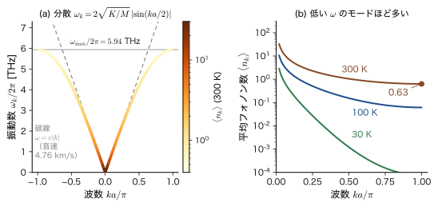
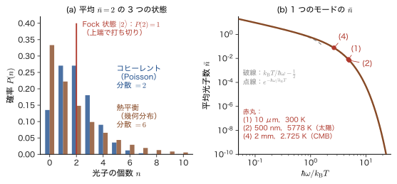
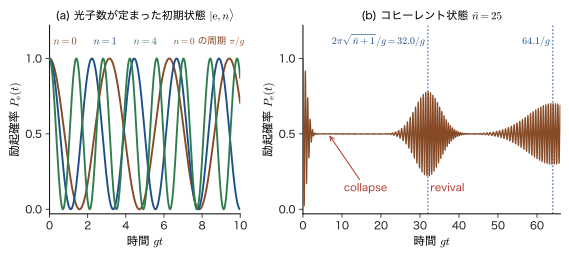
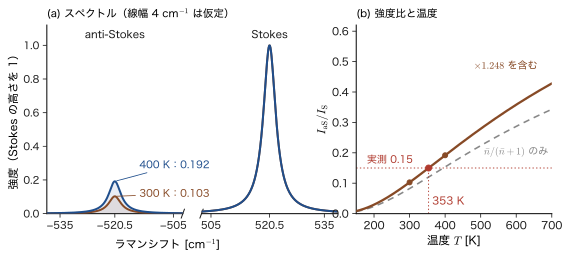
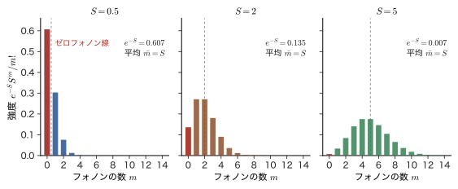

第60章光子とフォノン — 場の量子化と粒子数が変わる過程
熱い鉄の棒が赤く光るとき，棒の中では何が起きているのだろうか．結晶の中の原子は平衡の位置のまわりで絶えず揺れており（格子振動），その揺れが電荷の動きを通して光を出す．光を出すということは，電磁場のエネルギーが増えることである．ところが，前の章までに学んだ Schrödinger（シュレーディンガー）方程式の波動関数は，粒子の数が決まった系の運動を調べる道具だった．「光が 1 個生まれる」「格子振動の量子が 1 個消える」という出来事を書き表すには，第X部で学んだ生成・消滅演算子の言葉が必要になる．この章は，第X部の最後の章として，その言葉を，材料の物性にとってもっとも大事な 2 つの場——格子振動と電磁場——に適用する．その量子がフォノンと光子である．
「場を量子化する」という言葉は重く聞こえるが，やることは第56章の繰り返しである．鍵は，互いに結合した $N$ 個の調和振動子は，適当な座標（基準座標）に取り替えると，$N$ 個の互いに独立な調和振動子になるということである．独立になったモードのひとつひとつが，第56章で解いた 1 個の調和振動子そのものであり，量子数 $n$ が「そのモードの量子（フォノンまたは光子）の個数」になる．この章では，まず原子が一列に並んだ鎖でそれを具体的に見て（60.1 節），次に電磁場の平面波モードが同じ構造をもつことを示す（60.2 節）．そして，モードごとの平均個数 $\bar{n}=1/(e^{\hbar\omega/k_{\mathrm B}T}-1)$ から Planck の式を組み立て直し，熱・コヒーレント・Fock の 3 種類の光子数分布を比べる（60.3 節）．
古典物理（AD 03 第53章 53.2，53.7）との違いも，この章で初めてはっきり見える．古典電磁気学では，真空の電磁場は 0 で，励起された原子に光を出させるものは何もない．ところが量子化された電磁場には，光子が 1 個もいなくても零点振動があり，それが励起原子に光を出させる．自然放出は，真空の揺らぎによる誘導放出とみなせるのである（60.4 節）．半導体が光を吸って電子・正孔対ができる過程，LED が光る過程，電子がフォノンを放出してエネルギーを失う過程，Raman 散乱で温度が測れる理由（60.5 節）は，どれも「光子やフォノンが 1 個増える・減る」という同じ形の項で書ける．最後に，外から力で駆動された振動子がコヒーレント状態になることを示し，Franck–Condon 則と Huang–Rhys 因子，そして第IX部（第54章）で学んだ線形応答と，姉妹編「線形応答理論（AD 08）」への入口である力学的な応答関数 $\chi(\omega)=1/[m(\omega_0^2-\omega^2)]$ を，Heisenberg 方程式から導く（60.6 節）．
第X部のなかでの位置．第56章で 1 個の振動子，第57章で多数のモードと Bose・Fermi 粒子，第58章で 1 体・2 体演算子と場の演算子，第59章で電子ガスと Hubbard 模型を学んだ．この章は，それらの道具を「粒子の数が変わる過程」に使う．第IX部の第52章では，光を古典的な電磁波として扱い，Einstein の係数を熱平衡の論法から決めた．本章では，電磁場を量子化して同じ自然放出率 $A=\omega^3\abs{d}^2/(3\pi\varepsilon_0\hbar c^3)$ を直接導き，第52章の結果と一致することを確かめる．
- 1 次元原子鎖の運動方程式を基準座標で解き，分散関係 $\omega_k=2\sqrt{K/M}\,\abs{\sin(ka/2)}$ を導き，量子化して $\hat{H}=\sum_k\hbar\omega_k(\hat{a}_k^\dagger\hat{a}_k+\tfrac12)$ と $\hat{u}_n=\sum_k\sqrt{\hbar/2NM\omega_k}\,(\hat{a}_ke^{ikna}+\mathrm{h.c.})$ を示せること（h.c. は hermitian conjugate の略で，エルミート共役．直前の項のエルミート共役を足すという意味）．フォノンの数・零点振動・熱振動（Debye–Waller 因子）を数値で見積もれること
- 電磁場（Coulomb ゲージ，箱の平面波）のエネルギーが各モードの調和振動子の和になることを示し，$\hat{H}=\sum\hbar\omega(\hat{a}_{\bm{k}\lambda}^\dagger\hat{a}_{\bm{k}\lambda}+\tfrac12)$ と真空の電場 $E_{\mathrm{vac}}=\sqrt{\hbar\omega/2\varepsilon_0V}$ を導けること．Casimir 効果が零点エネルギーの現れであることを述べられること
- 熱平衡の平均個数 $\bar{n}=1/(e^{\hbar\omega/k_{\mathrm B}T}-1)$ と分散 $\bar{n}(\bar{n}+1)$ を導き，Planck の式をモードの個数の数え上げから組み立て，熱・コヒーレント・Fock の光子数分布を比べられること
- 二準位原子と 1 つの光子モード（Jaynes–Cummings 模型）の $2\times2$ 問題を解き，行列要素 $\hbar g\sqrt{n+1}$，Rabi 振動 $P_{\mathrm e}=\cos^2(g\sqrt{n+1}\,t)$，collapse と revival を説明できること
- 吸収の $\sqrt{n}$，放出の $\sqrt{n+1}$（$=$ 自然放出 1 $+$ 誘導放出 $n$）から，自然放出率 $A=\omega^3\abs{d}^2/(3\pi\varepsilon_0\hbar c^3)$ を量子化した電磁場から導き，水素の $2p\to1s$（$6.27\times10^{8}\ \mathrm{s^{-1}}$，$1.60\ \mathrm{ns}$）とルビーの R 線で数値を確かめられること
- 半導体の光吸収・発光，電子・フォノン相互作用，Raman 散乱の Stokes 線（$\sqrt{n+1}$）と anti-Stokes 線（$\sqrt{n}$）を演算子で書き，強度比 $\bar{n}/(\bar{n}+1)=e^{-\hbar\omega/k_{\mathrm B}T}$ から温度を求められること．電子数は保存し，光子数とフォノン数は保存しない理由を述べられること
- 一定の力を受けた調和振動子 $\hat{H}=\hbar\omega\hat{a}^\dagger\hat{a}+G(\hat{a}+\hat{a}^\dagger)$ を平方完成で厳密に解き，基底状態がコヒーレント状態，平均個数が $\abs{\alpha}^2=F^2/(2m\hbar\omega^3)$ であることを示し，Huang–Rhys 因子 $S$ と発光スペクトルの振動系列（Poisson 分布）に結びつけられること．Heisenberg 方程式で時間依存の駆動を解き，力学的な応答関数 $\chi(\omega)$ と AD 08 の符号規約との違いを説明できること
前提（必要に応じて）：調和振動子（第13章），Heisenberg 表示（第50章 50.3 節），Fermi の黄金律（第51章 51.2 節），二準位系と Rabi 振動（51.3 節），電気双極子近似と Einstein の係数（第52章 52.2 節，52.5 節），Franck–Condon の原理（第53章 53.5 節），線形応答の応答関数と調和振動子の例（第54章 54.2 節の例題54.3）．数学は，複素 Fourier 級数（大学数学 第28章 28.3），弦の振動（大学数学 第43章 43.2），Planck の公式（大学数学 第49章 49.4，49.5）．物理は，電磁波とそのエネルギー（大学基礎物理学 第42章 42.3，42.5），空洞内のモードの数え上げ（第53章 53.2），固体の格子振動（53.7），光子とフォノン（53.10）．
もとにしたノート：本章はノートにない内容を補った章である．関連するノート：望月泰英『物理学ノート 量子力学3』 pp. 61–64（生成・消滅演算子の導入と，「Bose 粒子は粒子数変化が常に生じる．威力は後半に」という予告の回収）．
60.1 結合振動子から基準モードへ — 格子振動の量子化とフォノン
第56章で解いた調和振動子は，1 個の質点がばねにつながれた系だった．結晶の中の原子は，まわりの原子とのあいだに働く力で平衡の位置に束縛されているので，小さな変位の範囲では，1 個 1 個が調和振動子に似ている．しかし，原子は孤立していない．ある原子が動けば，隣の原子との間隔が変わり，その原子にも力がはたらく．つまり，$N$ 個の調和振動子が互いにばねでつながっている．この状況を，もっとも簡単な形——一直線に並んだ原子の鎖——で調べよう．
60.1.1 原子の鎖の運動方程式
定義60.1 1 次元原子鎖の模型
質量 $M$ の原子 $N$ 個が，平衡の位置 $x_n=na$（$n=0,1,\dots,N-1$，$a$ は原子の間隔）に並び，隣り合う原子どうしがばね定数 $K$ のばねでつながれている（図60.1 の上段）．原子 $n$ の平衡の位置からの変位を $u_n$（鎖に沿った向きを正とする），運動量を $p_n=M\dot{u}_n$ とする．両端の影響を消すために，鎖を輪にして $u_{n+N}=u_n$ とおく（周期境界条件．Born と von Kármán，1912）．
エネルギーは，運動エネルギーと，隣どうしのばねに蓄えられるエネルギーの和である：
\begin{equation} H=\sum_{n=0}^{N-1}\frac{p_n^2}{2M}+\frac{K}{2}\sum_{n=0}^{N-1}\left(u_{n+1}-u_n\right)^2 \label{eq:60-chain-H} \end{equation}ばねの伸びは $u_{n+1}-u_n$ なので，後半はばね 1 本あたり $\tfrac12K(\text{伸び})^2$ を足したものである．原子 $n$ には，右のばね（伸びが $u_{n+1}-u_n$ なら右向きに $K(u_{n+1}-u_n)$ の力）と左のばね（伸びが $u_n-u_{n-1}$ なら左向きに $K(u_n-u_{n-1})$ の力）がはたらくから，運動方程式は
\begin{equation} M\ddot{u}_n=K\left(u_{n+1}-u_n\right)-K\left(u_n-u_{n-1}\right)=K\left(u_{n+1}-2u_n+u_{n-1}\right) \label{eq:60-chain-eom} \end{equation}である．$n=0,1,\dots,N-1$ の $N$ 本の式が，$u_{n\pm1}$ を通して互いにからみ合っている．これを解くために，$a\to0$ の極限で弦の波動方程式になる（大学数学 第43章 43.2）ことを思い出し，波の形の解 $u_n=A\,e^{i(kna-\omega t)}$ を試そう．位置 $x=na$ での平面波 $e^{i(kx-\omega t)}$ を，原子の位置でだけ評価したものである．
導出：波の形の解と分散関係
$u_n=A\,e^{i(kna-\omega t)}$ を式 \eqref{eq:60-chain-eom} に代入する．時間の 2 階微分は $\ddot{u}_n=-\omega^2u_n$，また $u_{n\pm1}=A\,e^{i(kna-\omega t)}e^{\pm ika}=u_n\,e^{\pm ika}$ だから，共通因子 $u_n$ を消して
$$ -M\omega^2=K\left(e^{ika}-2+e^{-ika}\right)=K\,(2\cos ka-2)=-4K\sin^2\frac{ka}{2} $$となる（最後の等号は $1-\cos ka=2\sin^2(ka/2)$）．したがって $\omega^2=\dfrac{4K}{M}\sin^2\dfrac{ka}{2}$ で，$\omega\ge0$ をとると，次の分散関係が得られる．
（導出終わり）
周期境界条件 $u_{n+N}=u_n$ は，$e^{ikNa}=1$ を要求する．よって波数 $k$ はとびとびの値
\begin{equation} k=\frac{2\pi}{Na}\,m\qquad(m\text{ は整数}) \label{eq:60-k} \end{equation}に限られる．さらに，$k$ と $k+2\pi/a$ は，原子の位置 $x=na$ では $e^{i(2\pi/a)na}=e^{2\pi in}=1$ となって区別がつかない（波長が原子の間隔より短い波は，格子の上では，もっと長い波と同じ変位を与える）．そこで，独立な $k$ は $-\pi/a\lt k\le\pi/a$（第 1 Brillouin ゾーン）の $N$ 個だけで，$N$ 個の原子の運動の自由度の数 $N$ と一致する．
分散関係 \eqref{eq:60-disp} の形を見ておこう（図60.2(a)）．長波長（$ka\ll1$）では $\sin(ka/2)\approx ka/2$ だから，
$$ \omega_k\approx a\sqrt{\frac{K}{M}}\;\abs{k}\equiv v\abs{k}\qquad\left(v=a\sqrt{K/M}\right) $$と $\omega$ が $k$ に比例し，$v$ は音の速さである（連続体の弦の波と同じ．AD 03 53.7 の固体の格子振動の音速）．ところが $k$ が大きくなると，曲線は直線から離れて平らになり，ゾーンの端 $k=\pi/a$ で最大値 $\omega_{\max}=2\sqrt{K/M}$ をとる．群速度 $\dd\omega/\dd k=a\sqrt{K/M}\cos(ka/2)$ は端で $0$ になり，その波は進まない定在波である（図60.1(c)）．波長が原子の間隔の 2 倍（$2a$）より短い波は存在しないので，振動数に上限がある．これは連続体の弦にはなかった，原子が離散的に並んでいることの効果である．なお，電子の波に対するバンド $E(k)=\alpha+2\beta\cos ka$（第41章 41.2 節）も，同じ格子の上の波なので，$k$ の周期性とゾーン端での平らな形は共通である．
例題60.1 Cu 型の 1 次元鎖のばね定数と最大振動数
Cu 結晶を 1 次元鎖で置き換える．原子の質量 $M=63.55\ \mathrm{u}$（$1\ \mathrm{u}=1.660\,539\times10^{-27}\ \mathrm{kg}$），間隔 $a=0.255\ \mathrm{nm}$（最近接原子間距離），音の速さ $v=4.76\ \mathrm{km/s}$ とする．(1) ばね定数 $K$ を求めよ．(2) 最大の角振動数 $\omega_{\max}$，振動数 $\omega_{\max}/2\pi$，フォノンのエネルギー $\hbar\omega_{\max}$ を求めよ．(3) $ka=\pi/2$ のモードの振動数を求めよ．
解答 (1) $M=63.55\times1.660\,539\times10^{-27}=1.0553\times10^{-25}\ \mathrm{kg}$．$v=a\sqrt{K/M}$ より $K=Mv^2/a^2$．$v^2=(4.76\times10^{3})^2=2.2658\times10^{7}\ \mathrm{m^2/s^2}$，$a^2=(0.255\times10^{-9})^2=6.5025\times10^{-20}\ \mathrm{m^2}$ なので
$$ K=\frac{1.0553\times10^{-25}\times2.2658\times10^{7}}{6.5025\times10^{-20}}=\frac{2.3911\times10^{-18}}{6.5025\times10^{-20}}=36.8\ \mathrm{N/m} $$である（単位は $\mathrm{kg\,m^2\,s^{-2}}/\mathrm{m^2}=\mathrm{N/m}$）．
(2) $\omega_{\max}=2\sqrt{K/M}=2v/a=\dfrac{2\times4760}{0.255\times10^{-9}}=3.73\times10^{13}\ \mathrm{rad/s}$．振動数は $\omega_{\max}/2\pi=5.94\times10^{12}\ \mathrm{Hz}=5.94\ \mathrm{THz}$（波数に直すと $5.94\times10^{12}/(2.998\times10^{10}\ \mathrm{cm/s})=198\ \mathrm{cm^{-1}}$）．フォノンのエネルギーは $\hbar\omega_{\max}=1.0546\times10^{-34}\times3.733\times10^{13}=3.94\times10^{-21}\ \mathrm{J}=24.6\ \mathrm{meV}$ である（$1\ \mathrm{eV}=1.602\times10^{-19}\ \mathrm{J}$）．
(3) $ka=\pi/2$ では $\sin(ka/2)=\sin(\pi/4)=1/\sqrt2$ なので $\omega=\omega_{\max}/\sqrt2$，振動数は $5.94/\sqrt2=4.20\ \mathrm{THz}$（$\hbar\omega=17.4\ \mathrm{meV}$）である．実際の Cu の格子振動の最高振動数は約 $7\ \mathrm{THz}$ で，3 次元の効果（横波と縦波，遠い隣との結合）のため，1 次元鎖の値とは 2 割ほど違うが，桁はよく合っている．
60.1.2 基準座標 — 結合した振動子が独立な振動子になる
式 \eqref{eq:60-chain-eom} の解 $e^{i(kna-\omega t)}$ は，$N$ 個の原子がある決まった位相関係で一斉に振動する運動で，基準モード（normal mode）とよばれる（図60.1）．一般の運動は，これらのモードの重ね合わせである．この事実を，エネルギーの式 \eqref{eq:60-chain-H} が「独立な調和振動子の和」に書き直せることとして，きちんと確かめよう．座標と運動量の Fourier 変換（基準座標と，それに共役な運動量）を
\begin{equation} Q_k=\frac{1}{\sqrt N}\sum_{n=0}^{N-1}u_n\,e^{-ikna},\qquad P_k=\frac{1}{\sqrt N}\sum_{n=0}^{N-1}p_n\,e^{-ikna} \label{eq:60-QP} \end{equation}で定義する（$k$ は式 \eqref{eq:60-k} の $N$ 個の値）．逆変換は
\begin{equation} u_n=\frac{1}{\sqrt N}\sum_{k}Q_k\,e^{ikna},\qquad p_n=\frac{1}{\sqrt N}\sum_kP_k\,e^{ikna} \label{eq:60-QPinv} \end{equation}である．これらが逆変換になっているのは，離散的な直交関係
\begin{equation} \frac{1}{N}\sum_{n=0}^{N-1}e^{i(k-k')na}=\delta_{kk'},\qquad \frac{1}{N}\sum_{k}e^{ik(n-n')a}=\delta_{nn'} \label{eq:60-orth} \end{equation}による（等比級数の和の公式．大学数学 第28章 28.3）．$u_n$ は実数だから，\eqref{eq:60-QP} から $Q_{-k}=Q_k^*$，同様に $P_{-k}=P_k^*$ である．
導出：エネルギーが基準座標で対角になる
運動エネルギーは，式 \eqref{eq:60-QPinv} を代入し，式 \eqref{eq:60-orth} で $n$ の和をとると（Parseval の等式）
$$ \sum_np_n^2=\frac{1}{N}\sum_n\sum_{k,k'}P_kP_{k'}^*\,e^{i(k-k')na}=\sum_{k,k'}P_kP_{k'}^*\,\delta_{kk'}=\sum_k\abs{P_k}^2 $$となる（$p_n^2=p_np_n^*$ と書き，$p_n^*=N^{-1/2}\sum_{k'}P_{k'}^*e^{-ik'na}$ を使った）．ばねのエネルギーは，$u_{n+1}-u_n=N^{-1/2}\sum_kQ_k(e^{ika}-1)e^{ikna}$ より同様にして
$$ \sum_n\left(u_{n+1}-u_n\right)^2=\sum_k\abs{e^{ika}-1}^2\abs{Q_k}^2=\sum_k4\sin^2\frac{ka}{2}\,\abs{Q_k}^2 $$（$\abs{e^{ika}-1}^2=2-2\cos ka=4\sin^2(ka/2)$）．したがって，式 \eqref{eq:60-chain-H} は
\begin{equation} H=\sum_k\left[\frac{\abs{P_k}^2}{2M}+\frac12M\omega_k^2\abs{Q_k}^2\right],\qquad \omega_k^2=\frac{4K}{M}\sin^2\frac{ka}{2} \label{eq:60-Hk} \end{equation}となる（ばねの項の $\tfrac K2\cdot4\sin^2(ka/2)=\tfrac12M\omega_k^2$ を使った）．
（導出終わり）
式 \eqref{eq:60-Hk} は，質量 $M$，角振動数 $\omega_k$ の調和振動子のエネルギー $\dfrac{p^2}{2M}+\dfrac12M\omega^2q^2$ を，$k$ ごとに足したものである．$k$ と $-k$ の 2 つのモードは，$Q_{-k}=Q_k^*$ なので，実数の座標 2 個（$Q_k$ の実部と虚部．進行波 $e^{ikna}$ を，定在波 $\cos kna$ と $\sin kna$ に分けたもの）に対応する．結合していた $N$ 個の原子の運動は，互いに独立な $N$ 個の調和振動子に分解された．これが，「場の量子化」の第 1 歩である．
数学の道具：並進対称性と Fourier 変換
運動方程式 \eqref{eq:60-chain-eom} は，$\ddot{u}_n=-\sum_{m}D_{nm}u_m$ と，$N\times N$ の行列 $D$（対角成分 $2K/M$，隣接する成分 $-K/M$，輪の形なので $D_{0,N-1}=D_{N-1,0}=-K/M$）で書ける．この行列は，$n$ を 1 つずらしても形が変わらない（並進対称性をもつ）巡回行列で，その固有ベクトルは必ず平面波 $(e^{ikna})_n$ になり，固有値が $\omega_k^2$ である．Fourier 変換 \eqref{eq:60-QP} は，行列 $D$ を対角化する座標変換そのものである（行列の対角化．大学数学 第12章 12.1）．結晶の並進対称性が，「$k$ が良い量子数になる」理由である．
60.1.3 量子化 — フォノンの生成・消滅演算子
古典的には独立な調和振動子になったのだから，量子化は第56章の繰り返しである．原子の変位 $u_n$ と運動量 $p_n$ を演算子 $\hat{u}_n$，$\hat{p}_n$ に格上げし，正準交換関係
\begin{equation} \comm{\hat{u}_n}{\hat{p}_m}=i\hbar\,\delta_{nm},\qquad\comm{\hat{u}_n}{\hat{u}_m}=\comm{\hat{p}_n}{\hat{p}_m}=0 \label{eq:60-ccr} \end{equation}を要求する．基準座標の演算子を式 \eqref{eq:60-QP} と同じ形 $\hat{Q}_k=N^{-1/2}\sum_n\hat{u}_ne^{-ikna}$，$\hat{P}_k=N^{-1/2}\sum_n\hat{p}_ne^{-ikna}$ で定義すると，式 \eqref{eq:60-orth} から，$\hat{Q}_k$ と $\hat{P}_{k'}$ の交換関係が
\begin{equation} \comm{\hat{Q}_k}{\hat{P}_{k'}}=\frac{1}{N}\sum_{n,m}e^{-ikna}e^{-ik'ma}\,i\hbar\,\delta_{nm}=i\hbar\,\frac1N\sum_ne^{-i(k+k')na}=i\hbar\,\delta_{k,-k'} \label{eq:60-QPcomm} \end{equation}と決まる（$k$ は $2\pi/a$ の整数倍を除いて決まるので，$\delta_{k,-k'}$ は $k\equiv-k'\ (\mathrm{mod}\ 2\pi/a)$ の意味である．ゾーン端 $k=\pi/a$ では $-k\equiv k$ なので，$\hat{Q}_{\pi/a}$ は実の（エルミートな）演算子になる）．$\hat{Q}_k^\dagger=\hat{Q}_{-k}$，$\hat{P}_k^\dagger=\hat{P}_{-k}$ なので，同じことは $\comm{\hat{Q}_k}{\hat{P}_{k'}^\dagger}=i\hbar\,\delta_{kk'}$ とも書ける．つまり $k$ ごとに，$\hat{Q}_k$ と $\hat{P}_k^\dagger$ が正準共役の対になる．ハミルトニアンは，式 \eqref{eq:60-Hk} の $\abs{P_k}^2=P_k^\dagger P_k$ などを演算子に置き換えて $\hat{H}=\sum_k\left[\hat{P}_k^\dagger\hat{P}_k/2M+\tfrac12M\omega_k^2\hat{Q}_k^\dagger\hat{Q}_k\right]$ である．
ここで，$\omega_k=0$ の $k=0$ のモードだけは別扱いにする．$\hat{P}_0=N^{-1/2}\sum_n\hat{p}_n$ は鎖全体の運動量（の $1/\sqrt N$ 倍）で，$k=0$ の項は復元力をもたない重心の運動エネルギー $\hat{P}_0^\dagger\hat{P}_0/2M$ だけである（図60.1(a)）．これは振動ではないので，以下では $k\ne0$ の $N-1$ 個のモードだけを考える（$N$ を偶数とすると，これは $\pm k$ の対 $(N-2)/2$ 組と，実の座標 1 個のゾーン端 $k=\pi/a$ からなる．実の自由度の数は $2\times(N-2)/2+1=N-1$ である）．$k\ne0$ に対して，第56章の $\hat{a}=\sqrt{m\omega/2\hbar}\,(\hat{x}+i\hat{p}/m\omega)$ と同じ形の演算子を定義する：
\begin{equation} \hat{a}_k=\sqrt{\frac{M\omega_k}{2\hbar}}\left(\hat{Q}_k+\frac{i}{M\omega_k}\hat{P}_k\right)\qquad(k\ne0) \label{eq:60-a} \end{equation}定理60.1 格子振動の量子化
式 \eqref{eq:60-a} の $\hat{a}_k$ は交換関係
\begin{equation} \comm{\hat{a}_k}{\hat{a}_{k'}^\dagger}=\delta_{kk'},\qquad\comm{\hat{a}_k}{\hat{a}_{k'}}=0 \label{eq:60-aa} \end{equation}を満たし，鎖のハミルトニアンは（重心の運動エネルギーを除いて）
\begin{equation} \hat{H}=\sum_{k\ne0}\hbar\omega_k\left(\hat{a}_k^\dagger\hat{a}_k+\tfrac12\right) \label{eq:60-Hph} \end{equation}となる．変位と運動量は，次のように展開される．
\begin{equation} \hat{u}_n=\sum_{k\ne0}\sqrt{\frac{\hbar}{2NM\omega_k}}\left(\hat{a}_k\,e^{ikna}+\hat{a}_k^\dagger\,e^{-ikna}\right),\qquad \hat{p}_n=-i\sum_{k\ne0}\sqrt{\frac{\hbar M\omega_k}{2N}}\left(\hat{a}_k\,e^{ikna}-\hat{a}_k^\dagger\,e^{-ikna}\right) \label{eq:60-u} \end{equation}証明
交換関係．$\hat{a}_{k'}^\dagger=\sqrt{M\omega_{k'}/2\hbar}\,\bigl(\hat{Q}_{k'}^\dagger-i\hat{P}_{k'}^\dagger/M\omega_{k'}\bigr)$ なので，$\hat{Q}$ どうし，$\hat{P}$ どうしは交換することを使うと
$$ \comm{\hat{a}_k}{\hat{a}_{k'}^\dagger}=\frac{M\sqrt{\omega_k\omega_{k'}}}{2\hbar}\left(\frac{-i}{M\omega_{k'}}\comm{\hat{Q}_k}{\hat{P}_{k'}^\dagger}+\frac{i}{M\omega_k}\comm{\hat{P}_k}{\hat{Q}_{k'}^\dagger}\right) $$である．$\comm{\hat{Q}_k}{\hat{P}_{k'}^\dagger}=i\hbar\,\delta_{kk'}$ と $\comm{\hat{P}_k}{\hat{Q}_{k'}^\dagger}=-\comm{\hat{Q}_{k'}^\dagger}{\hat{P}_k}=-i\hbar\,\delta_{kk'}$（$\comm{\hat{Q}_{-k'}}{\hat{P}_k}=i\hbar\,\delta_{-k',-k}$）を入れ，$k=k'$ で $\omega_k=\omega_{k'}$ だから
$$ \comm{\hat{a}_k}{\hat{a}_{k'}^\dagger}=\frac{M\omega_k}{2\hbar}\left(\frac{\hbar}{M\omega_k}+\frac{\hbar}{M\omega_k}\right)\delta_{kk'}=\delta_{kk'} $$を得る．$\comm{\hat{a}_k}{\hat{a}_{k'}}$ は，$\comm{\hat{Q}_k}{\hat{P}_{k'}}=i\hbar\,\delta_{k,-k'}$ から，$\dfrac{M\sqrt{\omega_k\omega_{k'}}}{2\hbar}\left(\dfrac{i}{M\omega_{k'}}-\dfrac{i}{M\omega_k}\right)i\hbar\,\delta_{k,-k'}$ となり，$\omega_{-k}=\omega_k$ なので $0$ になる．
ハミルトニアン．$\hat{a}_k^\dagger\hat{a}_k$ を展開すると（第56章の因数分解と同じ計算）
$$ \hat{a}_k^\dagger\hat{a}_k=\frac{M\omega_k}{2\hbar}\left[\hat{Q}_k^\dagger\hat{Q}_k+\frac{\hat{P}_k^\dagger\hat{P}_k}{(M\omega_k)^2}+\frac{i}{M\omega_k}\left(\hat{Q}_k^\dagger\hat{P}_k-\hat{P}_k^\dagger\hat{Q}_k\right)\right] $$である．両辺に $\hbar\omega_k$ をかけて $k$ について足す．最後の項は，2 項目で $k\to-k$ と置き換えると $\sum_k\dfrac{i}{M\omega_k}\left(\hat{Q}_{-k}\hat{P}_k-\hat{P}_k\hat{Q}_{-k}\right)=\sum_k\dfrac{i}{M\omega_k}\comm{\hat{Q}_{-k}}{\hat{P}_k}=\sum_k\dfrac{i\cdot i\hbar}{M\omega_k}$ となる．したがって
$$ \sum_k\hbar\omega_k\hat{a}_k^\dagger\hat{a}_k=\sum_k\left[\frac{\hat{P}_k^\dagger\hat{P}_k}{2M}+\frac12M\omega_k^2\hat{Q}_k^\dagger\hat{Q}_k\right]-\sum_k\frac{\hbar\omega_k}{2} $$で，右辺の第 1 項が $\hat{H}$ である．移項して式 \eqref{eq:60-Hph} を得る．
展開．式 \eqref{eq:60-a} とそのエルミート共役 $\hat{a}_{-k}^\dagger=\sqrt{M\omega_k/2\hbar}\,\bigl(\hat{Q}_k-i\hat{P}_k/M\omega_k\bigr)$（$\hat{Q}_{-k}^\dagger=\hat{Q}_k$，$\hat{P}_{-k}^\dagger=\hat{P}_k$ を使った）の和と差をとると，$\hat{Q}_k=\sqrt{\hbar/2M\omega_k}\,(\hat{a}_k+\hat{a}_{-k}^\dagger)$，$\hat{P}_k=-i\sqrt{\hbar M\omega_k/2}\,(\hat{a}_k-\hat{a}_{-k}^\dagger)$ となる．これを式 \eqref{eq:60-QPinv} に代入し，$\hat{a}_{-k}^\dagger$ の項で $k\to-k$ と置き換える（$\omega_{-k}=\omega_k$）と式 \eqref{eq:60-u} になる．
（証明終わり）
式 \eqref{eq:60-Hph} は，各 $k$ について第56章の $\hat{H}=\hbar\omega(\hat{N}+\tfrac12)$ そのものである．数演算子 $\hat{N}_k=\hat{a}_k^\dagger\hat{a}_k$ の固有値 $n_k=0,1,2,\dots$ が，モード $k$ の量子の個数である．これがフォノンである．状態は占有数の組 $\ket{\{n_k\}}=\prod_k\dfrac{(\hat{a}_k^\dagger)^{n_k}}{\sqrt{n_k!}}\ket{0}$（第57章．ここの $\ket{0}$ は「どのモードにもフォノンがいない真空」）で，エネルギーは $E=\sum_k\hbar\omega_k(n_k+\tfrac12)$ である．
定義60.2 フォノン
格子振動の基準モード（波数 $k$）の量子をフォノン（phonon）という．$\hat{a}_k^\dagger$ はエネルギー $\hbar\omega_k$ のフォノンを 1 個つくり，$\hat{a}_k$ は 1 個消す．フォノンは，結晶の中のみかけの粒子（準粒子）で，エネルギー $\hbar\omega_k$ と結晶運動量 $\hbar k$ をもつ．Bose 粒子であり（同じモードに何個でも入れる），その数は保存しない．
考察：フォノンの演算子の記号 — $\hat{a}_k$ と $\hat{b}_{\bm{q}\nu}$
60.1 節の終わりまでは，第56章の $\hat{a}$ との連続性を見せるために，格子振動の量子の演算子を $\hat{a}_k$ と書く．光子が登場する 60.2 節以降は，光子の演算子 $\hat{a}_{\bm{k}\lambda}$ と区別して $\hat{b}_{\bm{q}\nu}$ を用いる（$\bm{q}$ は波数ベクトル，$\nu$ は分枝の番号．AD 09 と同じ記号）．1 次元の単原子鎖では分枝は 1 つだけなので，$\hat{b}_q=\hat{a}_k$（$q=k$）である．3 次元の結晶では，単位胞に $r$ 個の原子があると，音響モード 3 本と光学モード $3(r-1)$ 本の合わせて $3r$ 本の分枝がある（姉妹編の固体物理学 AD 06 の第13章 フォノンIで扱う）．正孔の演算子 $\hat{h}$ の $h$ は hole の頭文字で，Planck 定数とは別物である．
注意：結晶運動量 $\hbar k$ は本物の運動量ではない
フォノンは結晶全体が動くのではなく，原子が平衡の位置のまわりで揺れる運動の量子だから，式 \eqref{eq:60-u} のモードは鎖の全運動量を運ばない（全運動量 $\sum_n\hat{p}_n=\sqrt{N}\hat{P}_0$ は $k=0$ の成分だけで，$k\ne0$ のモードは含まない）．$\hbar k$ は，結晶の並進対称性（$a$ ずらすと $e^{ika}$ の位相がかかる）から決まる結晶運動量で，$k\to k+2\pi/a$ の置き換えで変わらない．フォノンが関わる衝突では，結晶運動量は $2\pi\hbar m/a$（$m$ は整数．$2\pi m/a$ は逆格子ベクトル）の違いを除いて保存する．$m\ne0$ の場合を Umklapp 過程という．
式 \eqref{eq:60-u} の右側の項 $\hat{a}_k^\dagger e^{-ikna}$ は，左側の項 $\hat{a}_ke^{ikna}$ のエルミート共役（hermitian conjugate．h.c. と略記する）である．$\hat{u}_n$ がエルミート演算子なので，和の中には必ずこの組が現れる．式 \eqref{eq:60-u} の変位の展開を見ると，$\hat{a}_k$ の係数は $1/\sqrt{\omega_k}$ に比例する．ばねが柔らかい（$\omega_k$ が小さい）モードほど，同じ量子数でも大きく動く．また，$1/\sqrt N$ があるので，1 個のフォノンによる原子 1 個あたりの変位は，結晶が大きいほど小さい．

例題60.2 格子振動のモードに入っているフォノンの数
例題60.1 の鎖で，ゾーン端（$ka=\pi$）のモード（$\hbar\omega_{\max}=24.6\ \mathrm{meV}$）の平均フォノン数 $\bar{n}=1/(e^{\hbar\omega/k_{\mathrm B}T}-1)$ を $300\ \mathrm{K}$ と $10\ \mathrm{K}$ で求めよ．また，$ka=\pi/2$ のモード（$\hbar\omega=17.4\ \mathrm{meV}$）の $300\ \mathrm{K}$ での値と，ゾーン端のモードの平均エネルギー $\hbar\omega(\bar{n}+\tfrac12)$ を $k_{\mathrm B}T$ と比べよ．
解答 $k_{\mathrm B}T$ は $300\ \mathrm{K}$ で $25.85\ \mathrm{meV}$，$10\ \mathrm{K}$ で $0.8617\ \mathrm{meV}$ である（$k_{\mathrm B}=8.617\times10^{-5}\ \mathrm{eV/K}$）．ゾーン端のモードについて，$300\ \mathrm{K}$ では $\hbar\omega/k_{\mathrm B}T=24.57/25.85=0.9505$，$e^{0.9505}=2.587$ なので
$$ \bar{n}=\frac{1}{2.587-1}=0.63 $$である．$10\ \mathrm{K}$ では $\hbar\omega/k_{\mathrm B}T=24.57/0.8617=28.5$ で，$\bar{n}\approx e^{-28.5}=4\times10^{-13}$．$10\ \mathrm{K}$ では，このモードに励起されたフォノンは事実上 $1$ 個もいない．$ka=\pi/2$ のモードでは，$300\ \mathrm{K}$ で $\hbar\omega/k_{\mathrm B}T=17.37/25.85=0.672$，$e^{0.672}=1.958$ より $\bar{n}=1/0.958=1.04$ である．ゾーン端より振動数が低いので，フォノンが多い．
ゾーン端のモードの平均エネルギーは，$300\ \mathrm{K}$ で $\hbar\omega(\bar{n}+\tfrac12)=24.57\times1.13=27.8\ \mathrm{meV}$ で，古典的な等分配の値 $k_{\mathrm B}T=25.85\ \mathrm{meV}$ よりわずかに大きい（$\hbar\omega\approx k_{\mathrm B}T$ のときは，零点エネルギー $\tfrac12\hbar\omega=12.3\ \mathrm{meV}$ が，古典論と量子論のずれを作る）．$10\ \mathrm{K}$ では平均エネルギーは $\tfrac12\hbar\omega=12.3\ \mathrm{meV}$ にほぼ等しく，$k_{\mathrm B}T=0.86\ \mathrm{meV}$ よりはるかに大きい．低温では，古典論（$k_{\mathrm B}T$）が与えるよりずっと大きなエネルギーが，零点振動として残る．
60.1.4 零点振動と熱振動 — 原子はどれだけ揺れているか
式 \eqref{eq:60-u} を使うと，原子 1 個の変位の 2 乗平均 $\expval{u_n^2}$ が計算できる．$\hat{u}_n^2$ を展開すると，$\hat{a}_k\hat{a}_{k'}$ や $\hat{a}_k^\dagger\hat{a}_{k'}$（$k\ne k'$）の項が出るが，熱平衡の状態や $\ket{\{n_k\}}$ では，異なるモードの演算子の積の期待値は $0$ になる（各モードが独立に占有されている）ので，残るのは同じモードの組だけで
\begin{equation} \expval{u_n^2}=\sum_k\frac{\hbar}{2NM\omega_k}\expval{\hat{a}_k\hat{a}_k^\dagger+\hat{a}_k^\dagger\hat{a}_k}=\sum_k\frac{\hbar}{2NM\omega_k}\left(2\bar{n}_k+1\right)=\sum_k\frac{\hbar}{2NM\omega_k}\coth\frac{\hbar\omega_k}{2k_{\mathrm B}T} \label{eq:60-u2} \end{equation}である（$\hat{a}\hat{a}^\dagger=\hat{a}^\dagger\hat{a}+1$ と，$2\bar{n}+1=\dfrac{e^{x}+1}{e^{x}-1}=\coth\dfrac{x}{2}$，$x=\hbar\omega/k_{\mathrm B}T$ を使った）．右辺の $\tfrac12$ に当たる $\bar{n}_k=0$ の部分が零点振動で，絶対零度でも原子が揺れ続けることを表す．これは，第13章 13.5 節で見た調和振動子の零点エネルギーと不確定性原理（原子を格子点に閉じ込めると運動量が $0$ にならない）の帰結である．全モードの振動数をひとつの値 $\omega_{\mathrm E}$ で置き換える Einstein 模型（AD 03 第51章 51.2）では，$k$ の和が $N$ 個の等しい項になり
\begin{equation} \expval{u^2}=\frac{\hbar}{2M\omega_{\mathrm E}}\coth\frac{\hbar\omega_{\mathrm E}}{2k_{\mathrm B}T} \label{eq:60-u2E} \end{equation}となる．$T\to0$ では $\coth\to1$ で零点振動の値 $\hbar/2M\omega_{\mathrm E}$，高温では $\coth(x/2)\to2/x$ で $\expval{u^2}\to k_{\mathrm B}T/M\omega_{\mathrm E}^2$（古典的な等分配．ばねのエネルギー $\tfrac12M\omega_{\mathrm E}^2\expval{u^2}=\tfrac12k_{\mathrm B}T$）になる．
例題60.3 原子の零点振動と熱振動の大きさ，Debye–Waller 因子
$M=63.55\ \mathrm{u}$，$\omega_{\mathrm E}/2\pi=4.5\ \mathrm{THz}$（Cu 程度）の Einstein 振動子について，$0\ \mathrm{K}$ と $300\ \mathrm{K}$ の 1 方向の変位の二乗平均平方根 $u_{\mathrm{rms}}=\sqrt{\expval{u^2}}$ を求め，最近接原子間距離 $0.255\ \mathrm{nm}$ と比べよ．さらに，Cu K$\alpha$ の X 線（波長 $0.15406\ \mathrm{nm}$）で散乱角 $2\theta=90^\circ$ の回折線の強度が，熱振動でどれだけ減るかを，$\exp(-\Delta k^2\expval{u^2})$（$\Delta k=\abs{\bm{k}'-\bm{k}}$ は，入射 X 線と散乱 X 線の波数ベクトルの差，すなわち散乱ベクトルの大きさ）として見積もれ．
解答 $\omega_{\mathrm E}=2\pi\times4.5\times10^{12}=2.827\times10^{13}\ \mathrm{s^{-1}}$，$M=1.0553\times10^{-25}\ \mathrm{kg}$．零点振動の値は
$$ \frac{\hbar}{2M\omega_{\mathrm E}}=\frac{1.0546\times10^{-34}}{2\times1.0553\times10^{-25}\times2.827\times10^{13}}=1.767\times10^{-23}\ \mathrm{m^2} $$なので $u_{\mathrm{rms}}(0\ \mathrm{K})=4.20\times10^{-12}\ \mathrm{m}=4.2\ \mathrm{pm}$．$300\ \mathrm{K}$ では $\hbar\omega_{\mathrm E}/2k_{\mathrm B}T=\dfrac{18.61}{2\times25.85}=0.3600$，$\coth0.3600=2.897$ なので $u_{\mathrm{rms}}=4.204\times\sqrt{2.897}=7.2\ \mathrm{pm}$ である（比は $\sqrt{2.897}=1.70$）．原子間距離 $255\ \mathrm{pm}$ の $1.6\ \%$（零点）と $2.8\ \%$（$300\ \mathrm{K}$）にあたる．結晶が融けるのは，熱振動の振幅が原子間距離の $10\ \%$ 程度になったときといわれる（Lindemann の経験則）．
X 線の散乱ベクトルは $\Delta k=\dfrac{4\pi\sin\theta}{\lambda}=\dfrac{4\pi\sin45^\circ}{0.15406\ \mathrm{nm}}=57.7\ \mathrm{nm^{-1}}=5.77\times10^{10}\ \mathrm{m^{-1}}$（5.77 Å−1）．$\Delta k^2\expval{u^2}$ は，$0\ \mathrm{K}$ で $(5.77\times10^{10}\ \mathrm{m^{-1}})^2\times1.767\times10^{-23}\ \mathrm{m^2}=0.0588$，$300\ \mathrm{K}$ では $\expval{u^2}=(7.155\ \mathrm{pm})^2=5.12\times10^{-23}\ \mathrm{m^2}$ なので $(5.77\times10^{10})^2\times5.12\times10^{-23}=0.170$ となる．よって強度の因子は $e^{-0.0588}=0.943$（$0\ \mathrm{K}$）と $e^{-0.170}=0.843$（$300\ \mathrm{K}$）である．零点振動だけで強度が約 $6\ \%$，$300\ \mathrm{K}$ では約 $16\ \%$ 下がる．
応用：X 線回折の Debye–Waller 因子と原子変位パラメーター
結晶の X 線回折では，原子が瞬間ごとに格子点からずれていると，散乱波の位相がばらつき，Bragg 反射の強度が下がる．散乱ベクトル $\Delta\bm{k}$ の方向の変位 $u_\parallel$ の分布が調和振動子の Gauss 分布なら，散乱振幅の因子は $\expval{e^{i\Delta k\,u_\parallel}}=e^{-\Delta k^2\expval{u_\parallel^2}/2}$，強度は 2 乗して $e^{-\Delta k^2\expval{u_\parallel^2}}$（Debye–Waller 因子）になる．$\expval{u_\parallel^2}$ が式 \eqref{eq:60-u2} の形で温度とともに増えるので，高い散乱角の反射ほど，高温ほど弱くなる．構造解析では，$\expval{u^2}$（原子変位パラメーター，ADP）を原子ごとに精密化して，結晶中の原子の揺れの大きさと方向を求める．関連シミュレーター：フォノンと比熱（Einstein 模型から Debye 模型までの導出は比熱はエネルギーの不確定性から生まれる）．
60.1.5 フォノンの数は保存しない
調和近似（ばねのエネルギーを $u$ の 2 次式としたこと）では，各モードは互いに独立で，$\hat{H}$ は各 $\hat{N}_k$ と交換する：$\comm{\hat{H}}{\hat{N}_k}=0$．フォノンは，生まれも消えもせず，互いにすり抜ける．しかし，実際のばねは完全な Hooke 則に従わない．原子が近づけば強く反発し，遠ざかれば弱くなるので，ポテンシャルには $u$ の 3 次以上の項（非調和項）がある．たとえば，$\hat{H}_3=\kappa_3\sum_n(\hat{u}_{n+1}-\hat{u}_n)^3$ は，式 \eqref{eq:60-u} を代入すると，$\hat{a}_{k_1}^\dagger\hat{a}_{k_2}^\dagger\hat{a}_{k_3}$ のような，フォノンを 1 個消して 2 個つくる（あるいは 2 個消して 1 個つくる）項を含む．エネルギーと結晶運動量が保存される範囲（$\omega_{k_3}=\omega_{k_1}+\omega_{k_2}$，$k_3=k_1+k_2$ または $k_1+k_2+2\pi m/a$）でだけ起こる．すなわち，非調和項がある系では，フォノンの数そのものは保存しない．これは，熱膨張（温度が上がるとフォノンが増え，非調和項のために原子間距離の平均が伸びる）と熱伝導（調和近似のフォノンは互いに散乱せず，熱の流れは減衰しない．非調和項があっても，結晶運動量を保存する通常の衝突だけでは，熱の流れは減らない．熱抵抗を作るのは，結晶運動量が逆格子ベクトルの分だけ変わる Umklapp 過程と，不純物・欠陥・表面による散乱である）の起源である．
数が保存しない，つまり $\hat{N}_k$ と交換しない項があるからこそ，「フォノンが出たり消えたりする」現象が起きる．60.5 節では，電子がフォノンを出す過程と，光の散乱でフォノンが生まれる過程を調べる．次の節では，もう 1 つの代表的な Bose 粒子，光子の場合を調べよう．
60.2 電磁場の量子化 — 光子と真空の揺らぎ
電磁場も，1 次元の原子鎖と同じ構造をもつ．空間の各点の電場と磁場の値は，無限個の変数である．しかし，平面波のモードに分解すると，各モードは互いに独立な調和振動子になる．光子は，そのモードの量子である．この節では，古典電磁気学の結果（AD 03 第42章 42.3，42.5）から出発する．
60.2.1 箱の中の電磁場のモード展開
電荷も電流もない真空を考える．第52章でも使った Coulomb ゲージ（スカラーポテンシャル $0$，$\nabla\cdot\bm{A}=0$）を選ぶと，電場と磁束密度はベクトルポテンシャル $\bm{A}(\bm{r},t)$ から
\begin{equation} \bm{E}=-\frac{\partial\bm{A}}{\partial t},\qquad\bm{B}=\nabla\times\bm{A} \label{eq:60-EBA} \end{equation}と決まり，$\bm{A}$ は波動方程式 $\nabla^2\bm{A}-c^{-2}\partial_t^2\bm{A}=0$ を満たす．空間を，1 辺 $L$，体積 $V=L^3$ の箱に区切り，周期境界条件（格子振動と同じ）を課すと，波数ベクトルは $\bm{k}=\dfrac{2\pi}{L}(n_x,n_y,n_z)$（$n_x,n_y,n_z$ は整数）の離散的な値をとる．各 $\bm{k}$ について，角振動数は $\omega_{\bm{k}}=c\abs{\bm{k}}$ である．$\nabla\cdot\bm{A}=0$ は，平面波 $e^{i\bm{k}\cdot\bm{r}}$ では $\bm{k}\cdot\bm{e}=0$ を意味する．つまり，電磁波は横波で，$\bm{A}$ の向き（偏光ベクトル $\bm{e}$）は $\bm{k}$ に垂直な 2 方向のどちらかである．$\bm{k}$ に垂直な 2 つの実の単位ベクトル $\bm{e}_{\bm{k}1},\bm{e}_{\bm{k}2}$（互いに直交）を選び，偏光の番号を $\lambda=1,2$ とする．一般の解は，モード $(\bm{k},\lambda)$ の重ね合わせで
\begin{equation} \bm{A}(\bm{r},t)=\sum_{\bm{k}\lambda}\left[A_{\bm{k}\lambda}\,\bm{e}_{\bm{k}\lambda}\,e^{i(\bm{k}\cdot\bm{r}-\omega_{\bm{k}}t)}+\mathrm{c.c.}\right] \label{eq:60-Aexp} \end{equation}と書ける（c.c. は複素共役．$\bm{A}$ が実数であるために加える）．$A_{\bm{k}\lambda}$ は複素数の振幅で，この和は，すべての $\bm{k}$（$\bm{k}$ と $-\bm{k}$ を別々に数える）とすべての $\lambda$ にわたる．式 \eqref{eq:60-EBA} から，各項の寄与は
\begin{equation} \bm{E}=\sum_{\bm{k}\lambda}\left[i\omega_{\bm{k}}A_{\bm{k}\lambda}\,\bm{e}_{\bm{k}\lambda}\,e^{i(\bm{k}\cdot\bm{r}-\omega_{\bm{k}}t)}+\mathrm{c.c.}\right],\qquad \bm{B}=\sum_{\bm{k}\lambda}\left[i\,A_{\bm{k}\lambda}\,(\bm{k}\times\bm{e}_{\bm{k}\lambda})\,e^{i(\bm{k}\cdot\bm{r}-\omega_{\bm{k}}t)}+\mathrm{c.c.}\right] \label{eq:60-EBexp} \end{equation}である（$\nabla\to i\bm{k}$，$-\partial_t\to i\omega$）．この展開から，電磁場のエネルギー $H=\dfrac{\varepsilon_0}{2}\displaystyle\int\left(\bm{E}^2+c^2\bm{B}^2\right)\dd^3r$（AD 03 42.5）を計算しよう．
導出：電磁場のエネルギーはモードごとの和になる
$\bm{E}^2$ と $\bm{B}^2$ に式 \eqref{eq:60-EBexp} を代入すると，2 つのモードの積が出る．空間積分は $\displaystyle\int_V e^{i(\bm{k}\pm\bm{k}')\cdot\bm{r}}\dd^3r=V\delta_{\bm{k},\mp\bm{k}'}$ で，$0$ にならない組は 2 種類だけである．
(i) 複素共役との積（$\bm{k}'=\bm{k}$）．$\bm{E}^2$ から $2\times\omega^2\abs{A}^2\,V$（$A\,e^{i\cdots}$ と c.c. の積が 2 通り．偏光ベクトル $\bm{e}_{\bm{k}\lambda}\cdot\bm{e}_{\bm{k}\lambda'}=\delta_{\lambda\lambda'}$），$c^2\bm{B}^2$ から $2\times c^2\abs{\bm{k}\times\bm{e}}^2\abs{A}^2\,V=2\omega^2\abs{A}^2V$（$\bm{k}\perp\bm{e}$ なので $\abs{\bm{k}\times\bm{e}}=k$，$ck=\omega$）が出る．
(ii) $\bm{k}$ と $-\bm{k}$ のモードどうしの積（$e^{-i(\omega+\omega)t}$ に比例する項）．$\bm{E}^2$ からは $-\omega^2A_{\bm{k}\lambda}A_{-\bm{k}\lambda'}\,\bm{e}_{\bm{k}\lambda}\cdot\bm{e}_{-\bm{k}\lambda'}$，$c^2\bm{B}^2$ からは $c^2\,\bigl[i(\bm{k}\times\bm{e}_{\bm{k}\lambda})\bigr]\cdot\bigl[i(-\bm{k})\times\bm{e}_{-\bm{k}\lambda'}\bigr]A_{\bm{k}\lambda}A_{-\bm{k}\lambda'}=+\omega^2A_{\bm{k}\lambda}A_{-\bm{k}\lambda'}\,\bm{e}_{\bm{k}\lambda}\cdot\bm{e}_{-\bm{k}\lambda'}$ となり（$(\bm{k}\times\bm{e})\cdot(\bm{k}\times\bm{e}')=k^2\,\bm{e}\cdot\bm{e}'$ を使った），和は $0$ である．
したがって，(i) だけが残り，$H=\dfrac{\varepsilon_0}{2}\sum_{\bm{k}\lambda}(2+2)\,\omega_{\bm{k}}^2\abs{A_{\bm{k}\lambda}}^2V$ すなわち
\begin{equation} H=\sum_{\bm{k}\lambda}2\varepsilon_0V\omega_{\bm{k}}^2\,\abs{A_{\bm{k}\lambda}}^2 \label{eq:60-Hcl} \end{equation}を得る．電場のエネルギーと磁場のエネルギーが，各モードで等しく半分ずつを占める．
（導出終わり）
式 \eqref{eq:60-Hcl} は，モード $(\bm{k},\lambda)$ ごとの和で，$A_{\bm{k}\lambda}(t)=A_{\bm{k}\lambda}\,e^{-i\omega t}$ の大きさ $\abs{A_{\bm{k}\lambda}}$ は時間によらない．これを調和振動子と読むには，複素振幅 $A_{\bm{k}\lambda}$ の実部と虚部を座標と運動量とみなせばよい．エネルギー $2\varepsilon_0V\omega^2\abs{A}^2$ を，調和振動子の形 $\tfrac12(p^2+\omega^2q^2)$ に合わせたいので，係数を $2\sqrt{\varepsilon_0V}$ とおく：
\begin{equation} q_{\bm{k}\lambda}=2\sqrt{\varepsilon_0V}\,\Real A_{\bm{k}\lambda},\qquad p_{\bm{k}\lambda}=2\sqrt{\varepsilon_0V}\,\omega_{\bm{k}}\,\Imag A_{\bm{k}\lambda} \label{eq:60-qp} \end{equation}とおくと，$A_{\bm{k}\lambda}\,e^{-i\omega t}$ の時間変化から $\dot{q}=p$ となり（実部 $\Real(Ae^{-i\omega t})$ の時間微分が $\omega\Imag(Ae^{-i\omega t})$），エネルギーは $H_{\bm{k}\lambda}=2\varepsilon_0V\omega^2\abs{A}^2=\dfrac12\left(p^2+\omega^2q^2\right)$ となる．これは，質量 $1$，角振動数 $\omega_{\bm{k}}$ の調和振動子のエネルギーである（$q$ の次元は $\sqrt{\mathrm{kg}}\,\mathrm{m}$）．こうして，電磁場は，$(\bm{k},\lambda)$ で番号づけられた独立な調和振動子の集まりになった．空間の各点の $\bm{E},\bm{B}$ という無限個の変数が，モードごとの振動子の 2 つずつの変数 $(q,p)$ で置き換わったのである．
60.2.2 量子化 — 光子の生成・消滅演算子
あとは第56章の量子化を，各モードに適用するだけである．各モードは，エネルギー $\hbar\omega$ の量子（光子）を入れるバケツと思ってよい（図60.3）．$q_{\bm{k}\lambda}$，$p_{\bm{k}\lambda}$ を演算子とし，$\comm{\hat{q}}{\hat{p}}=i\hbar$ とおき，$\hat{a}=\dfrac{\omega\hat{q}+i\hat{p}}{\sqrt{2\hbar\omega}}$（質量 $1$ の振動子の $\hat{a}=\sqrt{m\omega/2\hbar}\,(\hat{x}+i\hat{p}/m\omega)$）を定義する．逆に $\omega q+ip=2\sqrt{\varepsilon_0V}\,\omega A$ だから，$A_{\bm{k}\lambda}=\dfrac{\omega q+ip}{2\omega\sqrt{\varepsilon_0V}}=\sqrt{\dfrac{\hbar}{2\varepsilon_0V\omega}}\,\hat{a}$ である．すなわち，振幅 $A_{\bm{k}\lambda}$ を $\sqrt{\hbar/2\varepsilon_0V\omega_{\bm{k}}}\;\hat{a}_{\bm{k}\lambda}$ に置き換え，c.c. を $\hat{a}_{\bm{k}\lambda}^\dagger$ に置き換える．あとで求める真空の電場の大きさを先に言っておくと，体積 $1\ \mathrm{\mu m^3}$ の箱の波長 $500\ \mathrm{nm}$ のモードで，約 $1.5\times10^{5}\ \mathrm{V/m}$ と意外に大きい（例題60.4）．
定理60.2 電磁場の量子化
箱の中の電磁場のベクトルポテンシャル，電場，磁束密度は，光子の生成・消滅演算子 $\hat{a}_{\bm{k}\lambda}^\dagger$，$\hat{a}_{\bm{k}\lambda}$（$\comm{\hat{a}_{\bm{k}\lambda}}{\hat{a}_{\bm{k}'\lambda'}^\dagger}=\delta_{\bm{k}\bm{k}'}\delta_{\lambda\lambda'}$）を使って，次のように書ける．
\begin{align} \hat{\bm{A}}(\bm{r},t)&=\sum_{\bm{k}\lambda}\sqrt{\frac{\hbar}{2\varepsilon_0V\omega_{\bm{k}}}}\left[\bm{e}_{\bm{k}\lambda}\,\hat{a}_{\bm{k}\lambda}\,e^{i(\bm{k}\cdot\bm{r}-\omega_{\bm{k}}t)}+\bm{e}_{\bm{k}\lambda}\,\hat{a}_{\bm{k}\lambda}^\dagger\,e^{-i(\bm{k}\cdot\bm{r}-\omega_{\bm{k}}t)}\right] \label{eq:60-Aop}\\ \hat{\bm{E}}(\bm{r},t)&=\sum_{\bm{k}\lambda}i\sqrt{\frac{\hbar\omega_{\bm{k}}}{2\varepsilon_0V}}\left[\bm{e}_{\bm{k}\lambda}\,\hat{a}_{\bm{k}\lambda}\,e^{i(\bm{k}\cdot\bm{r}-\omega_{\bm{k}}t)}-\bm{e}_{\bm{k}\lambda}\,\hat{a}_{\bm{k}\lambda}^\dagger\,e^{-i(\bm{k}\cdot\bm{r}-\omega_{\bm{k}}t)}\right] \label{eq:60-Eop} \end{align}（$\hat{\bm{B}}$ は $\bm{e}_{\bm{k}\lambda}$ を $\bm{k}\times\bm{e}_{\bm{k}\lambda}$ に，$\sqrt{\hbar\omega/2\varepsilon_0V}$ を $\sqrt{\hbar/2\varepsilon_0V\omega}$ に替えたもの）．ハミルトニアンは
\begin{equation} \hat{H}=\sum_{\bm{k}\lambda}\hbar\omega_{\bm{k}}\left(\hat{a}_{\bm{k}\lambda}^\dagger\hat{a}_{\bm{k}\lambda}+\tfrac12\right),\qquad\omega_{\bm{k}}=c\abs{\bm{k}} \label{eq:60-Hphoton} \end{equation}である．
式 \eqref{eq:60-Eop} の電場は，式 \eqref{eq:60-Aop} を $-\partial_t$ で微分したものである（式 \eqref{eq:60-EBexp} の $i\omega$ が，$\sqrt{\hbar/2\varepsilon_0V\omega}\times i\omega=i\sqrt{\hbar\omega/2\varepsilon_0V}$ になった）．時間依存 $e^{-i\omega t}$ は，Heisenberg 表示（第50章 50.3 節）での $\hat{a}(t)=\hat{a}\,e^{-i\omega t}$ で，第56章の $\hat{x}(t)$ と同じである．式 \eqref{eq:60-Hphoton} は，古典の計算（導出）と同じ手順を，演算子の順序を保って行うと，$\hat{H}=\sum\dfrac{\hbar\omega}{2}(\hat{a}^\dagger\hat{a}+\hat{a}\hat{a}^\dagger)$ となり，$\hat{a}\hat{a}^\dagger=\hat{a}^\dagger\hat{a}+1$ で得られる．$\bm{k}$ と $-\bm{k}$ の交差項が消えることは，古典の場合と同じ理由で成り立つ．
定義60.3 光子
電磁場のモード $(\bm{k},\lambda)$ の量子を光子（photon）という．$\hat{a}_{\bm{k}\lambda}^\dagger$ は，エネルギー $\hbar\omega_{\bm{k}}=\hbar c\abs{\bm{k}}$，運動量 $\hbar\bm{k}$，偏光 $\bm{e}_{\bm{k}\lambda}$ の光子を 1 個つくる．電磁場の全運動量 $\varepsilon_0\displaystyle\int\hat{\bm{E}}\times\hat{\bm{B}}\,\dd^3r=\sum_{\bm{k}\lambda}\hbar\bm{k}\,\hat{a}_{\bm{k}\lambda}^\dagger\hat{a}_{\bm{k}\lambda}$ であり（零点の寄与は $\bm{k}$ と $-\bm{k}$ で打ち消し合う），光子は第4章，第6章で見たエネルギー・運動量の関係 $E=\hbar\omega$，$\bm{p}=\hbar\bm{k}$（$E=cp$）をもつ粒子として，第二量子化の言葉で現れた．質量は $0$，同じモードに何個でも入れる Bose 粒子で，数は保存しない．
（$\hat{\bm{E}}\times\hat{\bm{B}}$ の計算は，エネルギーの場合と同様に，$\bm{k}$ の同じモードどうしの積だけが残る．古典の場合は，$\bm{E}\times\bm{B}$ に式 \eqref{eq:60-EBexp} を代入して $2\varepsilon_0V\omega\abs{A}^2\,\bm{k}$ を得る（$\bm{e}\times(\bm{k}\times\bm{e})=\bm{k}$ を使う）．これは，$\abs{a}^2=2\varepsilon_0V\omega\abs{A}^2/\hbar$ を光子の個数に当たる量として $\hbar\bm{k}\,\abs{a}^2$ と書ける．）
考察：偏光と光子のスピン，Coulomb 相互作用
偏光の 2 つの基底は，直線偏光 $\bm{e}_{\bm{k}1},\bm{e}_{\bm{k}2}$ でも，円偏光 $\bm{e}_{\pm}=(\bm{e}_{\bm{k}1}\pm i\bm{e}_{\bm{k}2})/\sqrt2$ でもよい．円偏光の光子は，進行方向に $\pm\hbar$ の角運動量（スピン 1 の $m=\pm1$）をもつ．進行方向の成分が $m=0$ の状態が存在しないのは，電磁波が横波だからで，質量 $0$ の粒子が 2 つの偏光（ヘリシティ）をもつことに対応する（AD 09 で扱う）．また，Coulomb ゲージでは，電荷どうしの静的な Coulomb 相互作用 $v(q)=e_0^2/(\varepsilon_0q^2)$（第58章）は $\hat{V}$ に含め，光子は横波の電磁場だけを表す．電子と光子の結合は，第52章の $\hat{H}_1=(e_0/m_{\mathrm e})\bm{A}\cdot\hat{\bm{p}}$ の $\bm{A}$ を，式 \eqref{eq:60-Aop} の演算子 $\hat{\bm{A}}$ に置き換えるだけで得られる（60.4 節，60.5 節）．
多数のモードをまとめて扱うときは，$\bm{k}$ の和を積分に置き換える．$\bm{k}$ は 1 辺 $2\pi/L$ の立方体に 1 個ずつ並ぶから，$\sum_{\bm{k}}\to V\displaystyle\int\dfrac{\dd^3k}{(2\pi)^3}$ である．偏光 2 つを含めた角振動数が $\omega\sim\omega+\dd\omega$ の間にあるモードの数は，$2\times V\dfrac{4\pi k^2\dd k}{(2\pi)^3}$（$k=\omega/c$）$=\dfrac{V\omega^2}{\pi^2c^3}\dd\omega$ である（AD 03 53.2 の空洞内のモードの数え上げと同じ．たとえば $V=1\ \mathrm{\mu m^3}$ では，波長 $500\ \mathrm{nm}$ の近く，波長の幅 $1\ \mathrm{nm}$ の範囲に，モードは約 $0.4$ 個しかない）．
60.2.3 真空の揺らぎ — 光子が 1 個もいなくても電場は揺れている
真空 $\ket{0}$（すべてのモードの光子数が $0$ の状態．$\hat{a}_{\bm{k}\lambda}\ket{0}=0$）の電場を調べよう．簡単のために，1 つのモード $(\bm{k},\lambda)$ だけに注目し，場所を決めて（位相 $\bm{k}\cdot\bm{r}-\omega t=\vartheta$），式 \eqref{eq:60-Eop} の 1 つのモードの項を
\begin{equation} \hat{E}=iE_{\mathrm{vac}}\left(\hat{a}\,e^{i\vartheta}-\hat{a}^\dagger e^{-i\vartheta}\right),\qquad E_{\mathrm{vac}}=\sqrt{\frac{\hbar\omega}{2\varepsilon_0V}} \label{eq:60-Evac} \end{equation}と書く（偏光の向きの成分）．真空では，$\hat{a}\ket{0}=0$ と $\bra{0}\hat{a}^\dagger=0$ から，$\expval{\hat{E}}=\mel{0}{\hat{E}}{0}=0$ である．しかし 2 乗の期待値は
\begin{equation} \expval{\hat{E}^2}=-E_{\mathrm{vac}}^2\mel{0}{\left(\hat{a}\,e^{i\vartheta}-\hat{a}^\dagger e^{-i\vartheta}\right)^2}{0}=+E_{\mathrm{vac}}^2\mel{0}{\hat{a}\hat{a}^\dagger}{0}=E_{\mathrm{vac}}^2=\frac{\hbar\omega}{2\varepsilon_0V} \label{eq:60-Evac2} \end{equation}である（括弧の 2 乗は $\hat{a}^2e^{2i\vartheta}-\hat{a}\hat{a}^\dagger-\hat{a}^\dagger\hat{a}+(\hat{a}^\dagger)^2e^{-2i\vartheta}$ で，真空では $\hat{a}^2$，$(\hat{a}^\dagger)^2$，$\hat{a}^\dagger\hat{a}$ の期待値が $0$ になり，$\hat{a}\hat{a}^\dagger=\hat{a}^\dagger\hat{a}+1$ から $\mel{0}{\hat{a}\hat{a}^\dagger}{0}=1$ である．$(i)^2=-1$ と $-\hat{a}\hat{a}^\dagger$ の符号が打ち消し合って $+E_{\mathrm{vac}}^2$ が残る）．つまり，真空でも電場は平均が $0$ で，2 乗平均が $E_{\mathrm{vac}}^2$ の揺らぎをもつ．これは，調和振動子の基底状態で $\expval{x}=0$ だが $\expval{x^2}=\hbar/2m\omega\ne0$ であること（第13章，第56章）の，電磁場での現れである．
確認：零点エネルギーとの関係
1 つのモードの零点エネルギーは $\tfrac12\hbar\omega$ である．そのうち電場のエネルギーは，$\dfrac{\varepsilon_0}{2}V\expval{\hat{E}^2}=\dfrac{\varepsilon_0}{2}V\cdot\dfrac{\hbar\omega}{2\varepsilon_0V}=\dfrac{\hbar\omega}{4}$ で，ちょうど半分（他の半分が磁場のエネルギー）である．これは，古典的な振動子の位置エネルギー $\tfrac12m\omega^2\expval{x^2}=\hbar\omega/4$ に相当する．したがって，式 \eqref{eq:60-Evac} の値 $E_{\mathrm{vac}}=\sqrt{\hbar\omega/2\varepsilon_0V}$ は，零点エネルギーの半分が電場のエネルギーとして現れていることから決まる．
光子が $n$ 個あるときは，$\mel{n}{\hat{a}\hat{a}^\dagger+\hat{a}^\dagger\hat{a}}{n}=2n+1$ なので $\expval{\hat{E}^2}=E_{\mathrm{vac}}^2(2n+1)$ となる．熱平衡では $n\to\bar{n}$ で $E_{\mathrm{vac}}^2(2\bar{n}+1)$，振幅 $\alpha$ のコヒーレント状態では $\expval{\hat{E}}=-2E_{\mathrm{vac}}\Imag(\alpha e^{i\vartheta})$ すなわち振幅 $E_0=2E_{\mathrm{vac}}\abs{\alpha}$ の古典的な波になる．後者から，古典的な振幅 $E_0$ の単色の波の光子数は $\abs{\alpha}^2=E_0^2/4E_{\mathrm{vac}}^2=\varepsilon_0VE_0^2/2\hbar\omega$ で，エネルギー $\hbar\omega\abs{\alpha}^2=\tfrac12\varepsilon_0E_0^2V$ は，古典電磁気学の平均エネルギー密度 $\tfrac12\varepsilon_0E_0^2$ に体積 $V$ をかけたものと一致する．
例題60.4 真空の電場の大きさ
体積 $V=1\ \mathrm{\mu m^3}$ の空洞の，波長 $500\ \mathrm{nm}$ のモードの真空の電場 $E_{\mathrm{vac}}=\sqrt{\hbar\omega/2\varepsilon_0V}$ を求めよ．また，振幅 $1\ \mathrm{V/m}$ の古典的な平面波の，エネルギー密度と光子数密度を求めて比べよ．
解答 光子のエネルギーは $\hbar\omega=hc/\lambda=1239.84\ \mathrm{eV\,nm}/500\ \mathrm{nm}=2.480\ \mathrm{eV}=3.973\times10^{-19}\ \mathrm{J}$，$V=(10^{-6}\ \mathrm{m})^3=10^{-18}\ \mathrm{m^3}$ なので
$$ E_{\mathrm{vac}}=\sqrt{\frac{3.973\times10^{-19}}{2\times8.854\times10^{-12}\times10^{-18}}}=\sqrt{2.243\times10^{10}}=1.50\times10^{5}\ \mathrm{V/m} $$である（単位は $\sqrt{\mathrm{J}/(\mathrm{F\,m^{-1}\,m^3})}=\sqrt{\mathrm{J/(F\,m^2)}}=\mathrm{V/m}$．$\mathrm{J/F}=\mathrm{V^2}$）．次に，振幅 $E_0=1\ \mathrm{V/m}$ の平面波の（時間平均の）エネルギー密度は $\tfrac12\varepsilon_0E_0^2=\tfrac12\times8.854\times10^{-12}\times1^2=4.43\times10^{-12}\ \mathrm{J/m^3}$，光子数密度は $4.43\times10^{-12}/3.973\times10^{-19}=1.1\times10^{7}\ \mathrm{m^{-3}}$ である．体積 $1\ \mathrm{\mu m^3}$ には $1.1\times10^{-11}$ 個の光子しか入っていない．つまり，1 つの小さな空洞の 1 つのモードが真空で感じる電場（$1.5\times10^5\ \mathrm{V/m}$）は，普通の弱い光の電場（$1\ \mathrm{V/m}$）よりずっと大きい．ただし，$E_{\mathrm{vac}}\propto V^{-1/2}$ なので，体積が大きいほど，1 つのモードあたりの真空の電場は小さくなる．
注意：真空の電場は「$1$ つのモード」の値
式 \eqref{eq:60-Evac} は 1 つのモードが作る真空の電場の揺らぎである．空間の 1 点での真空の電場の揺らぎは，すべてのモードの寄与 $\sum_{\bm{k}\lambda}E_{\mathrm{vac},\bm{k}}^2$ で，高い振動数のモードまで足すと限りなく大きくなる．これが，零点エネルギー $\sum\tfrac12\hbar\omega$ が発散するのと同じ困難で，実際の測定では，測定にかかる光の帯域などで自然に切られる．共振器の中に 1 つのモードだけを選んで原子と相互作用させたとき（60.4 節）に，$E_{\mathrm{vac}}$ がそのまま現れる．
60.2.4 発展：零点エネルギーが力を生む — Casimir 効果
式 \eqref{eq:60-Hphoton} の零点エネルギー $\sum_{\bm{k}\lambda}\tfrac12\hbar\omega_{\bm{k}}$ は，モードの数が無限にあるので，そのままでは発散する．高い振動数のモードまで足せば，何桁でも大きくなる．たとえば，波長 $500\ \mathrm{nm}$ より長い波長（波数 $k_{\mathrm c}=2\pi/500\ \mathrm{nm}$ より小さい波数）のモードだけを足しても，真空のエネルギー密度は，状態の数え上げ（60.2.2 節の $V\omega^2\dd\omega/\pi^2c^3$）から $\displaystyle\int_0^{k_{\mathrm c}}\frac{\hbar ck}{2}\cdot\frac{k^2}{\pi^2}\dd k=\frac{\hbar c\,k_{\mathrm c}^4}{8\pi^2}\approx10\ \mathrm{J/m^3}$ にもなる（$1\ \mathrm{L}$ あたり $0.01\ \mathrm{J}$）．しかし，私たちの日常では，エネルギーは基準（真空）からの差だけが意味をもち，一様な零点エネルギーは，何の効果も示さない．
ところが，零点エネルギーが，場所によって違うと，その差が力になる．真空中に，2 枚の理想的な導体の平らな板を，間隔 $\ell$ で平行に置く．導体の表面では電場の平行成分が $0$ なので，板の間の電磁場のモードは，波数ベクトルの板に垂直な成分が $k_z=n\pi/\ell$（$n=0,1,2,\dots$．ただし $n=0$ は偏光が 1 つだけ）の値に限られる．外側の真空には制限がない．板の間と外側で，零点エネルギーの和が違い，その差（発散の部分は打ち消し合い，有限の値が残る）が板を引き寄せる．Casimir（カジミール）が 1948 年に導いた結果を，導出を省いて引用する：
公式60.1 Casimir 効果（理想導体の平行板，引用）
間隔 $\ell$ の理想導体の平行板のあいだの単位面積あたりのエネルギーは $-\dfrac{\pi^2\hbar c}{720\,\ell^3}$ で，板は互いに引き合い，単位面積あたりの力（圧力）の大きさは
\begin{equation} P=\frac{\pi^2\hbar c}{240\,\ell^4} \label{eq:60-Casimir} \end{equation}である．
式 \eqref{eq:60-Casimir} の導出では，発散する和を，板の間と外側で差をとりながら正則化する必要がある（正則化の方法によらず有限の値が決まる）．ここでは，詳細は量子場の理論の教科書にゆずる．力は $\hbar c$ に比例し，古典論では $\hbar\to0$ で消えるので，純粋に量子的な力である．この力は，1997 年に Lamoreaux が，球面（曲率半径の大きいレンズ）と平板のあいだの力として，間隔 $0.6$〜$6\ \mathrm{\mu m}$ の範囲で，理論と約 $5\ \%$ の精度で測定した（球面と平板の配置では，力の大きさを与える式が平行板の式 \eqref{eq:60-Casimir} と係数の違う形になり，測定値は球と板の配置に換算した理論値と比べる）．
例題60.5 Casimir 力の大きさ
間隔 $\ell=100\ \mathrm{nm}$ の理想導体の平行板のあいだの Casimir 圧力を求めよ．$\ell=10\ \mathrm{nm}$，$\ell=1\ \mathrm{\mu m}$ ではどうか．
解答 $\hbar c=1.0546\times10^{-34}\times2.998\times10^{8}=3.162\times10^{-26}\ \mathrm{J\,m}$．$\ell=100\ \mathrm{nm}=10^{-7}\ \mathrm{m}$ では $\ell^4=10^{-28}\ \mathrm{m^4}$ なので
$$ P=\frac{\pi^2\times3.162\times10^{-26}}{240\times10^{-28}}=\frac{3.121\times10^{-25}}{2.4\times10^{-26}}=13.0\ \mathrm{Pa} $$（単位は $\mathrm{J\,m/m^4}=\mathrm{J/m^3}=\mathrm{Pa}$）．大気圧 $1.0\times10^5\ \mathrm{Pa}$ の $1.3\times10^{-4}$ で，小さい．しかし $P\propto\ell^{-4}$ なので，$\ell=10\ \mathrm{nm}$ では $13.0\times10^4\ \mathrm{Pa}=1.3\times10^{5}\ \mathrm{Pa}$（約 $1.3$ 気圧），$\ell=1\ \mathrm{\mu m}$ では $1.3\times10^{-3}\ \mathrm{Pa}$ である．数 10 nm まで近づくと，大気圧に匹敵する引力になる．
応用：MEMS・NEMS の「くっつき」
微小な機械部品（MEMS，NEMS）では，可動部と固定電極の間隔が数 $100\ \mathrm{nm}$ から数 $10\ \mathrm{nm}$ になり，Casimir 力と，同じく真空の量子揺らぎに起源をもつ van der Waals 力が，部品を引き付けて離れなくする原因（stiction）になる．実際の金属は理想導体ではなく，有限の導電率，表面粗さ，温度の補正が必要で，式 \eqref{eq:60-Casimir} は目安である．
この節で，電磁場も「無限個の調和振動子」であることを見た．光子の数 $n_{\bm{k}\lambda}$ が，空洞の電磁場の状態を指定する．次の節では，これらのモードに平均して光子が何個いるかを調べる．
60.3 光子とフォノンの統計 — 熱平衡・コヒーレント・Fock
フォノンも光子も，モードごとに調和振動子の量子だから，温度 $T$ の熱平衡にある結晶や空洞では，各モードに平均して何個かの量子がいる．この節では，モードごとの平均個数 $\bar{n}$ を導き，Planck の放射式を「1 モードの個数 $\times$ モードの数」として組み立て直し，さらに光の状態には，同じ平均個数でも熱，コヒーレント，Fock という 3 つの顔があることを比べる．
60.3.1 熱平衡の個数分布と分散 — 化学ポテンシャルが $0$ の Bose 分布
温度 $T$ の熱平衡で，モード（角振動数 $\omega$）に $n$ 個の量子が入っている確率は，Boltzmann 因子 $e^{-E_n/k_{\mathrm B}T}$（$E_n=(n+\tfrac12)\hbar\omega$．零点エネルギーは共通因子）に比例する．第56章 56.7 節で求めたように，$x=e^{-\hbar\omega/k_{\mathrm B}T}$（$0\lt x\lt1$）として
\begin{equation} P(n)=\frac{x^n}{Z}=(1-x)\,x^n,\qquad Z=\sum_{n=0}^\infty x^n=\frac{1}{1-x} \label{eq:60-thermalP} \end{equation}である（幾何分布）．平均の個数と分散は，$Z$ から作る方法で，まとめて求まる．$\bar{n}=\sum_nnP(n)=\dfrac{1}{Z}x\dfrac{\dd Z}{\dd x}$ で，$Z=1/(1-x)$ より $\dfrac{\dd Z}{\dd x}=\dfrac{1}{(1-x)^2}$ だから
\begin{equation} \bar{n}=\frac{x}{1-x}=\frac{1}{e^{\hbar\omega/k_{\mathrm B}T}-1} \label{eq:60-nbar-th} \end{equation}である．分散は，$D=x\,\dd/\dd x$ とおくと $\bar{n}=Z^{-1}DZ$，$\expval{n^2}=Z^{-1}D^2Z$ だから，$\expval{n^2}-\bar{n}^2=Z^{-1}D^2Z-\left(Z^{-1}DZ\right)^2=D\left(Z^{-1}DZ\right)=D\bar{n}=x\dfrac{\dd\bar{n}}{\dd x}$ となる（$D(Z^{-1}DZ)=Z^{-1}D^2Z-Z^{-2}(DZ)^2$ を使った）．$\bar{n}=x/(1-x)$ を微分して $x\dfrac{\dd\bar{n}}{\dd x}=x\cdot\dfrac{1}{(1-x)^2}=\dfrac{x}{1-x}\cdot\dfrac{1}{1-x}$，$\dfrac{1}{1-x}=\bar{n}+1$ より
\begin{equation} \expval{n^2}-\bar{n}^2=\bar{n}(\bar{n}+1)=\bar{n}+\bar{n}^2 \label{eq:60-var-th} \end{equation}である．分散は，$\bar{n}$ が大きいと平均のほぼ 2 乗（標準偏差が平均程度）になる．$\bar{n}$ の項は，量子がばらばらの粒子として入っているときの揺らぎ（Poisson 分布．後出のコヒーレント状態），$\bar{n}^2$ の項は，たくさんの波が干渉する波動的な揺らぎである．Einstein は 1909 年に，黒体放射のエネルギーの揺らぎがこの 2 つの項をもつことを示し，光が粒子と波の両方の性質をもつことを主張した．
なぜ化学ポテンシャルが $0$ なのか
式 \eqref{eq:60-nbar-th} は Bose–Einstein 分布 $1/[e^{(\varepsilon-\mu)/k_{\mathrm B}T}-1]$ で，化学ポテンシャルを $\mu=0$ としたものである．理想気体の粒子（電子，原子）は，総数 $N$ が決まっていて，$\mu$ で数を調整するが，光子とフォノンは数が決まっていない．壁が光子を出し入れし，結晶は熱でフォノンを出し入れするので，熱平衡では，数に関する自由エネルギーが最小になる：$\mu=\partial F/\partial N=0$（AD 03 第53章 53.1，53.10）．粒子の数が変わることの，統計力学での表れが $\mu=0$ である．
60.3.2 Planck の公式を組み立て直す
空洞を満たす熱放射のエネルギー密度は，「角振動数 $\omega$ のモードの 1 個あたりの平均エネルギー $\hbar\omega\,\bar{n}(\omega)$」に，単位体積・単位角振動数あたりのモードの数 $\dfrac{\omega^2}{\pi^2c^3}$（偏光 2 つを含む．60.2.2 節）をかけたものである：
\begin{equation} u(\omega)=\hbar\omega\cdot\frac{1}{e^{\hbar\omega/k_{\mathrm B}T}-1}\cdot\frac{\omega^2}{\pi^2c^3}=\frac{\hbar\,\omega^3}{\pi^2c^3}\,\frac{1}{e^{\hbar\omega/k_{\mathrm B}T}-1} \label{eq:60-planck} \end{equation}これが Planck の放射式である．Planck が 1900 年に，空洞の壁の振動子のエネルギーを $\hbar\omega$ の整数倍と仮定して導いた平均エネルギー $\hbar\omega/(e^{\hbar\omega/k_{\mathrm B}T}-1)$（AD 02 第49章 49.4，本書第3章 3.4 節）は，現在では「モードに入っている光子の平均の個数 $\bar{n}$ に，1 個のエネルギー $\hbar\omega$ をかけたもの」と読める．モードの数の数え上げは，AD 02 49.5 と AD 03 53.2 で行ったものと同じである．零点エネルギーの項は，足すと発散するうえ，温度によらないので，熱放射のスペクトルには現れない．
式 \eqref{eq:60-planck} の 2 つの極限は，$\bar{n}$ の 2 つの極限に対応する（図60.4(b)）．
- $\hbar\omega\ll k_{\mathrm B}T$：$\bar{n}\approx\dfrac{k_{\mathrm B}T}{\hbar\omega}-\tfrac12$ で，1 モードあたりのエネルギー $\hbar\omega\bar{n}\approx k_{\mathrm B}T$（古典的な等分配）．$u(\omega)\approx\dfrac{\omega^2k_{\mathrm B}T}{\pi^2c^3}$（Rayleigh–Jeans）．光子がモードにたくさんいて，古典的な波として扱える領域．
- $\hbar\omega\gg k_{\mathrm B}T$：$\bar{n}\approx e^{-\hbar\omega/k_{\mathrm B}T}\ll1$ で，$u(\omega)\approx\dfrac{\hbar\omega^3}{\pi^2c^3}e^{-\hbar\omega/k_{\mathrm B}T}$（Wien）．モードには光子が 1 個入っているかどうかという，粒子的な領域．
全エネルギー密度は $\displaystyle\int_0^\infty u(\omega)\dd\omega=\dfrac{\pi^2k_{\mathrm B}^4T^4}{15\hbar^3c^3}=\dfrac{4\sigma_{\mathrm{SB}}}{c}T^4$（Stefan–Boltzmann の法則．AD 03 53.5）で，$300\ \mathrm{K}$ では $6.1\times10^{-6}\ \mathrm{J/m^3}$，光子数の密度は $\dfrac{2\zeta(3)}{\pi^2}\left(\dfrac{k_{\mathrm B}T}{\hbar c}\right)^3=5.5\times10^{14}\ \mathrm{m^{-3}}$（$2.725\ \mathrm{K}$ の宇宙マイクロ波背景放射では $4.1\times10^{8}\ \mathrm{m^{-3}}$，つまり $1\ \mathrm{cm^3}$ あたり約 $410$ 個）である．
この分解は，第52章の Einstein の論法とも結びつく．式 \eqref{eq:60-planck} で $\bar{n}=1$ とおいた放射密度 $u_1(\omega)=\hbar\omega^3/\pi^2c^3$ が，Einstein の係数の比 $A_{21}/B_{21}$ である（第52章 52.5.2 節）．すなわち，$A_{21}=B_{21}u_1(\omega)$：自然放出は，各モードに光子が 1 個ずついるときの誘導放出と同じ速さである．この「$1$」の量子力学的な意味を，60.4 節で明らかにする．
関連シミュレーター：Planck の公式（温度と光の色）．導出の解説はPlanck の公式はどこから来るのか．
例題60.6 熱放射・太陽光・宇宙背景放射の 1 つのモードの光子数の比較
第56章の例題56.15 で求めた室温の場合に，太陽と宇宙背景放射の場合を加えて比べよう．次の 4 つの場合の $\bar{n}=1/(e^{\hbar\omega/k_{\mathrm B}T}-1)$ を求めよ．(1) 室温（$300\ \mathrm{K}$）の物体の赤外線 $\lambda=10\ \mathrm{\mu m}$，(2) 太陽の表面（$5778\ \mathrm{K}$）の可視光 $\lambda=500\ \mathrm{nm}$，(3) 宇宙マイクロ波背景放射（$2.725\ \mathrm{K}$）の $\lambda=1\ \mathrm{mm}$，(4) 同じく $\lambda=2\ \mathrm{mm}$．
解答 $k_{\mathrm B}T$ は，$300\ \mathrm{K}$ で $0.025\,85\ \mathrm{eV}$，$5778\ \mathrm{K}$ で $0.4979\ \mathrm{eV}$，$2.725\ \mathrm{K}$ で $2.348\times10^{-4}\ \mathrm{eV}$ である．光子のエネルギーは $\hbar\omega=hc/\lambda=1239.84\ \mathrm{eV\,nm}/\lambda$．
| 場合 | $\hbar\omega$ | $\hbar\omega/k_{\mathrm B}T$ | $e^{\hbar\omega/k_{\mathrm B}T}$ | $\bar{n}$ |
|---|---|---|---|---|
| (1) $10\ \mathrm{\mu m}$，$300\ \mathrm{K}$ | $0.1240\ \mathrm{eV}$ | $4.796$ | $121.0$ | $8.3\times10^{-3}$ |
| (2) $500\ \mathrm{nm}$，$5778\ \mathrm{K}$ | $2.480\ \mathrm{eV}$ | $4.980$ | $145.5$ | $6.9\times10^{-3}$ |
| (3) $1\ \mathrm{mm}$，$2.725\ \mathrm{K}$ | $1.240\times10^{-3}\ \mathrm{eV}$ | $5.280$ | $196.0$ | $5.1\times10^{-3}$ |
| (4) $2\ \mathrm{mm}$，$2.725\ \mathrm{K}$ | $6.199\times10^{-4}\ \mathrm{eV}$ | $2.640$ | $14.0$ | $0.077$ |
たとえば (1) は $\bar{n}=1/(121.0-1)=8.3\times10^{-3}$，(4) は $1/(14.0-1)=0.077$ である．どの場合も $\bar{n}\lt1$ で，熱放射の 1 つのモードには，光子が平均して 1 個も入っていない．可視光の熱放射（太陽）でも，モードが占められている確率は $0.7\ \%$ にすぎず，モードの多くは空である（太陽の光が強く感じられるのは，モードの数が極めて多いからである）．一方，1 つのモードに光子が何個も入る $\bar{n}\gg1$ の状況は，低い振動数（電波，マイクロ波の $\hbar\omega\ll k_{\mathrm B}T$）か，レーザーのように 1 つのモードに光が集中した場合である．可視光の熱放射では，光は粒子的（光子を 1 個ずつ数える），電波では波動的（古典的な場）に振る舞う．
応用：宇宙マイクロ波背景放射と熱放射カメラ
$2.725\ \mathrm{K}$ の宇宙マイクロ波背景放射（CMB）は，宇宙が高温だった時代の熱放射が膨張で冷えたもので，スペクトルのピークは波長 $1$〜$2\ \mathrm{mm}$ 付近（$160\ \mathrm{GHz}$ 前後）にある．この領域では $\bar{n}$ が $0.005$〜$0.08$ で，粒子的な描像が意味をもつ．室温の物体が出す $10\ \mathrm{\mu m}$ 前後の赤外線 ($\bar{n}\approx8\times10^{-3}$) を検出するサーモグラフィーや赤外線センサーでは，検出器が受け取る光子の数の揺らぎ（光子雑音）が，感度の限界を決める．
60.3.3 光子数の分布の 3 つの顔 — 熱・コヒーレント・Fock
同じ平均の光子数でも，光の状態の種類によって，光子の個数の分布（$n$ 個の光子が見つかる確率 $P(n)$）は大きく違う．1 つのモードの代表的な 3 つの状態を比べよう（図60.4(a)）．
- 熱（thermal）状態：熱平衡にある光（太陽，電球，蛍光灯の 1 つのモード）．$P(n)=\dfrac{\bar{n}^n}{(1+\bar{n})^{n+1}}$（幾何分布，式 \eqref{eq:60-thermalP}）．$n=0$ が最も確率が高く，単調に減る．分散 $\bar{n}+\bar{n}^2$．
- コヒーレント（coherent）状態 $\ket{\alpha}$：理想的なレーザー光（第56章 56.6 節）．$P(n)=e^{-\abs{\alpha}^2}\dfrac{\abs{\alpha}^{2n}}{n!}$（Poisson 分布，$\bar{n}=\abs{\alpha}^2$）．分散 $=\bar{n}$．
- Fock（光子数）状態 $\ket{n_0}$：光子が厳密に $n_0$ 個の状態（単一光子源の $n_0=1$ など）．$P(n)=\delta_{n,n_0}$．分散 $=0$．
3 つの状態の違いは，分散だけでなく，2 つの光子が同時に見つかる確率 $g^{(2)}(0)=\dfrac{\expval{n(n-1)}}{\bar{n}^2}$ にも表れる．熱状態では $\expval{n(n-1)}=2\bar{n}^2$ で $g^{(2)}(0)=2$，コヒーレント状態では $\expval{n(n-1)}=\abs{\alpha}^4$ で $1$（Poisson 分布に共通），Fock 状態 $\ket{n_0}$ では $n_0(n_0-1)/n_0^2=1-1/n_0$ である．
| 熱状態 | コヒーレント状態 | Fock 状態 | |
|---|---|---|---|
| $P(n)$ | $\dfrac{\bar{n}^n}{(1+\bar{n})^{n+1}}$ | $e^{-\bar{n}}\dfrac{\bar{n}^n}{n!}$ | $\delta_{n,\bar{n}}$（$\bar{n}$ は整数） |
| 分散 $\expval{n^2}-\bar{n}^2$ | $\bar{n}+\bar{n}^2$ | $\bar{n}$ | $0$ |
| $g^{(2)}(0)$ | $2$（群れる：bunching） | $1$ | $1-1/\bar{n}$（$\lt1$，antibunching） |
| 光源の例 | 太陽，白熱電球，LED の 1 モード | 単一モードのレーザー | 単一光子源（量子ドットなど） |
熱状態の光は，光子が時間的に「群がって」届く（bunching）．Hanbury Brown と Twiss が 1956 年に，熱光源の光を 2 つの検出器で受けて，強度の揺らぎに正の相関があることを示したのは，この効果（$g^{(2)}(0)=2$）である（彼らはこの方法で星の大きさも測った）．レーザー光は，光子がばらばらに，互いに無関係に届く．単一光子源からは，2 個の光子が同時に出ることがなく，$g^{(2)}(0)\lt1$ となる．光子 1 個を数える実験で，光源の種類を見分けられる．

例題60.7 平均 2 個の光子をもつ 3 つの状態の分散
あるモードの平均光子数が $\bar{n}=2$ である (1) 熱状態，(2) コヒーレント状態，(3) Fock 状態 $\ket{2}$ について，$P(0)$，$P(2)$，分散，$g^{(2)}(0)$ を求めよ．
解答 (1) 熱状態：$P(n)=\dfrac{2^n}{3^{n+1}}$ より $P(0)=\dfrac13=0.333$，$P(2)=\dfrac{4}{27}=0.148$．分散は $\bar{n}(\bar{n}+1)=2\times3=6$（標準偏差 $2.45$），$g^{(2)}(0)=2$．(2) コヒーレント状態：$P(n)=e^{-2}\dfrac{2^n}{n!}$ より $P(0)=e^{-2}=0.135$，$P(2)=e^{-2}\dfrac{4}{2}=0.271$．分散は $\bar{n}=2$（標準偏差 $1.41$），$g^{(2)}(0)=1$．(3) Fock 状態：$P(2)=1$，$P(0)=0$，分散は $0$，$g^{(2)}(0)=\dfrac{2\times1}{2^2}=\dfrac12$．したがって，分散は $6:2:0$ で，熱状態の光の個数は，平均 $2$ に対して標準偏差が $2.45$ と大きく，$n=0$ の確率が最大である．コヒーレント状態は，平均のまわりに Poisson 分布で，Fock 状態は 1 点に鋭く集中する．
フォノンについても，同じ 3 つの分類が成り立つ．結晶の熱平衡（熱状態）では $\bar{n}$ が式 \eqref{eq:60-nbar-th}，超短パルス光で駆動した格子振動（コヒーレントフォノン）はコヒーレント状態である（60.6 節）．次の節では，光子の数を変える原子を登場させる．
60.4 光と物質の相互作用 — 二準位原子と 1 つの光子モード
第52章では，光を古典的な電磁波として，原子が光を吸収・誘導放出する速さを計算し，自然放出の速さは Einstein の熱平衡の論法から決めた．光を量子化した今，原子と光子の間でのエネルギーのやりとりを，1 つのハミルトニアンで書ける．まず，もっとも簡単な場合——原子の 2 つの準位と，電磁場の 1 つのモード——を，厳密に解こう．
60.4.1 電気双極子相互作用と Jaynes–Cummings 模型
原子と電磁場の相互作用は，第52章の電気双極子近似で，原子の電気双極子モーメント演算子 $\hat{\bm{d}}$（電子では $\hat{\bm{d}}=-e_0\hat{\bm{r}}$）と，原子の位置での電場 $\hat{\bm{E}}$ の結合 $\hat{H}_{\mathrm{int}}=-\hat{\bm{d}}\cdot\hat{\bm{E}}$ である（光の波長が原子の大きさよりずっと長いので $e^{i\bm{k}\cdot\bm{r}}\approx1$）．今は，$\hat{\bm{E}}$ を式 \eqref{eq:60-Eop} の量子化された場の演算子とする．
原子は 2 つの準位だけをもつとする：基底状態 $\ket{\mathrm{g}}$（エネルギー $-\tfrac12\hbar\omega_0$）と励起状態 $\ket{\mathrm{e}}$（$+\tfrac12\hbar\omega_0$）．遷移の角振動数 $\omega_0$ である．$\sigma_z$，$\sigma_\pm$ に当たる演算子を
\begin{equation} \hat{\sigma}_z=\ket{\mathrm{e}}\bra{\mathrm{e}}-\ket{\mathrm{g}}\bra{\mathrm{g}},\qquad\hat{\sigma}_+=\ket{\mathrm{e}}\bra{\mathrm{g}},\qquad\hat{\sigma}_-=\ket{\mathrm{g}}\bra{\mathrm{e}} \label{eq:60-sigma} \end{equation}と定義する（Pauli 行列と同じ代数．$\hat{\sigma}_+$ が原子を励起，$\hat{\sigma}_-$ が脱励起）．原子だけのエネルギーは $\hat{H}_{\mathrm A}=\tfrac12\hbar\omega_0\hat{\sigma}_z$ である．原子の固有状態は定まったパリティをもち，双極子演算子 $\hat{\bm{d}}$ は奇パリティだから，対角成分 $\mel{\mathrm{e}}{\hat{\bm{d}}}{\mathrm{e}}=\mel{\mathrm{g}}{\hat{\bm{d}}}{\mathrm{g}}=0$ で，$\mel{\mathrm{e}}{\hat{\bm{d}}}{\mathrm{g}}$ だけが残る（第52章 52.4 節の選択則）．光の偏光方向への成分を $d=\mel{\mathrm{e}}{\bm{e}\cdot\hat{\bm{d}}}{\mathrm{g}}$ とし，$\ket{\mathrm{e}}$ の位相を選んで $d$ を実数にする．すると，$\bm{e}\cdot\hat{\bm{d}}=d\,(\hat{\sigma}_++\hat{\sigma}_-)$ となる．
電磁場は 1 つのモード（角振動数 $\omega$，光子の演算子 $\hat{a}$）だけを考える（高い $Q$ 値の共振器がこのモードだけを閉じ込める）．位相を選び直して（$\hat{a}$ に位相因子をかけて），原子の位置での電場を $\hat{E}=E_{\mathrm{vac}}(\hat{a}+\hat{a}^\dagger)$，$E_{\mathrm{vac}}=\sqrt{\hbar\omega/2\varepsilon_0V}$（式 \eqref{eq:60-Evac}）と書く（定在波の共振器では，原子の位置での電場の大きさは，モード関数の値で決まる．ここでは進行波の大きさ $E_{\mathrm{vac}}$ をそのまま用いた目安である）．すると
\begin{equation} \hat{H}_{\mathrm{int}}=-d\,E_{\mathrm{vac}}\left(\hat{\sigma}_++\hat{\sigma}_-\right)\left(\hat{a}+\hat{a}^\dagger\right)=-\hbar g\left(\hat{\sigma}_++\hat{\sigma}_-\right)\left(\hat{a}+\hat{a}^\dagger\right),\qquad g=\frac{d\,E_{\mathrm{vac}}}{\hbar} \label{eq:60-Hint} \end{equation}である．$g$（角振動数の次元）は，原子と真空の電場の結合の強さである（次元の確認：$d\,E_{\mathrm{vac}}$ は $\mathrm{C\,m}\times\mathrm{V/m}=\mathrm{C\,V}=\mathrm{J}$ だから，$g=dE_{\mathrm{vac}}/\hbar$ は $\mathrm{J/(J\,s)}=\mathrm{s^{-1}}$）．展開すると 4 つの項が出る．$\hat{\sigma}_+\hat{a}$（光子を 1 個吸収して原子が励起される）と $\hat{\sigma}_-\hat{a}^\dagger$（原子が脱励起して光子を 1 個出す）は，エネルギー保存にかなった「共鳴的な」項である．残りの $\hat{\sigma}_+\hat{a}^\dagger$（原子が励起して，光子も増える）と $\hat{\sigma}_-\hat{a}$ は，エネルギーが $\hbar(\omega_0+\omega)$ 程度も合わない項で，相互作用表示（第50章）では，$\hat{\sigma}_+(t)=\hat{\sigma}_+e^{i\omega_0t}$，$\hat{a}(t)=\hat{a}\,e^{-i\omega t}$ なので，$\hat{\sigma}_+\hat{a}$ は $e^{i(\omega_0-\omega)t}$（共鳴の近くではゆっくり変わる），$\hat{\sigma}_+\hat{a}^\dagger$ は $e^{i(\omega_0+\omega)t}$（速く振動する）となり，速い項は平均すると消える．そこで，これらを落とす回転波近似（rotating-wave approximation）を行う．$g\ll\omega$ で共鳴の近く（$\abs{\omega_0-\omega}\ll\omega$）なら，非常によい近似である（60.4.3 節の数値では $g/\omega\sim10^{-6}$）．
定義60.4 Jaynes–Cummings 模型
二準位原子と 1 つの光子モードの系で，回転波近似を行ったハミルトニアン（零点エネルギー $\tfrac12\hbar\omega$ は定数として省く）
\begin{equation} \hat{H}_{\mathrm{JC}}=\tfrac12\hbar\omega_0\hat{\sigma}_z+\hbar\omega\,\hat{a}^\dagger\hat{a}-\hbar g\left(\hat{\sigma}_+\hat{a}+\hat{\sigma}_-\hat{a}^\dagger\right) \label{eq:60-JC} \end{equation}を Jaynes–Cummings 模型（Jaynes と Cummings，1963）という．
$\hat{\sigma}_+\hat{a}$ と $\hat{\sigma}_-\hat{a}^\dagger$ は，光子の数と原子の励起の数を合わせた「励起の総数」$\hat{N}_{\mathrm{ex}}=\hat{a}^\dagger\hat{a}+\hat{\sigma}_+\hat{\sigma}_-$ を変えない（片方を 1 つ増やして，もう片方を 1 つ減らす）．実際，$\comm{\hat{a}^\dagger\hat{a}}{\hat{\sigma}_+\hat{a}}=-\hat{\sigma}_+\hat{a}$，$\comm{\hat{\sigma}_+\hat{\sigma}_-}{\hat{\sigma}_+\hat{a}}=+\hat{\sigma}_+\hat{a}$ より $\comm{\hat{N}_{\mathrm{ex}}}{\hat{H}_{\mathrm{JC}}}=0$ である．したがって，$\hat{H}_{\mathrm{JC}}$ は $\hat{N}_{\mathrm{ex}}$ の値ごとの小さな部分空間に分かれる．$\hat{N}_{\mathrm{ex}}=n+1$ の部分空間は，$\{\ket{\mathrm{e},n},\ket{\mathrm{g},n+1}\}$ の 2 つの状態で張られる（原子が励起して光子が $n$ 個か，原子が基底状態で光子が $n+1$ 個か）．$\hat{N}_{\mathrm{ex}}=0$ は $\ket{\mathrm{g},0}$ だけで，これは結合の影響を受けない．
60.4.2 $2\times2$ の問題 — 行列要素 $\hbar g\sqrt{n+1}$
$\{\ket{\mathrm{e},n},\ket{\mathrm{g},n+1}\}$ での $\hat{H}_{\mathrm{JC}}$ の行列を求めよう．対角成分は $\mel{\mathrm{e},n}{\hat{H}_{\mathrm{JC}}}{\mathrm{e},n}=\tfrac12\hbar\omega_0+n\hbar\omega$，$\mel{\mathrm{g},n+1}{\hat{H}_{\mathrm{JC}}}{\mathrm{g},n+1}=-\tfrac12\hbar\omega_0+(n+1)\hbar\omega$．非対角成分は，$\hat{a}\ket{n+1}=\sqrt{n+1}\ket{n}$（第56章の定理56.2）から
\begin{equation} \mel{\mathrm{e},n}{\hat{H}_{\mathrm{JC}}}{\mathrm{g},n+1}=-\hbar g\,\mel{\mathrm{e}}{\hat{\sigma}_+}{\mathrm{g}}\,\mel{n}{\hat{a}}{n+1}=-\hbar g\sqrt{n+1} \label{eq:60-JCel} \end{equation}である（$\hat{\sigma}_-\hat{a}^\dagger$ の項は $\ket{\mathrm{e},n}$ から $\ket{\mathrm{g},n+1}$ への行列要素を与えない）．離調 $\Delta=\omega_0-\omega$ を使って，行列は次のようになる．
\begin{equation} H_n=\left(n+\tfrac12\right)\hbar\omega\begin{pmatrix}1&0\\0&1\end{pmatrix}+\hbar\begin{pmatrix}\Delta/2&-g\sqrt{n+1}\\-g\sqrt{n+1}&-\Delta/2\end{pmatrix} \label{eq:60-Hn} \end{equation}2 次の対称行列の固有値問題だから，固有値は $\left(n+\tfrac12\right)\hbar\omega\pm\dfrac{\hbar}{2}\sqrt{\Delta^2+4g^2(n+1)}$ である（対角成分の差 $\hbar\Delta$ と非対角成分 $-\hbar g\sqrt{n+1}$ の 2 乗の和の平方根）．共鳴（$\Delta=0$）では，行列は $-\hbar g\sqrt{n+1}\begin{pmatrix}0&1\\1&0\end{pmatrix}$ だけが残り，固有値と固有ベクトルは次のようになる．
定理60.3 共鳴した Jaynes–Cummings 模型の固有状態
共鳴（$\omega_0=\omega$）のとき，励起の総数が $n+1$ の部分空間の固有状態と固有エネルギー（$\ket{\mathrm{g},0}$ のエネルギー $-\tfrac12\hbar\omega$ を基準にとる）は
\begin{equation} \ket{\pm,n}=\frac{1}{\sqrt2}\left(\ket{\mathrm{e},n}\mp\ket{\mathrm{g},n+1}\right),\qquad E_{\pm,n}=(n+1)\hbar\omega\pm\hbar g\sqrt{n+1} \label{eq:60-dressed} \end{equation}で，$2\hbar g\sqrt{n+1}$ だけ分裂する（図60.5）．$\ket{\mathrm{g},0}$ のエネルギーは $0$ のまま動かない．
結合がないときは，$\ket{\mathrm{e},n}$ と $\ket{\mathrm{g},n+1}$ は同じエネルギーで縮退していた（原子が励起して光子が $n$ 個のときと，原子が基底状態で光子が 1 個多いときのエネルギーが，共鳴では等しい）．縮退した 2 状態の間に非対角成分があると，縮退が解けて，和と差の組み合わせ（「原子と光子が混ざった状態」．ドレスト状態）になる．これは，2 つの等しい振り子をばねでつなぐと，同位相の振動と逆位相の振動に分かれること，あるいは水素分子イオンの結合性・反結合性軌道（第39章）と同じ構造である．分裂の大きさ $2\hbar g\sqrt{n+1}$ が，光子の数の平方根で増えることが特徴である．
$n=0$ の分裂 $2\hbar g$ は，光子が 1 個もない真空の中でも起こる．励起状態の原子が，真空の電場と結合して，$\ket{\pm,0}$ の 2 つのドレスト状態に分かれたものである．これが真空 Rabi 分裂で，分光で観測すると，2 本の線に分かれたスペクトルとして現れる（共振器の損失より $g$ が大きいときに見える．1990 年代の共振器 QED の実験と，半導体微小共振器の励起子–光子結合で観測された）．
60.4.3 Rabi 振動と，光子数の分布による collapse と revival
共鳴で，原子が励起状態，光子が $n$ 個の状態 $\ket{\mathrm{e},n}$ から出発する．$\ket{\mathrm{e},n}=(\ket{+,n}+\ket{-,n})/\sqrt2$ だから，時間発展は，2 つの固有状態に位相因子 $e^{-iE_{\pm,n}t/\hbar}$ をかけて
\begin{equation} \ket{\psi(t)}=e^{-i(n+\frac12)\omega t}\left[\cos\left(g\sqrt{n+1}\,t\right)\ket{\mathrm{e},n}+i\sin\left(g\sqrt{n+1}\,t\right)\ket{\mathrm{g},n+1}\right] \label{eq:60-Rabi-state} \end{equation}である（$\ket{+,n}$ と $\ket{-,n}$ の位相因子 $e^{\mp ig\sqrt{n+1}t}$ を足し引きすると，$\cos$ と $i\sin$ が出る）．原子が励起状態にいる確率は
\begin{equation} P_{\mathrm e}(t)=\cos^2\left(g\sqrt{n+1}\,t\right)=\tfrac12\left[1+\cos\left(2g\sqrt{n+1}\,t\right)\right] \label{eq:60-Pe} \end{equation}で，Rabi 角振動数 $\Omega_n=2g\sqrt{n+1}$ で，原子が励起状態と基底状態の間を往復する．原子が光子を出して基底状態になり（$\ket{\mathrm{g},n+1}$），それを再び吸収して励起状態に戻る．これを量子 Rabi 振動という（第51章 51.3 節の Rabi 振動の量子版）．$n=0$ のときの $P_{\mathrm e}(t)=\cos^2(gt)$ は，光子が 1 個もない空洞の中で，励起状態の原子が光子を 1 個出して（自然放出），それを再び吸収することをくり返す真空 Rabi 振動で，周期は $\pi/g$ である（図60.6(a)）．
イメージ：古典的な Rabi 振動との関係
第51章では，振幅 $E_0$ の古典的な光が原子に当たると，Rabi 角振動数 $\Omega=dE_0/\hbar$ で励起確率が振動することを見た．量子化された場で光子が $n$ 個あるとき，対応する古典的な振幅は $E_0=2E_{\mathrm{vac}}\sqrt{n}$（60.2.3 節）だから，$dE_0/\hbar=2gn^{1/2}$ となり，式 \eqref{eq:60-Pe} の $\Omega_n=2g\sqrt{n+1}$ と，$n\gg1$ で一致する．量子論で新しいのは，$\sqrt{n}$ でなく $\sqrt{n+1}$ になること，つまり $n=0$（真空）でも振動が起こることで，その「$+1$」が，次の節の自然放出である．
例題60.8 共振器 QED の結合の強さ
波長 $780\ \mathrm{nm}$ の光を体積 $V=1\ \mathrm{\mu m^3}$ の共振器に 1 モードだけ閉じ込める．原子の遷移双極子を，原子の大きさの目安 $d=e_0a_0$ とする．(1) 真空の電場 $E_{\mathrm{vac}}$，(2) 結合の強さ $g$ と $g/2\pi$，(3) 真空 Rabi 分裂 $2g/2\pi$，(4) $\ket{\mathrm{e},0}$ から出発したときの $P_{\mathrm e}(t)$ の周期を求めよ．
解答 (1) $\hbar\omega=1239.84/780=1.5895\ \mathrm{eV}=2.547\times10^{-19}\ \mathrm{J}$ なので，
$$ E_{\mathrm{vac}}=\sqrt{\frac{2.547\times10^{-19}}{2\times8.854\times10^{-12}\times10^{-18}}}=\sqrt{1.438\times10^{10}}=1.20\times10^{5}\ \mathrm{V/m} $$（波長 $500\ \mathrm{nm}$ の例題60.4 の値 $1.50\times10^5$ より，光子のエネルギーが小さい分だけ小さい）．(2) $d=e_0a_0=1.602\times10^{-19}\times5.292\times10^{-11}=8.478\times10^{-30}\ \mathrm{C\,m}$．
$$ g=\frac{dE_{\mathrm{vac}}}{\hbar}=\frac{8.478\times10^{-30}\times1.199\times10^{5}}{1.0546\times10^{-34}}=9.64\times10^{9}\ \mathrm{s^{-1}},\qquad\frac{g}{2\pi}=1.53\ \mathrm{GHz} $$である．光の角振動数は $\omega=2\pi c/\lambda=2.415\times10^{15}\ \mathrm{s^{-1}}$ なので，$g/\omega=4.0\times10^{-6}$ で，回転波近似は申し分ない．(3) 真空 Rabi 分裂は $2g/2\pi=3.07\ \mathrm{GHz}$（エネルギーでは $2\hbar g=12.7\ \mu\mathrm{eV}$）．(4) $P_{\mathrm e}(t)=\cos^2(gt)$ の周期は $\pi/g=3.26\times10^{-10}\ \mathrm{s}=326\ \mathrm{ps}$．光子の寿命（共振器の損失）と原子の自然放出の寿命が，これより長いとき，つまり共振器の $Q$ 値が $\omega/g\approx2.5\times10^5$ を大きく上回るとき，この往復が何回も見える．これを強結合という．
応用：共振器 QED と量子情報
原子 1 個と光子 1 個を高い $Q$ 値の共振器に閉じ込め，上の Rabi 振動を直接観測する研究は，Rydberg 原子とマイクロ波共振器（Haroche らのグループ），光共振器の中の中性原子（Kimble，Rempe らのグループ）などで行われた．Haroche と Wineland は，個々の量子系を壊さずに測定・制御する方法により，2012 年にノーベル物理学賞を受賞した．同じ物理は，半導体の量子ドットと微小共振器，超伝導回路（人工原子と共振器）でも使われ，単一光子源や量子ビットの読み出し・結合に応用される．
初めの光がコヒーレント状態のとき — collapse と revival．
初めの状態が $\ket{\mathrm{e}}\otimes\ket{\alpha}$（原子が励起状態，光がコヒーレント状態 $\ket{\alpha}$．光子数の分布は平均 $\bar{n}=\abs{\alpha}^2$ の Poisson 分布）のとき，光子数 $n$ の成分 $P(n)=e^{-\bar{n}}\bar{n}^n/n!$ が，それぞれの Rabi 角振動数 $\Omega_n=2g\sqrt{n+1}$ で独立に振動する．観測される励起確率は，その重ね合わせ
\begin{equation} P_{\mathrm e}(t)=\sum_{n=0}^\infty P(n)\cos^2\left(g\sqrt{n+1}\,t\right)=\frac12\left[1+\sum_{n=0}^\infty P(n)\cos\left(2g\sqrt{n+1}\,t\right)\right] \label{eq:60-Pe-coh} \end{equation}である．時刻 $0$ では，すべての $n$ の成分が位相 $0$ でそろっているので $P_{\mathrm e}=1$ である．$\bar{n}$ が大きいと，$P(n)$ は $n\approx\bar{n}\pm\sqrt{\bar{n}}$ に集中するので，Rabi 角振動数は $2g\sqrt{\bar{n}}$ のまわりに，幅 $2g\times\dfrac{\sqrt{\bar{n}}}{2\sqrt{\bar{n}}}=g$ 程度（$\sqrt{n+1}$ の $n$ による変化 $\dd\sqrt{n}/\dd n=1/2\sqrt{n}$ に，幅 $\sqrt{\bar{n}}$ をかけた）にばらつく．このため，時間 $t_{\mathrm{c}}\sim1/g$ のうちに，成分の位相がばらばらになり，和が打ち消し合って，振動が消えて $P_{\mathrm e}\approx\tfrac12$ に落ち着く（collapse）．
ところが，これで終わりではない．$\sqrt{n+1}$ は $n$ に対して離散的にしか変わらない（光子の数は整数）ので，隣り合う $n$ の Rabi 角振動数の差は $\Omega_{n+1}-\Omega_n\approx g/\sqrt{\bar{n}}$ で，ほぼ等間隔である．時刻 $t$ に，隣り合う成分の位相差 $(\Omega_{n+1}-\Omega_n)t$ が $2\pi$ になると，すべての成分の位相が再びそろう．この時刻は
\begin{equation} t_{\mathrm{rev}}\approx\frac{2\pi}{g/\sqrt{\bar{n}}}=\frac{2\pi\sqrt{\bar{n}}}{g} \label{eq:60-trev} \end{equation}で，そこで振動が復活する（revival）．これは $\bar{n}\gg1$ の近似である（隣り合う $n$ の Rabi 角振動数の差を $n=\bar{n}$ の近くで評価した）．$\sqrt{n+1}$ の $+1$ まで入れると，山の中心は $t_{\mathrm{rev}}\approx2\pi\sqrt{\bar{n}+1}/g$ の近くにくる．$\bar{n}=25$ では，式 \eqref{eq:60-trev} が $31.4/g$ なのに対し，和 \eqref{eq:60-Pe-coh} を数値で評価した最初の山の中心は $32.0/g$ で，差は約 $2\ \%$ である．復活した山は，その後だんだん低く広がりながら，2 倍，3 倍の時刻にも現れる（図60.6(b)）．collapse と revival は，光子の数が離散的であること（電磁場の量子化）の直接の帰結である．collapse は Cummings が 1965 年に示し，revival は Eberly，Narozhny，Sanchez-Mondragon が 1980 年に予言した．Rempe，Walther，Klein が 1987 年に，Rydberg 原子とマイクロ波共振器を使った 1 原子メーザーで観測した．光を古典的な場とする第51章の半古典論では，Rabi 振動はいつまでも減衰せず，collapse と revival は現れない．

例題60.9 collapse と revival の時間
例題60.8 の共振器（$g=9.64\times10^9\ \mathrm{s^{-1}}$）で，原子が励起状態，光が平均 $\bar{n}=25$ のコヒーレント状態のとき，collapse に要する時間の目安 $1/g$ と，最初の revival の時刻 $t_{\mathrm{rev}}$ を求めよ．また，Rabi 振動の最も速い成分（$n=\bar{n}$）の周期は何 ps か．
解答 $1/g=1.04\times10^{-10}\ \mathrm{s}=104\ \mathrm{ps}$．式 \eqref{eq:60-trev} より $t_{\mathrm{rev}}=2\pi\sqrt{25}/g=2\pi\times5/(9.64\times10^9\ \mathrm{s^{-1}})=31.4/(9.64\times10^9)=3.26\ \mathrm{ns}$．$\sqrt{n+1}$ の $+1$ まで入れた $2\pi\sqrt{26}/g=32.0/(9.64\times10^9)=3.32\ \mathrm{ns}$ が，和の数値評価による山の中心（約 $3.3\ \mathrm{ns}$）に近い．Rabi 角振動数 $\Omega_{25}=2g\sqrt{26}=2\times9.64\times10^9\times5.10=9.83\times10^{10}\ \mathrm{s^{-1}}$ で，周期は $2\pi/\Omega=64\ \mathrm{ps}$ である．つまり，最初の約 $100\ \mathrm{ps}$（Rabi 振動が数回のあいだ）で振動が消え，約 $3.3\ \mathrm{ns}$ に復活する（復活した山の半値幅は約 $7.4/g=0.77\ \mathrm{ns}$ で，そのなかに Rabi 振動が 10 回あまり含まれる）．collapse と revival が観測できるためには，$3\ \mathrm{ns}$ 程度のあいだ，光子が共振器に残り，原子が励起状態のままでなければならない．
60.4.4 吸収は $\sqrt{n}$，放出は $\sqrt{n+1}$ — 自然放出と誘導放出の量子力学的な起源
共鳴的な 2 つの項 $\hat{\sigma}_+\hat{a}$ と $\hat{\sigma}_-\hat{a}^\dagger$ の行列要素を，光子の個数の言葉で整理しよう．光子がモードに $n$ 個あるとき，
| 過程 | 始状態 → 終状態 | 演算子 | 行列要素 | 遷移の速さ $\propto$ |
|---|---|---|---|---|
| 吸収 | $\ket{\mathrm{g},n}\to\ket{\mathrm{e},n-1}$ | $\hat{\sigma}_+\hat{a}$ | $\hbar g\sqrt{n}$ | $n$ |
| 放出 | $\ket{\mathrm{e},n}\to\ket{\mathrm{g},n+1}$ | $\hat{\sigma}_-\hat{a}^\dagger$ | $\hbar g\sqrt{n+1}$ | $n+1$（誘導 $n$ ＋ 自然 $1$） |
遷移の速さ（黄金律では行列要素の 2 乗に比例する．第51章）は，吸収が $n$，放出が $n+1$ に比例する．放出の $n+1$ は，$n$（誘導放出）$+\,1$（自然放出）と分けて読める．
- 誘導放出（$\propto n$）：すでにモードにいる光子の数に比例する放出．吸収の速さ（$\propto n$）と同じ係数なので，$B_{12}=B_{21}$（縮退がないとき）という Einstein の関係が，行列要素 $\sqrt{n}$ と $\sqrt{n+1}$ の対称性として出てくる．放出された光子は，すでにいる光子と同じモード（同じ向き，同じ偏光，同じ位相）に入る．これは Bose 粒子の性質 $\hat{a}^\dagger\ket{n}=\sqrt{n+1}\ket{n+1}$（同じ状態に入るほど入りやすい．第57章の Bose 増幅）で，レーザーの原理である．
- 自然放出（$n$ によらない $1$）：光子が 1 個もいない真空（$n=0$）でも起こる放出．古典電磁気学では，電磁場が $0$ のところにある原子は，何も感じないので，励起状態に居続ける．しかし，量子化された電磁場は，真空でも $E_{\mathrm{vac}}$ の揺らぎをもち（60.2.3 節），これが励起状態の原子に作用して光を出させる．自然放出は，真空の揺らぎによる誘導放出である．
Einstein は 1917 年に，熱平衡の論法で自然放出の係数 $A$ を導入した（第52章 52.5 節）が，なぜ自然放出が起こるのか，その速さは何か，は決められなかった．Dirac は 1927 年に，電磁場を量子化し，それを調和振動子の集まりとして原子と結合させることで，自然放出の速さを第一原理から導いた．これが，量子化された場の理論の最初の成果である．
60.4.5 自然放出率 $A$ の導出 — 量子化した電磁場から
真空の中の，励起状態 $\ket{\mathrm{e}}$ の原子が，光子を 1 個出して基底状態 $\ket{\mathrm{g}}$ になる速さを，Fermi の黄金律（第51章 51.2 節）で求めよう．今度は，1 つのモードではなく，自由空間のすべてのモード $(\bm{k},\lambda)$ を考える．始状態は $\ket{\mathrm{e}}\otimes\ket{0}$（光子なし），終状態は $\ket{\mathrm{g}}\otimes\ket{1_{\bm{k}\lambda}}$（モード $(\bm{k},\lambda)$ に光子が 1 個）で，終状態は連続的に分布している．
導出：自然放出率 $A=\dfrac{\omega_0^3\abs{\bm{d}}^2}{3\pi\varepsilon_0\hbar c^3}$
(1) 行列要素．$\hat{H}_{\mathrm{int}}=-\hat{\bm{d}}\cdot\hat{\bm{E}}$ の $\hat{\bm{E}}$ に式 \eqref{eq:60-Eop} を使い，$\hat{\bm{E}}$ の $\hat{a}_{\bm{k}\lambda}^\dagger$ の項だけが光子を生む．位相因子の大きさは 1 だから，
$$ \abs{\mel{\mathrm{g},1_{\bm{k}\lambda}}{\hat{H}_{\mathrm{int}}}{\mathrm{e},0}}^2=\abs{\bm{d}\cdot\bm{e}_{\bm{k}\lambda}}^2\,\frac{\hbar\omega_{\bm{k}}}{2\varepsilon_0V} $$である（$\bm{d}=\mel{\mathrm{g}}{\hat{\bm{d}}}{\mathrm{e}}$ とし，実ベクトルとした．$\mel{1}{\hat{a}^\dagger}{0}=1$）．
(2) 黄金律．$A=\dfrac{2\pi}{\hbar}\displaystyle\sum_{\bm{k}\lambda}\abs{\mel{\mathrm{g},1_{\bm{k}\lambda}}{\hat{H}_{\mathrm{int}}}{\mathrm{e},0}}^2\,\delta\left(\hbar\omega_{\bm{k}}-\hbar\omega_0\right)$．終状態の和 $\sum_{\bm{k}}$ を積分 $V\displaystyle\int\dfrac{k^2\dd k\,\dd\Omega}{(2\pi)^3}$ で置き換える（$\dd\Omega$ は $\bm{k}$ の向きの立体角）．体積 $V$ は，行列要素の $1/V$ と打ち消し合う．
(3) 偏光の和と角度積分．$\bm{k}$ に垂直な 2 つの偏光について，$\sum_{\lambda=1,2}\abs{\bm{d}\cdot\bm{e}_{\bm{k}\lambda}}^2=\abs{\bm{d}}^2-\abs{\bm{d}\cdot\hat{\bm{k}}}^2=\abs{\bm{d}}^2\sin^2\theta$（$\theta$ は $\bm{d}$ と $\bm{k}$ のなす角．$\bm{d}$ を，$\hat{\bm{k}}$ と 2 つの偏光ベクトルが作る直交基底で展開し，ノルムを比べる）．向きについての積分は $\displaystyle\int\sin^2\theta\,\dd\Omega=2\pi\int_0^\pi\sin^3\theta\,\dd\theta=2\pi\cdot\dfrac43=\dfrac{8\pi}{3}$．
(4) 振動数の積分．$\displaystyle\int_0^\infty k^2\,\delta\left(\hbar ck-\hbar\omega_0\right)\dd k=\dfrac{1}{\hbar c}\left(\dfrac{\omega_0}{c}\right)^2=\dfrac{\omega_0^2}{\hbar c^3}$ である．以上を合わせると
$$ A=\frac{2\pi}{\hbar}\cdot\frac{\hbar\omega_0\abs{\bm{d}}^2}{2\varepsilon_0}\cdot\frac{1}{(2\pi)^3}\cdot\frac{8\pi}{3}\cdot\frac{\omega_0^2}{\hbar c^3}=\frac{\pi\omega_0\abs{\bm{d}}^2}{\varepsilon_0}\cdot\frac{1}{3\pi^2}\cdot\frac{\omega_0^2}{\hbar c^3}=\frac{\omega_0^3\abs{\bm{d}}^2}{3\pi\varepsilon_0\hbar c^3} $$となる（$\dfrac{2\pi}{\hbar}\cdot\dfrac{\hbar\omega_0}{2\varepsilon_0}=\dfrac{\pi\omega_0}{\varepsilon_0}$，$\dfrac{8\pi/3}{(2\pi)^3}=\dfrac{1}{3\pi^2}$）．
（導出終わり）
公式60.2 自然放出率（量子化した電磁場から）
\begin{equation} A=\frac{\omega_0^3\,\abs{\bm{d}}^2}{3\pi\varepsilon_0\hbar c^3},\qquad\bm{d}=\mel{\mathrm{g}}{\hat{\bm{d}}}{\mathrm{e}} \label{eq:60-A} \end{equation}励起状態の寿命は $\tau=1/A$ である．
次元を確かめよう．$\omega_0^3\abs{\bm{d}}^2$ は $\mathrm{s^{-3}}\cdot\mathrm{C^2m^2}$，分母の $\varepsilon_0\hbar c^3$ は $\mathrm{C^2J^{-1}m^{-1}}\cdot\mathrm{J\,s}\cdot\mathrm{m^3s^{-3}}=\mathrm{C^2m^2s^{-2}}$（$\varepsilon_0$ の単位は $\mathrm{F/m}=\mathrm{C^2J^{-1}m^{-1}}$）だから，比は $\mathrm{s^{-1}}$ で，確かに率の次元である．
式 \eqref{eq:60-A} は，第52章の式（52.5.3 節の公式52.4）$A_{21}=\omega^3\abs{\bm{d}_{12}}^2/3\pi\varepsilon_0\hbar c^3$ と完全に一致する．第52章では，Einstein の熱平衡の論法で $A_{21}=(\hbar\omega^3/\pi^2c^3)B_{21}$ を与え，黄金律で計算した $B_{21}=\pi\abs{\bm{d}_{12}}^2/3\varepsilon_0\hbar^2$ を掛けて求めた．今回は，熱平衡の論法を使わずに，電磁場の零点揺らぎだけから同じ結果を得た．また，第52章 52.5.3 節のイメージ「自然放出は，各モードに光子が 1 個ずついるときの誘導放出と同じ速さ」は，放出の速さ $n+1$ のうち，誘導放出の部分 $n$ と自然放出の部分 $1$ が，$n=1$ で等しくなることに対応する（$A=B_{21}u_1(\omega)$）．
考察：真空中では不可逆に減衰し，共振器の中では往復する
自由空間では，終状態（光子のモード）は連続的に分布し，励起状態の原子が出した光子は，遠くへ逃げて戻らない．黄金律は，この連続スペクトルへの遷移に対して，$e^{-At}$ の指数関数的な減衰（不可逆な減衰）を与える（Weisskopf と Wigner，1930．その方法は次の囲みで示す）．一方，共振器の中のたった 1 つのモードとだけ結合すると，60.4.3 節のように，光子が戻ってきて，励起確率が振動する（可逆）．このように，同じ相互作用でも，終状態が連続か離散かで，減衰か振動かが決まる．共振器の中の原子の自然放出率が，共振器がないときと違う（モードの密度が変わる）こと（Purcell 効果）は，発光材料や半導体レーザーの設計で使われる．
導出：Weisskopf–Wigner の方法 — 原子と光子の振幅から，指数減衰とローレンツ形の線を出す
黄金律は，遷移の「率」を与えるだけである．原子＋光子の系の状態を直接追って，指数減衰 $e^{-At/2}$ とスペクトルの形が出ることを示そう（第52章 52.6 節で予告した方法）．状態を
$$ \ket{\psi(t)}=c_{\mathrm{e}}(t)\,e^{-i\omega_0t}\ket{\mathrm{e},0}+\sum_{\bm{k}\lambda}c_{\bm{k}\lambda}(t)\,e^{-i\omega_{\bm{k}}t}\ket{\mathrm{g},1_{\bm{k}\lambda}} $$と展開する（励起状態の原子，光子なし ＋ 基底状態の原子，光子 1 個）．結合の大きさを $g_{\bm{k}\lambda}=\mel{\mathrm{g},1_{\bm{k}\lambda}}{\hat{H}_{\mathrm{int}}}{\mathrm{e},0}/\hbar$（実数とする）と書くと，Schrödinger 方程式から
$$ \dot{c}_{\bm{k}\lambda}=-i\,g_{\bm{k}\lambda}\,e^{i(\omega_{\bm{k}}-\omega_0)t}\,c_{\mathrm{e}},\qquad \dot{c}_{\mathrm{e}}=-i\sum_{\bm{k}\lambda}g_{\bm{k}\lambda}\,e^{-i(\omega_{\bm{k}}-\omega_0)t}\,c_{\bm{k}\lambda} $$である（光子が 2 個以上になる過程と，基底状態と真空の結合は無視する）．$t=0$ で $c_{\mathrm{e}}=1$，$c_{\bm{k}\lambda}=0$ とし，第 1 式を積分して第 2 式に代入すると，
$$ \dot{c}_{\mathrm{e}}(t)=-\sum_{\bm{k}\lambda}g_{\bm{k}\lambda}^2\int_0^t e^{-i(\omega_{\bm{k}}-\omega_0)(t-t')}\,c_{\mathrm{e}}(t')\dd t' . $$ここで，終状態のモードが連続に分布するため，和は $\omega_{\bm{k}}$ の広い範囲にわたり，$t-t'$ が光の周期程度より長いと各項が打ち消し合って，積分には $t'\approx t$ の付近だけが寄与する．そこで $c_{\mathrm{e}}(t')\approx c_{\mathrm{e}}(t)$ とおく（Weisskopf–Wigner の近似．寿命が光の周期よりずっと長いときに成り立つ）．$\displaystyle\int_0^\infty e^{-i(\omega_{\bm{k}}-\omega_0)\tau}\dd\tau=\pi\delta(\omega_{\bm{k}}-\omega_0)-i\,\mathrm{P}\dfrac{1}{\omega_{\bm{k}}-\omega_0}$（P は主値）の実部から，
$$ \dot{c}_{\mathrm{e}}=-\frac{A}{2}\,c_{\mathrm{e}},\qquad A=2\pi\sum_{\bm{k}\lambda}g_{\bm{k}\lambda}^2\,\delta(\omega_{\bm{k}}-\omega_0)=\frac{2\pi}{\hbar}\sum_{\bm{k}\lambda}\abs{\mel{\mathrm{g},1_{\bm{k}\lambda}}{\hat{H}_{\mathrm{int}}}{\mathrm{e},0}}^2\delta(\hbar\omega_{\bm{k}}-\hbar\omega_0) $$を得る．右辺の $A$ は，上の黄金律の $A$ と同じである．よって $c_{\mathrm{e}}(t)=e^{-At/2}$，励起確率は $\abs{c_{\mathrm{e}}}^2=e^{-At}$ である（主値の部分は準位のわずかな移動（Lamb シフト）を与えるだけで，$\omega_0$ に含める）．
放出された光子の振幅は，$c_{\mathrm{e}}(t)=e^{-At/2}$ を第 1 式に入れて $t\to\infty$ とすると，
$$ c_{\bm{k}\lambda}(\infty)=-i\,g_{\bm{k}\lambda}\int_0^\infty e^{\,[\,i(\omega_{\bm{k}}-\omega_0)-A/2\,]t'}\dd t'=\frac{-i\,g_{\bm{k}\lambda}}{A/2-i(\omega_{\bm{k}}-\omega_0)},\qquad \abs{c_{\bm{k}\lambda}(\infty)}^2=\frac{g_{\bm{k}\lambda}^2}{(\omega_{\bm{k}}-\omega_0)^2+A^2/4} $$となる．光子の角振動数 $\omega$ についてのスペクトルは，中心 $\omega_0$，全幅（半値全幅）$A$ のローレンツ形である（自然幅 $\Delta\omega=A$．第52章 52.6 節）．指数関数的な減衰とローレンツ形の線は，同じ量 $A$ を時間と角振動数の言葉で表したものである．
（導出終わり）
例題60.10 量子化した場の自然放出率の式で，第52章の $A$ を確かめる
式 \eqref{eq:60-A} が第52章の結果と同じ値を与えることを，水素の $2p\to1s$ とルビーの R 線で確かめよ．
解答 水素の $2p\to1s$（$\hbar\omega_0=10.204\ \mathrm{eV}$，$\abs{\bm{d}}=0.7449\,e_0a_0$）では，式 \eqref{eq:60-A} は $A=6.27\times10^{8}\ \mathrm{s^{-1}}$，$\tau=1.60\ \mathrm{ns}$ を与える．第52章の例題52.11 と同じ値である（数値の計算はそちらを見よ）．
ルビーの R 線（$694.3\ \mathrm{nm}$，$\omega_0=2.713\times10^{15}\ \mathrm{s^{-1}}$）は，寿命 $\tau=3\ \mathrm{ms}$（$A=333\ \mathrm{s^{-1}}$）から，式 \eqref{eq:60-A} を逆に解いて $\abs{\bm{d}}=\sqrt{3\pi\varepsilon_0\hbar c^3A/\omega_0^3}=6.29\times10^{-32}\ \mathrm{C\,m}=0.0074\,e_0a_0$ である（第52章の例題52.13 と同じ．文献値の寿命が $3.4\ \mathrm{ms}$ なら $0.0070\,e_0a_0$）．これは水素の許容遷移の約 $1/100$ で，強度（$\propto\abs{\bm{d}}^2$）では $10^{-4}$ 倍である．スピン禁制と Laporte 禁制のために双極子がごくわずかしかなく，寿命が ns（許容）から ms（禁制）へ約 6 桁長くなる．なお，式 \eqref{eq:60-A} は真空中の自然放出率である．ルビーは結晶（屈折率 $n\approx1.76$）なので，屈折率と局所場の補正で $A$ は数倍になり，ここで逆算した $\abs{\bm{d}}$ は有効値（目安）である．
60.5 粒子数が変わる過程 — 吸収・発光・フォノン放出・Raman 散乱
光子とフォノンの数が変わる現象を，これまでに学んだ演算子の言葉で整理しよう．電子の生成・消滅演算子 $\hat{c}^\dagger$，$\hat{c}$（第57章，第58章）と，光子の $\hat{a}^\dagger$，$\hat{a}$，フォノンの $\hat{b}^\dagger$，$\hat{b}$ を 1 つの項に掛け合わせると，「電子がどう動き，光子やフォノンが何個増減するか」がそのまま項の形に書かれる．
60.5.1 半導体の光の吸収と発光 — 電子・正孔対の生成と消滅
第52章では，電子と光の結合を，最小結合から出た $\hat{H}_1=(e_0/m_{\mathrm e})\bm{A}\cdot\hat{\bm{p}}$ で表した．今度は，$\bm{A}$ を量子化された場 $\hat{\bm{A}}$（式 \eqref{eq:60-Aop}）にする．$\bm{A}\cdot\hat{\bm{p}}$ は電子の 1 体演算子だから，第58章の $\sum\mel{i}{t}{j}\hat{c}_i^\dagger\hat{c}_j$ の形に直す．半導体の電子の状態を，価電子帯（$\mathrm{v}$）と伝導帯（$\mathrm{c}$）の Bloch 状態 $\ket{\mathrm{v},\bm{k}}$，$\ket{\mathrm{c},\bm{k}}$ で表し（第59章 59.4 節），価電子帯から伝導帯への遷移だけを取り出すと
\begin{equation} \hat{H}_{\mathrm{int}}=\sum_{\bm{k}\sigma}\sum_{\bm{q}\lambda}\left(\mathcal{M}_{\bm{q}\lambda}\;\hat{a}_{\bm{q}\lambda}\,\hat{c}_{\mathrm{c},\bm{k}+\bm{q},\sigma}^\dagger\hat{c}_{\mathrm{v},\bm{k},\sigma}+\mathcal{M}_{\bm{q}\lambda}^*\;\hat{a}_{\bm{q}\lambda}^\dagger\,\hat{c}_{\mathrm{v},\bm{k},\sigma}^\dagger\hat{c}_{\mathrm{c},\bm{k}+\bm{q},\sigma}\right) \label{eq:60-Hsemi} \end{equation}となる．結合定数は，第52章の速度ゲージの式から $\mathcal{M}_{\bm{q}\lambda}=\dfrac{e_0}{m_{\mathrm e}}\sqrt{\dfrac{\hbar}{2\varepsilon_0V\omega_{\bm{q}}}}\,\mel{\mathrm{c}}{\bm{e}_{\bm{q}\lambda}\cdot\hat{\bm{p}}}{\mathrm{v}}$（右の行列要素は，バンド間の運動量の行列要素）で，$\sigma$ はスピンである．エネルギーが合わない項（$\hat{a}\,\hat{c}_{\mathrm v}^\dagger\hat{c}_{\mathrm c}$ など）は回転波近似で落とした．
- 吸収 $\hat{a}\,\hat{c}_{\mathrm c}^\dagger\hat{c}_{\mathrm v}$：光子を 1 個消し，価電子帯の電子を 1 個消して（価電子帯に正孔が 1 個できる），伝導帯に電子を 1 個つくる．つまり光子 $-1$，電子・正孔対 $+1$（図60.7(a)）．第59章では，価電子帯の電子の消滅 $\hat{c}_{\mathrm v,\bm{k}}$ を，正孔の生成 $\hat{h}_{-\bm{k},-\sigma}^\dagger$ と読めることを学んだ（$\hat{h}$ は正孔の演算子．Planck 定数ではない）．この読み方を使うと，吸収は $\hat{a}\,\hat{c}_{\mathrm c,\bm{k}+\bm{q}}^\dagger\hat{h}_{-\bm{k},-\sigma}^\dagger$，すなわち電子と正孔を同時に 1 個ずつつくる項である．
- 発光 $\hat{a}^\dagger\hat{c}_{\mathrm v}^\dagger\hat{c}_{\mathrm c}$：伝導帯の電子が価電子帯の空席（正孔）に落ちて，電子・正孔対が消え，光子が 1 個生まれる．光子 $+1$，電子・正孔対 $-1$（図60.7(b)）．発光ダイオード（LED）で光る過程は，この項の自然放出の部分（60.4.4 節の $n+1$ の $1$）である．すでに光子がたくさんいるモード（$n\gg1$）では，誘導放出の部分（$n$）が支配して，半導体レーザーになる（第53章）．
黄金律（第51章）では，遷移の速さは，行列要素の 2 乗と，エネルギー保存の $\delta$ 関数 $\delta\left(E_{\mathrm c}(\bm{k})-E_{\mathrm v}(\bm{k})-\hbar\omega\right)$ で決まる．光の波数 $\abs{\bm{q}}=2\pi/\lambda\sim10^7\ \mathrm{m^{-1}}$ は，Brillouin ゾーンの大きさ（$\sim10^{10}\ \mathrm{m^{-1}}$）よりはるかに小さいので，遷移はほぼ同じ $\bm{k}$ の価電子帯から伝導帯へ「垂直に」起こる（$\bm{q}\approx0$．結晶運動量の保存）．したがって，吸収と発光のエネルギーは，バンドギャップ $E_{\mathrm g}$ 程度になる：$\hbar\omega\approx E_{\mathrm g}$（第53章 53.4 節の直接遷移）．
例題60.11 LED の発光波長と，光子 1 個あたりの電子の数
(1) GaN（$E_{\mathrm g}=3.4\ \mathrm{eV}$），青色 InGaN（発光エネルギー $2.76\ \mathrm{eV}$），GaAs（$1.42\ \mathrm{eV}$）の発光波長を求めよ．(2) 波長 $449\ \mathrm{nm}$ の青色 LED が光の出力 $1\ \mathrm{mW}$ を出すとき，毎秒放出される光子の数と，内部量子効率が $100\ \%$ のときに流れる電流を求めよ．
解答 (1) 発光の光子のエネルギーは，電子・正孔対が再結合するときのエネルギー $\approx E_{\mathrm g}$ である．$\lambda=hc/\hbar\omega=1239.84\ \mathrm{eV\,nm}/\hbar\omega$ より，GaN は $1239.84/3.4=365\ \mathrm{nm}$（紫外），InGaN は $1239.84/2.76=449\ \mathrm{nm}$（青），GaAs は $1239.84/1.42=873\ \mathrm{nm}$（近赤外）である．発光の色は，バンドギャップで決まる．InGaN の青色 LED では，InGaN の薄い層を GaN ではさんだ量子井戸が使われ，井戸の中の電子と正孔の閉じ込めによる準位（第10章の箱の中の粒子）の分だけ，発光エネルギーが $E_{\mathrm g}$ から変わる．
(2) 光子 1 個のエネルギーは $2.76\ \mathrm{eV}=2.76\times1.602\times10^{-19}=4.422\times10^{-19}\ \mathrm{J}$．毎秒 $1\times10^{-3}\ \mathrm{J}$ なので，光子数は $1\times10^{-3}/4.422\times10^{-19}=2.26\times10^{15}\ \mathrm{s^{-1}}$ である．光子 1 個に電子・正孔対 1 個の再結合が対応するので（内部量子効率 $100\ \%$），毎秒 $2.26\times10^{15}$ 個の電子が注入され，電流は $I=e_0\times2.26\times10^{15}=1.602\times10^{-19}\times2.26\times10^{15}=3.6\times10^{-4}\ \mathrm{A}=0.36\ \mathrm{mA}$ である．
60.5.2 電子とフォノンの相互作用 — 電子がフォノンを出し入れする
結晶の中を動く電子は，格子の原子のつくる電位 $V(\bm{r}-\bm{R}_n)$ を感じている．原子が平衡の位置 $\bm{R}_n$ から $\bm{u}_n$ だけずれると，電位は $V(\bm{r}-\bm{R}_n-\bm{u}_n)\approx V(\bm{r}-\bm{R}_n)-\bm{u}_n\cdot\nabla V(\bm{r}-\bm{R}_n)$ と変わる．第 2 項が電子と格子振動の結合 $\delta\hat{H}=-\sum_n\hat{\bm{u}}_n\cdot\nabla V(\bm{r}-\bm{R}_n)$ である．これを第二量子化の形 $\sum\mel{\bm{k}'}{\delta h}{\bm{k}}\,\hat{c}_{\bm{k}'}^\dagger\hat{c}_{\bm{k}}$（第58章）に直そう．$\hat{\bm{u}}_n$ には，式 \eqref{eq:60-u} の展開（3 次元の各分枝について同じ形）$\hat{\bm{u}}_n=\sum_{\bm{q}}\bm{u}_{\bm{q}}\left(\hat{b}_{\bm{q}}\,e^{i\bm{q}\cdot\bm{R}_n}+\hat{b}_{\bm{q}}^\dagger\,e^{-i\bm{q}\cdot\bm{R}_n}\right)$ を代入する（$\bm{u}_{\bm{q}}=\sqrt{\hbar/2NM\omega_{\bm{q}}}\,\bm{e}_{\bm{q}}$，$\bm{e}_{\bm{q}}$ は偏極ベクトル．分枝の添字は省いた）．電子の Bloch 状態 $\ket{\bm{k}}$ は，格子ベクトル $\bm{R}_n$ だけずらすと位相 $e^{i\bm{k}\cdot\bm{R}_n}$ がかかるので，$\mel{\bm{k}'}{\nabla V(\bm{r}-\bm{R}_n)}{\bm{k}}=e^{i(\bm{k}-\bm{k}')\cdot\bm{R}_n}\,\bm{v}_{\bm{k}'\bm{k}}$ と書ける（$\bm{v}_{\bm{k}'\bm{k}}$ は原子 1 個の電位の勾配の行列要素で，$n$ によらない）．すると $n$ の和は $\sum_ne^{\pm i\bm{q}\cdot\bm{R}_n}e^{i(\bm{k}-\bm{k}')\cdot\bm{R}_n}$ で，式 \eqref{eq:60-orth} と同じ理由で，$\bm{k}'=\bm{k}\pm\bm{q}$（逆格子ベクトルの違いを除く）のときだけ $N$ になり，ほかは $0$ になる．つまり，$\hat{b}_{\bm{q}}$ には $\bm{k}'=\bm{k}+\bm{q}$ の散乱が，$\hat{b}_{\bm{q}}^\dagger$ には $\bm{k}'=\bm{k}-\bm{q}$ の散乱が付く．後者で $\bm{q}\to-\bm{q}$ と読み替えると，$\hat{b}_{-\bm{q}}^\dagger$ に $\bm{k}'=\bm{k}+\bm{q}$ が付くので，次の形の項が得られる．
\begin{equation} \hat{H}_{\mathrm{ep}}=\sum_{\bm{k},\bm{q},\sigma}\mathcal{M}_{\bm{q}}\;\hat{c}_{\bm{k}+\bm{q},\sigma}^\dagger\hat{c}_{\bm{k},\sigma}\left(\hat{b}_{\bm{q}}+\hat{b}_{-\bm{q}}^\dagger\right) \label{eq:60-Hep} \end{equation}$\mathcal{M}_{\bm{q}}$ は結合定数で，式 \eqref{eq:60-u} の零点振幅の係数 $\sqrt{\hbar/2NM\omega_{\bm{q}}}$ に，電子がイオンの変位から受ける力の行列要素 $\bm{v}_{\bm{k}+\bm{q},\bm{k}}\cdot\bm{e}_{\bm{q}}$（符号を除く）がかかったものである（音響フォノンでは $\mathcal{M}_{\bm{q}}\propto\sqrt{q}$，極性結晶の LO フォノンでは $\mathcal{M}_{\bm{q}}\propto1/q$ になる）．$\hat{c}_{\bm{k}+\bm{q}}^\dagger\hat{c}_{\bm{k}}$ は，電子の波数が $\bm{k}$ から $\bm{k}+\bm{q}$ に散乱されること，つまり第58章の密度演算子 $\hat{\rho}_{\bm{q}}$ の一部である．この電子の散乱が，フォノンの演算子を伴う．
- $\hat{b}_{\bm{q}}$（フォノン $\bm{q}$ を 1 個消す）：電子が，運動量 $\hbar\bm{q}$ のフォノンを吸収して，$\bm{k}\to\bm{k}+\bm{q}$．
- $\hat{b}_{-\bm{q}}^\dagger$（フォノン $-\bm{q}$ を 1 個つくる）：電子が，運動量 $-\hbar\bm{q}$ のフォノンを放出して，$\bm{k}\to\bm{k}+\bm{q}$（運動量保存 $\bm{k}=(\bm{k}+\bm{q})+(-\bm{q})$．図60.7(c)）．
この項は，電子の数を変えない（$\hat{c}^\dagger\hat{c}$ の形）が，フォノンの数を 1 個変える．遷移の速さは，黄金律により，吸収が $n_{\bm{q}}$，放出が $n_{\bm{q}}+1$ に比例する（表60.3 と同じ構造）．温度が絶対零度（$n_{\bm{q}}=0$）でも，エネルギーが足りていれば電子はフォノンを放出できる（自然放出に対応する $+1$）が，吸収はできない．エネルギー保存 $\varepsilon_{\bm{k}+\bm{q}}=\varepsilon_{\bm{k}}\pm\hbar\omega_{\bm{q}}$ と運動量保存（波数の差が $\bm{q}$）が，同時に成り立つ過程だけが起こる．
例題60.12 GaAs の熱い電子の緩和 — LO フォノンを何個放出するか
GaAs（$E_{\mathrm g}=1.42\ \mathrm{eV}$）に $1.9\ \mathrm{eV}$ の光を当てると，伝導帯の底よりどれだけ高いエネルギーの電子ができるか．電子の有効質量 $m_{\mathrm e}^*=0.067\,m_{\mathrm e}$，重い正孔の有効質量 $m_{\mathrm{hh}}^*=0.45\,m_{\mathrm e}$ とし，光子の運動量を無視する（$\bm{k}$ は保存）．電子が，縦光学（LO）フォノン（$\hbar\omega_{\mathrm{LO}}=36\ \mathrm{meV}$，波数に直すと約 $290\ \mathrm{cm^{-1}}$）を次々に放出して伝導帯の底まで落ちるとき，何個のフォノンを出すか．
解答 光子のエネルギーと $E_{\mathrm g}$ の差 $1.9-1.42=0.48\ \mathrm{eV}$ が，電子と正孔の運動エネルギーの和になる（この配分は第59章の例題59.8 と同じ計算である）．バンドが放物線（$E=\hbar^2k^2/2m^*$）で，電子と正孔の波数が等しい（$\bm{k}$ の保存）ので，運動エネルギーは質量に反比例して分けられる：
$$ E_{\mathrm e}=0.48\times\frac{m_{\mathrm{hh}}^*}{m_{\mathrm e}^*+m_{\mathrm{hh}}^*}=0.48\times\frac{0.45}{0.517}=0.418\ \mathrm{eV},\qquad E_{\mathrm h}=0.48\times\frac{0.067}{0.517}=0.062\ \mathrm{eV} $$電子に $0.418\ \mathrm{eV}$ が配られる．LO フォノンを 1 個放出するごとに $36\ \mathrm{meV}$ を失うので，$0.418/0.036=11.6$，すなわち約 $11$〜$12$ 個のフォノンを放出すると，伝導帯の底の近くまで落ちる．正孔の方は $0.062/0.036=1.7$ 個分にすぎない．フォノンは，電子のエネルギーを格子の熱に変える．ただし，これは理想化した見積りである．実際の GaAs では，伝導帯の底から約 $0.3\ \mathrm{eV}$ の高さに L 谷があり，電子が $0.4\ \mathrm{eV}$ も余っていると，L 谷への谷間散乱も起こる．価電子帯には軽い正孔もあり，バンドは放物線からずれる．ここでは，放物線バンドの 1 つの谷と重い正孔だけを考えた，桁の目安である．
応用：抵抗と超伝導の起源としての電子・フォノン相互作用
金属の電気抵抗は，電子が，熱で励起されたフォノンを吸収・放出して散乱され，進行方向がばらばらになることで生じる．高温（$k_{\mathrm B}T\gg\hbar\omega$）ではフォノンの数 $n_{\bm{q}}\approx k_{\mathrm B}T/\hbar\omega_{\bm{q}}$ が温度に比例するので，抵抗も $T$ に比例する（室温の金属の抵抗が，温度とともにほぼ直線的に増える理由）．低温ではフォノンが凍結して，抵抗が減る．一方，同じ相互作用は超伝導の源でもある．電子が結晶格子にフォノンを放出し，別の電子がそれを吸収するという 1 回の仮想的な交換が，電子の間に引力（格子のひずみを介した遅延した引力）を生み，Cooper 対をつくる（関連シミュレーター：Cooper 対，超伝導）．
60.5.3 Raman 散乱 — Stokes は $\sqrt{n+1}$，anti-Stokes は $\sqrt{n}$
物質に単色の光（角振動数 $\omega_{\mathrm L}$）を当てると，ほとんどの光は同じ振動数で散乱される（Rayleigh 散乱）が，ごく一部は，振動数がわずかにずれた光になる．このずれが，物質の格子振動や分子の振動の振動数 $\Omega_{\mathrm v}$ に等しい．これが Raman 散乱で，1928 年に Raman と Krishnan が発見した（Raman は 1930 年にノーベル物理学賞を受賞）．量子力学的には，光子が 1 個散乱されるとき，格子振動の量子（フォノン）が 1 個増減する過程である．
- Stokes 散乱：フォノンを 1 個つくり，光子のエネルギーがその分だけ減る：$\hbar\omega_{\mathrm S}=\hbar\omega_{\mathrm L}-\hbar\Omega_{\mathrm v}$．
- anti-Stokes 散乱：すでにあるフォノンを 1 個消し，光子のエネルギーがその分だけ増える：$\hbar\omega_{\mathrm{aS}}=\hbar\omega_{\mathrm L}+\hbar\Omega_{\mathrm v}$．
この散乱は，電子の分極率が原子の位置によって変わることから起こる．フォノンのモードの変位を $\hat{X}=X_{\mathrm{zp}}(\hat{b}+\hat{b}^\dagger)$（$X_{\mathrm{zp}}=\sqrt{\hbar/2M\Omega_{\mathrm v}}$．式 \eqref{eq:60-u} と同じ形）とし，分極率を $\alpha_{\mathrm p}(\hat{X})=\alpha_{\mathrm p0}+\alpha_{\mathrm p}'\hat{X}$（$\alpha_{\mathrm p}'=\partial\alpha_{\mathrm p}/\partial X$）と展開すると，入射光の電場 $\bm{E}_{\mathrm L}$ が誘起する双極子モーメント $\alpha_{\mathrm p}\bm{E}_{\mathrm L}$ は，$\alpha_{\mathrm p0}\bm{E}_{\mathrm L}$（Rayleigh 散乱）に，$\alpha_{\mathrm p}'X_{\mathrm{zp}}(\hat{b}+\hat{b}^\dagger)\bm{E}_{\mathrm L}$ が加わる．光子の演算子で書けば，散乱の有効相互作用は
\begin{equation} \hat{H}_{\mathrm R}\propto\hat{a}_{\mathrm{s}}^\dagger\hat{a}_{\mathrm{L}}\left(\hat{b}^\dagger+\hat{b}\right) \label{eq:60-HR} \end{equation}である（入射光子 $\hat{a}_{\mathrm L}$ を消し，散乱光子 $\hat{a}_{\mathrm s}^\dagger$ を 1 個つくる．回転波近似のようにエネルギー保存で選ばれる項を残す）．Stokes 散乱は $\hat{b}^\dagger$ の項，anti-Stokes 散乱は $\hat{b}$ の項で，フォノンのモードに $n$ 個のフォノンがあるとき，行列要素は第56章の定理56.2 から
\begin{equation} \text{Stokes：}\ \mel{n+1}{\hat{b}^\dagger}{n}=\sqrt{n+1},\qquad\text{anti-Stokes：}\ \mel{n-1}{\hat{b}}{n}=\sqrt{n} \label{eq:60-RamanEl} \end{equation}である．散乱の強度は行列要素の 2 乗に比例し，熱平衡のフォノンの分布（式 \eqref{eq:60-thermalP}）で平均すると，Stokes が $\bar{n}+1$，anti-Stokes が $\bar{n}$ に比例する．したがって，強度比（散乱光の振動数に由来する因子を除く）は，厳密に
\begin{equation} \frac{I_{\mathrm{aS}}}{I_{\mathrm S}}\ \propto\ \frac{\bar{n}}{\bar{n}+1}=e^{-\hbar\Omega_{\mathrm v}/k_{\mathrm B}T} \label{eq:60-Raman-ratio} \end{equation}となる（$\bar{n}/(\bar{n}+1)=e^{-x}$ は，式 \eqref{eq:60-nbar-th} から $\bar{n}=1/(e^{x}-1)$，$\bar{n}+1=e^{x}/(e^{x}-1)$ で，$x=\hbar\Omega_{\mathrm v}/k_{\mathrm B}T$）．これは，Boltzmann 因子そのものである：anti-Stokes 線は，励起されたフォノンが熱で存在することを前提にするので，低温ほど弱くなる．Stokes 線は，フォノンが 0 個でも $\sqrt{0+1}=1$ で起こる．
第56章 56.7.3 節では，この比の温度変化を求めた（例題56.16）．ここではさらに，散乱光の振動数の補正を加えて，温度計として使える形にしよう．散乱光の強度は，双極子放射として，散乱光の角振動数 $\omega_{\mathrm s}$ の 4 乗に比例する（強度をエネルギーで測る検出器の場合．光子を数える検出器では，光子 1 個のエネルギーが $\omega_{\mathrm s}$ に比例する分だけ指数が 1 つ減って，3 乗で補正する．どちらを使うかで得られる温度が変わる．例題60.13 (3)）．anti-Stokes 線の方が振動数が高いので，その分だけ強められる．補正を含めて，実測される強度比は
\begin{equation} \frac{I_{\mathrm{aS}}}{I_{\mathrm S}}=\left(\frac{\tilde{\nu}_{\mathrm L}+\tilde{\nu}}{\tilde{\nu}_{\mathrm L}-\tilde{\nu}}\right)^4e^{-\hbar\Omega_{\mathrm v}/k_{\mathrm B}T} \label{eq:60-Raman-full} \end{equation}である（$\tilde{\nu}_{\mathrm L}$ は入射光の波数，$\tilde{\nu}$ は Raman シフトの波数．いずれも $\mathrm{cm^{-1}}$．振動数 $\nu=c\tilde{\nu}$ と区別して，波数には波線をつける）．測定した強度比から温度を求められるので，これを Raman 温度計という（図60.8）．

例題60.13 Si の Raman 散乱 — 波長と強度比と温度
Si の光学フォノン（$\Omega_{\mathrm v}$ に対応する波数 $520.5\ \mathrm{cm^{-1}}$，$\hbar\Omega_{\mathrm v}=64.53\ \mathrm{meV}$）を，波長 $532\ \mathrm{nm}$ のレーザーで励起する．(1) Stokes 線と anti-Stokes 線の波長を求めよ．(2) $300\ \mathrm{K}$ と $400\ \mathrm{K}$ での強度比 $I_{\mathrm{aS}}/I_{\mathrm S}$（式 \eqref{eq:60-Raman-full}）を求めよ．(3) 測定した強度比が $0.15$ のとき，試料の温度を求めよ．
解答 (1) 入射光の波数は $\tilde{\nu}_{\mathrm L}=1/(532\times10^{-7}\ \mathrm{cm})=18\,797.0\ \mathrm{cm^{-1}}$．Stokes 線は $18\,797.0-520.5=18\,276.5\ \mathrm{cm^{-1}}$，波長 $1/18\,276.5\ \mathrm{cm}=547.15\ \mathrm{nm}$．anti-Stokes 線は $18\,797.0+520.5=19\,317.5\ \mathrm{cm^{-1}}$，波長 $517.67\ \mathrm{nm}$ である．
(2) 振動数の補正因子は $\left(\dfrac{19\,317.5}{18\,276.5}\right)^4=1.0570^4=1.248$．$300\ \mathrm{K}$ では $\hbar\Omega_{\mathrm v}/k_{\mathrm B}T=64.53/25.85=2.496$，$e^{-2.496}=0.0824$（$\bar{n}=0.0898$，$\bar{n}/(\bar{n}+1)=0.0824$）なので，$I_{\mathrm{aS}}/I_{\mathrm S}=0.0824\times1.248=0.103$．$400\ \mathrm{K}$ では $k_{\mathrm B}T=34.47\ \mathrm{meV}$，$\hbar\Omega_{\mathrm v}/k_{\mathrm B}T=1.872$，$e^{-1.872}=0.154$ なので $0.154\times1.248=0.192$ である．温度が $100\ \mathrm{K}$ 上がると，anti-Stokes 線の相対強度はほぼ 2 倍になる．
(3) $0.15=1.248\,e^{-x}$ より $e^{-x}=0.1202$，$x=-\ln0.1202=2.119$．よって $T=\dfrac{\hbar\Omega_{\mathrm v}}{k_{\mathrm B}\,x}=\dfrac{64.53\ \mathrm{meV}}{0.08617\ \mathrm{meV/K}\times2.119}=353\ \mathrm{K}$（$80\ {}^\circ\mathrm{C}$）である．なお，振動数の補正を忘れて $0.15=e^{-x}$ とすると $x=1.897$，$T=395\ \mathrm{K}$ と，$40\ \mathrm{K}$ も違う答えになる．また，光子を数える検出器の補正（3 乗）$\left(19\,317.5/18\,276.5\right)^3=1.181$ を使うと，$e^{-x}=0.15/1.181=0.1270$，$x=2.064$ より $T=64.53/(0.08617\times2.064)=363\ \mathrm{K}$ で，補正の選び方で温度が約 $10\ \mathrm{K}$ 変わる．Raman 温度計の系統誤差として，検出器の種類に合った補正を選ぶことが大切である．
応用：Raman 分光による材料の評価
Raman 散乱の線の位置（振動数）は，結合の強さと原子の質量で決まるので，物質の指紋になる．Si のフォノンの線は，応力がかかると位置がずれ，温度が上がると広がって低い波数に動く．さらに，上の強度比 \eqref{eq:60-Raman-full} が温度計になるので，光を当てた微小な点の温度を，非接触で測れる（レーザーによる加熱が問題になる半導体素子や，熱伝導の測定に使われる）．グラフェンやカーボンナノチューブの $1580\ \mathrm{cm^{-1}}$ 付近の G バンドなど，炭素材料の評価にも広く使われる．
60.5.4 保存する数と保存しない数
ここまでの項を並べると，保存則の規則がはっきりする．光子やフォノンの演算子は，式 \eqref{eq:60-Hsemi}，\eqref{eq:60-Hep}，\eqref{eq:60-HR} のように，$\hat{a}$ や $\hat{b}$ が単独で現れる．一方，電子の演算子は，$\hat{c}^\dagger\hat{c}$ のように，生成と消滅が対になって現れる．この違いが，数の保存を決める．
| 粒子 | ハミルトニアンでの現れ方 | 数演算子との交換 | 数は |
|---|---|---|---|
| 電子 | $\hat{c}_i^\dagger\hat{c}_j$，$\hat{c}_i^\dagger\hat{c}_j^\dagger\hat{c}_l\hat{c}_k$ のように対になる | $\comm{\hat{H}}{\hat{N}_{\mathrm e}}=0$，$\hat{N}_{\mathrm e}=\sum_i\hat{c}_i^\dagger\hat{c}_i$ | 保存する |
| 光子 | $\hat{a}$，$\hat{a}^\dagger$ が単独で現れる（$\hat{a}\,\hat{c}_{\mathrm c}^\dagger\hat{c}_{\mathrm v}$ など） | $\comm{\hat{H}}{\hat{a}^\dagger\hat{a}}\ne0$ | 保存しない |
| フォノン | $\hat{b}$，$\hat{b}^\dagger$ が単独で現れる（$\hat{H}_{\mathrm{ep}}$，$\hat{H}_{\mathrm R}$，非調和項） | $\comm{\hat{H}}{\hat{b}^\dagger\hat{b}}\ne0$ | 保存しない |
電子の数が保存することは，$\hat{H}$ が，すべての電子の演算子に同じ位相をかける変換 $\hat{c}_i\to e^{i\theta}\hat{c}_i$（$\hat{c}_i^\dagger\to e^{-i\theta}\hat{c}_i^\dagger$）で不変であること（$\mathrm{U}(1)$ 対称性）と同じである．$\hat{c}^\dagger\hat{c}$ の対では位相が打ち消される．この対称性が電荷の保存に当たる（Noether の定理）．一方，$\hat{a}\to e^{i\theta}\hat{a}$ とすると，$\hat{a}\,\hat{c}_{\mathrm c}^\dagger\hat{c}_{\mathrm v}$ は $e^{i\theta}$ がかかって不変でない．すなわち，光子には対応する対称性がなく，数が保存しない．なお，光の吸収で電子が価電子帯から伝導帯に移るだけなら，電子の総数は変わらない（電子・正孔対は電子が動いた結果）．電子の数が変わる過程は，電子と陽電子の対生成（第XI部）だけで，そこでも（電子の数）$-$（陽電子の数）は保存する．
数が保存しなくても，エネルギーと（結晶）運動量の保存は，各過程で成り立つ．図60.7(a) の吸収では，$\hbar\omega=E_{\mathrm c}-E_{\mathrm v}$ で，(c) のフォノン放出では，$\varepsilon_{\bm{k}}=\varepsilon_{\bm{k}+\bm{q}}+\hbar\omega_{\bm{q}}$ と $\bm{k}=(\bm{k}+\bm{q})+(-\bm{q})$ である．数が保存する量が多いほど，状態空間は小さく分かれる（Jaynes–Cummings 模型の $\hat{N}_{\mathrm{ex}}$ がその例）が，光子・フォノンを含む実際の系では，数ではなく，エネルギーと運動量が主な制約になる．
まとめの図式：ハミルトニアンの「読み方」
この節の 3 つの項は，どれも，「電子の移動（$\hat{c}^\dagger\hat{c}$）$\times$ 光子またはフォノンの生成・消滅」という同じ構造をもつ．(i) $\hat{a}\,\hat{c}_{\mathrm c}^\dagger\hat{c}_{\mathrm v}$ ：光子を吸って電子が上のバンドへ．(ii) $\hat{c}_{\bm{k}+\bm{q}}^\dagger\hat{c}_{\bm{k}}\hat{b}_{-\bm{q}}^\dagger$：電子が散乱され，フォノンが 1 個増える．(iii) $\hat{a}_{\mathrm s}^\dagger\hat{a}_{\mathrm L}\hat{b}^\dagger$：光が散乱され，フォノンが 1 個増える．どの項でも，行列要素には $\sqrt{n}$（消す）または $\sqrt{n+1}$（つくる）が現れ，熱平衡の $n$ の平均から $\bar{n}$ と $\bar{n}+1$ が出る．第二量子化は，粒子の数が変わる多様な過程を，演算子の積の形に統一して書く言語である．
60.6 外力で駆動される振動子 — コヒーレント状態と線形応答への入口
最後の節では，外から力を受けた調和振動子を調べる．これは，第56章で学んだコヒーレント状態がなぜ重要かを教えてくれる．古典的な力は，調和振動子をコヒーレント状態にする．また，材料の発光や吸収のスペクトルの形（Franck–Condon 則，Huang–Rhys 因子）は，この簡単な模型で理解できる．さらに，外力に対する振動子の応答は，第IX部（第54章）で学んだ線形応答と，姉妹編「線形応答理論（AD 08）」への入口である．
60.6.1 一定の力を受けた調和振動子 — 厳密に解ける
質量 $m$，角振動数 $\omega$ の調和振動子に，一定の力 $F$ がはたらく．位置エネルギーは $-F\hat{x}$ だけ加わるので，$\hat{H}=\dfrac{\hat{p}^2}{2m}+\tfrac12m\omega^2\hat{x}^2-F\hat{x}$ である．$\hat{x}=x_{\mathrm{zp}}(\hat{a}+\hat{a}^\dagger)$（$x_{\mathrm{zp}}=\sqrt{\hbar/2m\omega}$．第56章）を使い，定数 $\tfrac12\hbar\omega$ を省くと
\begin{equation} \hat{H}=\hbar\omega\,\hat{a}^\dagger\hat{a}+G\left(\hat{a}+\hat{a}^\dagger\right),\qquad G=-F\,x_{\mathrm{zp}} \label{eq:60-Hdrive} \end{equation}である．$G$ は（符号つきの）エネルギーの次元をもつ結合の強さで（$F\,x_{\mathrm{zp}}$ の単位は $\mathrm{N\,m}=\mathrm{J}$），60.4 節の $g$（角振動数）とは別の量である．また，この節の $\alpha$ はコヒーレント状態の振幅で，60.5.3 節の分極率 $\alpha_{\mathrm p}$ や微細構造定数とは別の量である．このハミルトニアンは，1 次の項 $\hat{a}$，$\hat{a}^\dagger$ をもち，もはや $\hat{a}^\dagger\hat{a}$ だけではないが，平方完成で厳密に解ける．
導出：平方完成と，変位した消滅演算子
$\hbar\omega\left(\hat{a}^\dagger+\dfrac{G}{\hbar\omega}\right)\left(\hat{a}+\dfrac{G}{\hbar\omega}\right)=\hbar\omega\,\hat{a}^\dagger\hat{a}+G\left(\hat{a}+\hat{a}^\dagger\right)+\dfrac{G^2}{\hbar\omega}$ だから，$\hat{H}$ は次のように書き直せる．
\begin{equation} \hat{H}=\hbar\omega\,\tilde{a}^\dagger\tilde{a}-\frac{G^2}{\hbar\omega},\qquad\tilde{a}=\hat{a}-\alpha,\quad\alpha=-\frac{G}{\hbar\omega}=\frac{F\,x_{\mathrm{zp}}}{\hbar\omega} \label{eq:60-Hsq} \end{equation}$\alpha$ は実数（c 数）だから，$\comm{\tilde{a}}{\tilde{a}^\dagger}=\comm{\hat{a}}{\hat{a}^\dagger}=1$ で，$\tilde{a}$，$\tilde{a}^\dagger$ も消滅・生成演算子の代数を満たす．したがって，第56章とまったく同じ議論で，数演算子 $\tilde{N}=\tilde{a}^\dagger\tilde{a}$ の固有値は $n=0,1,2,\dots$ で，固有状態 $\ket{n}_{\sim}$ は $\tilde{a}^\dagger$ を $n$ 回かけて作る．固有エネルギーは $\hbar\omega n-G^2/\hbar\omega$ である．
（導出終わり）
定理60.4 一定の力を受けた調和振動子
$\hat{H}=\hbar\omega\hat{a}^\dagger\hat{a}+G(\hat{a}+\hat{a}^\dagger)$ の固有エネルギーは
\begin{equation} E_n=n\hbar\omega-\frac{G^2}{\hbar\omega}\qquad(n=0,1,2,\dots) \label{eq:60-En-drive} \end{equation}で，基底状態は，$\hat{a}$ の固有値 $\alpha=-G/\hbar\omega$ のコヒーレント状態 $\ket{\alpha}$ である．この基底状態にある（元の振動子の）量子の平均の個数は
\begin{equation} \expval{\hat{a}^\dagger\hat{a}}=\abs{\alpha}^2=\frac{G^2}{(\hbar\omega)^2}=\frac{F^2}{2m\hbar\omega^3} \label{eq:60-nforce} \end{equation}で，個数は Poisson 分布に従う．
基底状態の条件 $\tilde{a}\ket{\psi_0}=0$ は，$\hat{a}\ket{\psi_0}=\alpha\ket{\psi_0}$ と同じで，コヒーレント状態の定義（定義56.3）そのものである．式 \eqref{eq:60-nforce} の最後の等号は，$G=-Fx_{\mathrm{zp}}$ と $x_{\mathrm{zp}}^2=\hbar/2m\omega$ から $G^2/(\hbar\omega)^2=F^2\hbar/(2m\omega)/(\hbar\omega)^2=F^2/(2m\hbar\omega^3)$ である．古典的な確認をしよう．位置の期待値は，$\expval{\hat{x}}=2x_{\mathrm{zp}}\Real\alpha=2x_{\mathrm{zp}}^2F/\hbar\omega=F/m\omega^2$ で，古典的な平衡の位置 $x_0=F/m\omega^2$（力とばねの力のつり合い）に一致する．エネルギーの下がり $-G^2/\hbar\omega=-F^2/2m\omega^2$ も，古典的なポテンシャル $\tfrac12m\omega^2x^2-Fx$ の最小値 $-F^2/2m\omega^2$ に等しい．つまり，一定の力を受けた振動子の基底状態は，平衡の位置が $x_0$ だけずれた，同じ形の（Gauss 型の）波束である．これを元の振動子の量子の言葉で見ると，「量子が平均 $\abs{\alpha}^2=x_0^2/4x_{\mathrm{zp}}^2$ 個入った状態（コヒーレント状態）」になる．古典的な力が，位相のそろった多数の量子をつくった，と読める．
関連シミュレーター：調和振動子 ― ばねと波動関数（基底状態をずらしたコヒーレント状態と，生成・消滅演算子の動きを確かめられる）．
例題60.14 CO 分子の平衡位置をずらす力
CO 分子の伸縮振動は，換算質量 $\mu=6.856\ \mathrm{u}$，振動数 $\nu=64.2\ \mathrm{THz}$（波数 $2143\ \mathrm{cm^{-1}}$，$\omega=2\pi\nu=4.03\times10^{14}\ \mathrm{s^{-1}}$）の調和振動子とみなせる．(1) 零点振動の幅 $x_{\mathrm{zp}}=\sqrt{\hbar/2\mu\omega}$ を求めよ．(2) 平衡の核間距離を $2x_{\mathrm{zp}}$ だけずらす一定の力 $F$ を求め，そのとき式 \eqref{eq:60-nforce} の $\expval{\hat{a}^\dagger\hat{a}}$ が $1$ になることを確かめよ．(3) 平衡位置を $x_{\mathrm{zp}}$ だけずらす力では，$\expval{\hat{a}^\dagger\hat{a}}$ はいくらか．
解答 (1) $\mu=6.856\times1.6605\times10^{-27}=1.1384\times10^{-26}\ \mathrm{kg}$．$x_{\mathrm{zp}}^2=\dfrac{\hbar}{2\mu\omega}=\dfrac{1.0546\times10^{-34}}{2\times1.1384\times10^{-26}\times4.034\times10^{14}}=1.148\times10^{-23}\ \mathrm{m^2}$ より $x_{\mathrm{zp}}=3.39\times10^{-12}\ \mathrm{m}=3.4\ \mathrm{pm}$（CO の結合長 $113\ \mathrm{pm}$ の約 $3\ \%$）．
(2) 平衡位置のずれ $x_0=F/\mu\omega^2=2x_{\mathrm{zp}}=6.77\ \mathrm{pm}$ より，$F=\mu\omega^2x_0=1.1384\times10^{-26}\times(4.034\times10^{14})^2\times6.77\times10^{-12}=1.26\times10^{-8}\ \mathrm{N}=12.6\ \mathrm{nN}$（原子間力顕微鏡で扱える大きさ）．式 \eqref{eq:60-nforce} に入れると $\dfrac{F^2}{2\mu\hbar\omega^3}=\dfrac{(1.255\times10^{-8})^2}{2\times1.1384\times10^{-26}\times1.0546\times10^{-34}\times(4.034\times10^{14})^3}=\dfrac{1.575\times10^{-16}}{1.576\times10^{-16}}=1.00$ で，確かに $1$ である（一般に $\expval{\hat{a}^\dagger\hat{a}}=x_0^2/4x_{\mathrm{zp}}^2$）．
(3) $x_0=x_{\mathrm{zp}}$ なら $\expval{\hat{a}^\dagger\hat{a}}=x_{\mathrm{zp}}^2/4x_{\mathrm{zp}}^2=\dfrac14$ である．零点振動の幅だけ平衡位置がずれたとき，量子は平均 $1/4$ 個である．
60.6.2 材料への応用 — Franck–Condon 則と Huang–Rhys 因子
発光材料の吸収・発光のスペクトルの形を，上の結果で理解できる．結晶の中の発光中心（色中心，蛍光体の添加イオン，錯体）では，電子が励起されると，まわりの原子の平衡位置が，結合の強さの変化のために $Q_0$ だけずれる．格子振動の 1 つのモードを取り出し，電子が基底状態にあるときのハミルトニアンを $\hat{H}_{\mathrm g}=\hbar\omega\hat{b}^\dagger\hat{b}$，励起状態にあるときを $\hat{H}_{\mathrm e}=E_{\mathrm{e}0}+\hbar\omega\hat{b}^\dagger\hat{b}+G(\hat{b}+\hat{b}^\dagger)$ とする．励起状態のハミルトニアンは，式 \eqref{eq:60-Hdrive} と同じ形で，「電子の励起が，振動子に力を加える」ことに当たる．したがって，励起状態の振動準位は，$\hat{b}$ を $\alpha$ だけずらした演算子 $\tilde{b}=\hat{b}-\alpha$ の固有状態 $\ket{m}_{\sim}$（$m$ 個の量子をもつ）で，$\alpha=-G/\hbar\omega$ である．
定義60.5 Huang–Rhys 因子
励起状態の平衡位置のずれによる，$\hat{b}$ の変位の大きさの 2 乗
\begin{equation} S=\abs{\alpha}^2=\frac{G^2}{(\hbar\omega)^2}=\frac{M\omega\,Q_0^2}{2\hbar}\qquad\left(Q_0=\text{平衡位置のずれ},\ M=\text{モードの質量}\right) \label{eq:60-S} \end{equation}を，Huang–Rhys 因子という（Huang と Rhys，1950）．電子の遷移に伴って生成されるフォノンの平均の数である．
吸収の様子は，次のように分かる．光の吸収は，核が動かないうちに起こる（Franck–Condon の原理，第53章 53.5.2 節）ので，格子振動は，基底状態の振動の基底状態 $\ket{0}$ のまま，電子だけが励起される．$\ket{0}$ を励起状態の振動準位 $\ket{m}_{\sim}$ で展開すると，$\ket{0}$ は，励起状態の演算子 $\tilde{b}$ に対して固有値 $\hat{b}\ket{0}=0$，すなわち $\tilde{b}\ket{0}=-\alpha\ket{0}$ をもつコヒーレント状態である（振幅 $-\alpha$）．コヒーレント状態の展開（公式56.2）より，励起状態の準位 $m$ に遷移する確率（Franck–Condon 因子）は
\begin{equation} P_m=\abs{{}_{\sim}\!\braket{m}{0}}^2=e^{-S}\frac{S^m}{m!}\qquad(m=0,1,2,\dots) \label{eq:60-FC} \end{equation}の Poisson 分布である（図60.10）．第53章 53.5.2 節で導いた結果と同じである．吸収線は，振動準位 $m$ に対応して，エネルギー $E_0+m\hbar\omega$（$E_0$ は基底と励起の振動の基底状態どうしの遷移のエネルギー）に，強度 $P_m$ の線の系列として現れる．発光（励起状態の振動の基底状態から出る）では，対称に，エネルギー $E_0-m\hbar\omega$ に強度 $P_m$ の系列が現れる（図60.9）．
- ゼロフォノン線：$m=0$ の線（フォノンを出し入れしない遷移）で，強度 $P_0=e^{-S}$．$S$ が大きい（励起による格子のずれが大きい）と，ゼロフォノン線は急激に弱くなる．
- 平均のエネルギー：吸収線の平均のエネルギーは，Poisson 分布の平均 $\bar{m}=S$ より $E_0+S\hbar\omega$，発光は $E_0-S\hbar\omega$ である．吸収と発光の山の位置の差（Stokes シフト）は $2S\hbar\omega$．発光が吸収よりも低エネルギー側にずれる理由は，励起された格子が，平均 $S$ 個のフォノンを放出してエネルギー $S\hbar\omega$ を失ってから光るためである．
- $S$ と材料：$S\ll1$ のとき，ゼロフォノン線が支配的で鋭い線になる（ルビーの R 線が鋭いのは，${}^2E$ と ${}^4A_2$ がどちらも $t_{2g}^3$ の電子配置で，結合の長さがほとんど変わらない，つまり $S$ が小さいため．第48章）．$S$ が 1 より大きいと，多数の振動の線が重なった幅の広い帯になる（遷移金属錯体の d–d 遷移の吸収帯が広いのは，$e_g$ 電子が結合を弱めて $S$ が大きいため．第53章）．実際の材料では，格子振動の多数のモードが寄与するので，帯の形は Poisson 分布の系列の重ね合わせになる．

例題60.15 Huang–Rhys 因子 $S=2$ の振動系列と Stokes シフト
ある発光中心で，モードのエネルギー $\hbar\omega=30\ \mathrm{meV}$，Huang–Rhys 因子 $S=2$ のとき，$m=0,1,\dots,5$ の線の強度 $P_m$，ゼロフォノン線の割合，Stokes シフトを求めよ．また，$S=5$ のときのゼロフォノン線の割合と Stokes シフトを求めよ．
解答 $S=2$：$e^{-2}=0.1353$ より $P_m=0.1353\times2^m/m!$ で，$P_0=0.1353$，$P_1=0.2707$，$P_2=0.2707$，$P_3=0.1804$，$P_4=0.0902$，$P_5=0.0361$（以下 $P_6=0.0120$，…で，全部の和は $1$）．ゼロフォノン線は $13.5\ \%$ である．Stokes シフトは $2S\hbar\omega=4\times30=120\ \mathrm{meV}$．$S=5$：ゼロフォノン線 $e^{-5}=0.0067$（$0.7\ \%$），Stokes シフトは $2\times5\times30=300\ \mathrm{meV}=0.30\ \mathrm{eV}$ で，吸収帯と発光帯は $0.3\ \mathrm{eV}$ も離れ，発光は吸収をほとんど再吸収しない（蛍光体として都合がよい）．山のピークは $m\approx5$ にある（$P_4=P_5=0.1755$）．
60.6.3 時間とともに変わる力 — Heisenberg 方程式とコヒーレント状態
力が時間に依存するとき，$\hat{H}(t)=\hbar\omega\,\hat{a}^\dagger\hat{a}+f(t)\left(\hat{a}+\hat{a}^\dagger\right)$（$f(t)=-F(t)\,x_{\mathrm{zp}}$ はエネルギーの次元の関数）を解く．状態ベクトルの時間発展を追う代わりに，Heisenberg 表示（第50章 50.3 節）で演算子 $\hat{a}(t)$ の方程式を解くと，線形なので簡単に解ける．
導出：$\hat{a}(t)$ の厳密解
Heisenberg の運動方程式 $\dfrac{\dd\hat{a}}{\dd t}=\dfrac{i}{\hbar}\comm{\hat{H}}{\hat{a}}$ に，$\comm{\hat{a}^\dagger\hat{a}}{\hat{a}}=-\hat{a}$，$\comm{\hat{a}+\hat{a}^\dagger}{\hat{a}}=\comm{\hat{a}^\dagger}{\hat{a}}=-1$ を使うと，$\comm{\hat{H}}{\hat{a}}=-\hbar\omega\hat{a}-f(t)$ だから
\begin{equation} \frac{\dd\hat{a}}{\dd t}=-i\omega\,\hat{a}-\frac{i}{\hbar}f(t) \label{eq:60-aeom} \end{equation}である．右辺の第 2 項 $-if(t)/\hbar$ は演算子でなく c 数（ただの数）である．解は，$t=0$ で $\hat{a}(0)=\hat{a}$ として
\begin{equation} \hat{a}(t)=\hat{a}\,e^{-i\omega t}+\alpha(t),\qquad\alpha(t)=-\frac{i}{\hbar}\int_0^tf(t')\,e^{-i\omega(t-t')}\dd t' \label{eq:60-at} \end{equation}である．実際，$\dfrac{\dd\alpha}{\dd t}=-\dfrac{i}{\hbar}f(t)-i\omega\,\alpha(t)$（積分の上端の微分と，被積分関数の $t$ 依存性）を式 \eqref{eq:60-aeom} に代入して確かめられる．$\alpha(0)=0$ である．
（導出終わり）
式 \eqref{eq:60-at} は，「$\hat{a}(t)$ は，力がないときの解 $\hat{a}\,e^{-i\omega t}$ に，c 数 $\alpha(t)$ を加えたもの」という，力の効果が 1 つの関数 $\alpha(t)$ に詰まった形である．初めの状態が真空 $\ket{0}$（$\hat{a}\ket{0}=0$）なら，$\hat{a}(t)\ket{0}=\left(\hat{a}\,e^{-i\omega t}+\alpha(t)\right)\ket{0}=\alpha(t)\ket{0}$ だから，Heisenberg 表示の状態 $\ket{0}$ は $\hat{a}(t)$ の固有状態（固有値 $\alpha(t)$）である．すなわち，Schrödinger 表示では，時刻 $t$ の状態は，全体の位相を除いてコヒーレント状態 $\ket{\alpha(t)}$ で，量子の平均の個数は $\abs{\alpha(t)}^2$ である．
定理60.5 古典的な力が作る状態はコヒーレント状態
初めに真空にある調和振動子に，古典的な力 $F(t)$ を加えると，時刻 $t$ の状態は常にコヒーレント状態 $\ket{\alpha(t)}$（全体の位相を除く）で，振幅 $\alpha(t)$ は式 \eqref{eq:60-at} で与えられる．量子の個数の分布は Poisson 分布で，平均は $\abs{\alpha(t)}^2$ である．
これは，光についても成り立つ．古典的な電流（アンテナの電流，レーザー媒質の巨視的な分極電流）は，電磁場の各モードに，力 $f(t)$ として作用する．電流と $\hat{\bm{A}}$ の結合 $-\int\bm{j}\cdot\hat{\bm{A}}\,\dd^3r$（式 \eqref{eq:60-Aop} の $\hat{a}+\hat{a}^\dagger$ に比例する）が，式 \eqref{eq:60-Hdrive} と同じ形だからである．したがって，古典的な電流が出す光は，コヒーレント状態である（Glauber）．これが，第56章 56.6 節で，レーザー光をコヒーレント状態として扱った理由である．一方，熱的な光は，たくさんの原子がそれぞれ無関係に光を出す（電流がランダムな位相をもつ）ので，コヒーレント状態の統計的な混合になる．
特別な場合として，一定の力 $f(t)=G$ を $t=0$ に突然かけると，$\alpha(t)=-\dfrac{i}{\hbar}G\dfrac{1-e^{-i\omega t}}{i\omega}=\alpha_{\mathrm s}\left(1-e^{-i\omega t}\right)$（$\alpha_{\mathrm s}=-G/\hbar\omega$ は式 \eqref{eq:60-Hsq} の静的な値）となる．振幅は，新しい平衡の値 $\alpha_{\mathrm s}$ のまわりを，半径 $\abs{\alpha_{\mathrm s}}$ の円を描いて回る．量子の個数は $\abs{\alpha}^2=2\abs{\alpha_{\mathrm s}}^2\,(1-\cos\omega t)$ で，時間平均は $2\abs{\alpha_{\mathrm s}}^2$ となり，ゆっくり力をかけたときの $\abs{\alpha_{\mathrm s}}^2$ の 2 倍になる．光の短いパルスで，結晶の格子振動が一斉に同じ位相で励起される現象（コヒーレントフォノン）は，この突然の力の例である．
共鳴駆動：コヒーレント状態の大きさは時間に比例して増える
$f(t)=\hbar\Omega_0\cos\omega t$（$\Omega_0$ は角振動数の次元）の力が，共鳴 $\omega_{\mathrm d}=\omega$ で振動子を駆動するとき，式 \eqref{eq:60-at} は $\alpha(t)=-i\Omega_0\displaystyle\int_0^t\cos\omega t'\,e^{-i\omega(t-t')}\dd t'=-i\Omega_0e^{-i\omega t}\left[\dfrac{t}{2}+\dfrac{e^{2i\omega t}-1}{4i\omega}\right]$ で，$\omega t\gg1$ では $\abs{\alpha(t)}\approx\Omega_0t/2$ と，時間に比例して大きくなる．量子の個数は $\Omega_0^2t^2/4$ で，時間の 2 乗で増える．これは，古典的な共鳴の「振幅が時間に比例して増える」ことに対応する（演習60.8）．
60.6.4 線形応答 — 外力に対する位置の応答 $\chi(\omega)$
第54章の例題54.3では，量子調和振動子の応答関数を Kubo 公式から求めた．ここでは，同じ応答関数を，Heisenberg 方程式の厳密解 \eqref{eq:60-at} から別の道で導く．式 \eqref{eq:60-at} から，外力 $F(t)$ に対する位置の期待値 $\expval{\hat{x}}(t)$ を求めよう．$\hat{x}=x_{\mathrm{zp}}(\hat{a}+\hat{a}^\dagger)$ で，真空では $\expval{\hat{a}(t)}=\alpha(t)$ だから，$\expval{\hat{x}}(t)=2x_{\mathrm{zp}}\Real\alpha(t)$．$f=-Fx_{\mathrm{zp}}$ を式 \eqref{eq:60-at} に入れると $\alpha(t)=\dfrac{ix_{\mathrm{zp}}}{\hbar}\displaystyle\int_0^tF(t')e^{-i\omega(t-t')}\dd t'$ で，実部は $\Real\left[ie^{-i\omega(t-t')}\right]=\sin\omega(t-t')$ だから
\begin{equation} \expval{\hat{x}}(t)=\frac{2x_{\mathrm{zp}}^2}{\hbar}\int_0^tF(t')\sin\omega(t-t')\dd t'=\frac{1}{m\omega}\int_0^tF(t')\sin\omega(t-t')\dd t' \label{eq:60-xresp} \end{equation}（$2x_{\mathrm{zp}}^2/\hbar=1/m\omega$）である．これは，古典的な運動方程式 $m\ddot{x}=-m\omega^2x+F(t)$ の，$t=0$ で静止した状態からの解（Green 関数 $\sin\omega t/m\omega$ を使った形．AD 03 第7章 7.4）に等しい．$\hbar$ が消えている．ここで，振動子の固有角振動数を $\omega_0$，外力の角振動数を $\omega$ と書き分けて，式 \eqref{eq:60-xresp} を「過去の力の重み付きの和」の形
\begin{equation} \expval{\hat{x}}(t)=\int_{-\infty}^{\infty}K(t-t')\,F(t')\dd t',\qquad K(\tau)=\theta(\tau)\frac{\sin\omega_0\tau}{m\omega_0} \label{eq:60-K} \end{equation}に書く．$K(\tau)$ は，$\tau$ 前に加えた撃力（$F(t')=\delta(t')$）が現在の位置を動かす大きさ（因果的な応答関数．$\tau\lt0$ では $0$）である．単色の力 $F(t)=F_0e^{-i\omega t}$ に対する応答は，$\expval{\hat{x}}=\chi(\omega)F_0e^{-i\omega t}$ と書け，$\chi(\omega)$ は $K$ の時間の Fourier 変換（時間の核 $e^{+i\omega\tau}$．第IX部と同じ規約）である．収束因子 $\omega\to\omega+i\eta$（$\eta\to+0$．過去に力を徐々に入れた）をつけて
\begin{equation} \chi(\omega)=\int_0^\infty K(\tau)\,e^{i(\omega+i\eta)\tau}\dd\tau=\frac{1}{m\omega_0}\cdot\frac{\omega_0}{\omega_0^2-(\omega+i\eta)^2}\ \xrightarrow{\ \eta\to+0\ }\ \frac{1}{m\left(\omega_0^2-\omega^2\right)} \label{eq:60-chi} \end{equation}である（積分は $\sin\omega_0\tau=(e^{i\omega_0\tau}-e^{-i\omega_0\tau})/2i$ と $\int_0^\infty e^{i(\Omega+i\eta)\tau}\dd\tau=i/(\Omega+i\eta)$ から，$\tfrac12\left[\dfrac{1}{\omega+\omega_0}-\dfrac{1}{\omega-\omega_0}\right]=\dfrac{\omega_0}{\omega_0^2-\omega^2}$）．
公式60.3 調和振動子の力学的感受率
固有角振動数 $\omega_0$，質量 $m$ の調和振動子に，力 $F(t)=F_0e^{-i\omega t}$ を加えたときの位置の応答 $\expval{\hat{x}}=\chi(\omega)F$ の比例係数は
\begin{equation} \chi(\omega)=\frac{1}{m\left(\omega_0^2-\omega^2\right)} \label{eq:60-chi-final} \end{equation}である．$\omega\to0$ で $\chi(0)=1/m\omega_0^2=1/k_{\mathrm{sp}}$（ばね定数 $k_{\mathrm{sp}}=m\omega_0^2$ の逆数．Hooke の法則）．$\omega\lt\omega_0$ では力と同じ向きに，$\omega\gt\omega_0$ では逆向きに変位し，$\omega=\omega_0$ で共鳴して発散する（実際には減衰で有限になる）．
例題60.16 共鳴の下と上での応答 — 力と同じ向きか，逆向きか
Cu 型の Einstein 振動子（$M=63.55\ \mathrm{u}$，$\omega_0/2\pi=4.5\ \mathrm{THz}$）に，大きさ $F_0=1\ \mathrm{nN}$ の振動する力 $F_0e^{-i\omega t}$ を，共鳴の下の $\omega/2\pi=2.25\ \mathrm{THz}$ と，共鳴の上の $\omega/2\pi=9\ \mathrm{THz}$ で加える．(1) 静的な応答 $\chi(0)$ と，$1\ \mathrm{nN}$ の静的な力による変位を求めよ．(2) 2 つの振動数での $\chi(\omega)$ と変位の大きさを求め，静的な応答と比べよ（大きさと向き）．(3) 共鳴の上で変位が力と逆向きになる理由を，古典的な運動方程式から説明せよ．
解答 (1) $M=63.55\times1.660\,539\times10^{-27}=1.0553\times10^{-25}\ \mathrm{kg}$，$\omega_0=2\pi\times4.5\times10^{12}=2.827\times10^{13}\ \mathrm{s^{-1}}$ なので，ばね定数は $k_{\mathrm{sp}}=M\omega_0^2=1.0553\times10^{-25}\times(2.827\times10^{13})^2=84.4\ \mathrm{N/m}$．静的な応答は $\chi(0)=1/k_{\mathrm{sp}}=1.185\times10^{-2}\ \mathrm{m/N}$ で，$1\ \mathrm{nN}$ の力による変位は $1.185\times10^{-2}\times10^{-9}=1.185\times10^{-11}\ \mathrm{m}=11.9\ \mathrm{pm}$ である．
(2) $\omega=\omega_0/2$（$2.25\ \mathrm{THz}$）では $\omega_0^2-\omega^2=\omega_0^2\left(1-\tfrac14\right)=0.75\,\omega_0^2$ なので，式 \eqref{eq:60-chi-final} より $\chi=\dfrac{1}{0.75\,M\omega_0^2}=\dfrac43\chi(0)=1.58\times10^{-2}\ \mathrm{m/N}$．変位の振幅は $15.8\ \mathrm{pm}$ で，静的な値の $4/3$ 倍，力と同じ向きである．$\omega=2\omega_0$（$9\ \mathrm{THz}$）では $\omega_0^2-\omega^2=\omega_0^2(1-4)=-3\,\omega_0^2$ なので，$\chi=-\dfrac{1}{3M\omega_0^2}=-\tfrac13\chi(0)=-3.95\times10^{-3}\ \mathrm{m/N}$．変位の振幅は $3.95\ \mathrm{pm}$ で，静的な値の $1/3$ 倍，符号が負，すなわち力と逆向き（逆位相）である．
(3) 運動方程式 $M\ddot{x}=-M\omega_0^2x+F_0e^{-i\omega t}$ に $x=\chi F_0e^{-i\omega t}$ を入れると，$-M\omega^2\chi=-M\omega_0^2\chi+1$ で，$\chi=1/[M(\omega_0^2-\omega^2)]$ となる．力がゆっくり変わるとき（$\omega\ll\omega_0$）は，ばねの力 $-M\omega_0^2x$ が力 $F$ とつり合って $x\approx F/M\omega_0^2$ で，同じ向きに動く．力が速く変わる（$\omega\gg\omega_0$）と，ばねの復元力が追いつかず，慣性の項 $M\ddot{x}=-M\omega^2x$ が主役になって，$x\approx-F/M\omega^2$ となる．慣性だけで決まる運動では，加速度 $\ddot{x}=F/M$ が力と同じ向きになるが，角振動数 $\omega$ で振動する運動では $\ddot{x}=-\omega^2x$ だから，変位 $x$ は加速度と，つまり力と逆向きになるのである．誘電体の電子の分極が，光の振動数が共鳴を越えると電場と逆位相になることも，同じ形の応答関数である．
この計算の中で，$\hbar$ も，振動子の状態（真空か，熱平衡か）も，答えに入っていない．理由は，Heisenberg 表示の $\hat{x}(\tau)$ の交換子が，演算子でなく c 数だからである：$\hat{x}(\tau)=x_{\mathrm{zp}}\left(\hat{a}\,e^{-i\omega_0\tau}+\hat{a}^\dagger e^{i\omega_0\tau}\right)$ より
\begin{equation} \comm{\hat{x}(\tau)}{\hat{x}(0)}=x_{\mathrm{zp}}^2\left(e^{-i\omega_0\tau}-e^{i\omega_0\tau}\right)=-2ix_{\mathrm{zp}}^2\sin\omega_0\tau,\qquad \frac{i}{\hbar}\comm{\hat{x}(\tau)}{\hat{x}(0)}=\frac{\sin\omega_0\tau}{m\omega_0} \label{eq:60-comm} \end{equation}である．すなわち，応答関数は $K(\tau)=\dfrac{i}{\hbar}\theta(\tau)\,\expval{\comm{\hat{x}(\tau)}{\hat{x}(0)}}$ で，応答関数は，外力が加わる量 $\hat{x}$ の，異なる時刻の交換子の期待値である．これが第54章の Kubo 公式そのものである（第54章の例題54.3 と同じ結果を，ここでは Heisenberg 方程式から導いた）．調和振動子では，交換子が c 数なので，どんな状態でも同じ結果になり，応答は外力に対して厳密に線形である（量子論の結果が，古典的な運動方程式の結果と完全に一致する）．一般の系では，交換子が演算子になり，期待値が状態に依存し，高次の応答も現れる．
注意：AD 08 の符号規約との違い
本書は，外力との結合を，物理的な形 $\hat{H}_1=-F(t)\,\hat{x}$（力 $F$ が位置 $x$ に及ぼす仕事．$-\hat{\bm{d}}\cdot\bm{E}$ も同じ形）で書き，$\expval{\hat{x}}=\chi F$ と定義した．このとき，調和振動子の $\chi(\omega)=1/[m(\omega_0^2-\omega^2)]$ は，静的な極限で正（力の向きに動く）である．姉妹編の線形応答理論（AD 08．第7章 久保公式の導出）は，外場との結合を $\hat{H}_{\mathrm{ext}}=+f(t)\,\hat{B}$（Fetter と Walecka の流儀）と書き，遅延応答関数を $\chi^{\mathrm R}_{AB}(t)=-\dfrac{i}{\hbar}\theta(t)\expval{\comm{\hat{A}(t)}{\hat{B}(0)}}$ と定義して $\expval{\hat{A}}=\chi^{\mathrm R}f$ とする．$\hat{A}=\hat{B}=\hat{x}$，$f=-F$ に当たるので，調和振動子では $\chi^{\mathrm R}_{xx}(\omega)=-1/[m(\omega_0^2-\omega^2)]$ となり，力学的な感受率と符号が逆に見える．どちらも同じ物理で，$\chi_{\mathrm{mech}}=-\chi^{\mathrm R}_{xx}$ の関係にある．AD 08 を読むときは，結合の符号（$-F\hat{x}$ か $+f\hat{x}$ か）を確かめること．第54章 54.2 節の囲みでも同じ注意をした．
60.6.5 第IX部と AD 08 への橋渡し
この節で得たことを，次の 3 つにまとめる．(i) 古典的な力は，調和振動子を（広がらない）コヒーレント状態にする．(ii) 振動子の応答は，外力と結合する量の交換子の期待値で書ける（Kubo 公式の最も簡単な例．第54章 54.2 節）．(iii) 調和系（$\hat{H}$ が演算子の 2 次式）は，線形応答が厳密で，量子論と古典論が一致する．一般の多体系の応答関数（電子ガスの誘電関数や磁化率）は，この $K(\tau)$ を，$\hat{x}$ の代わりに密度やスピンの演算子で置き換え，基底状態（Fermi 海）での期待値をとったものである．その計算の道具が，遅延 Green 関数（第55章）と，第二量子化の言葉（第56〜59章）である．線形応答理論（AD 08）は，これらを使って，電子ガスの遮蔽，プラズモン，磁性，超伝導の応答を扱う（古典的な強制振動子の応答関数は第3章，Kubo 公式の導出は第7章）．光子とフォノンの場の量子化（この章）は，素粒子物理学（AD 09）の自由場 $=$ 調和振動子の集まりという出発点でもある．
60.7 まとめと演習 — 第X部のまとめ
60.7.1 まとめ
- 場の量子化＝基準モードの量子化．結合した $N$ 個の調和振動子（原子鎖）や，空間の各点に広がる電磁場は，Fourier 変換で互いに独立な調和振動子の集まりに分解される．各モードを第56章の方法で量子化すると，量子数 $n$ が「そのモードの量子の個数」になる．格子振動の量子がフォノン，電磁場の量子が光子である．
- 原子鎖．$\omega_k=2\sqrt{K/M}\,\abs{\sin(ka/2)}$，$\hat{H}=\sum_k\hbar\omega_k(\hat{a}_k^\dagger\hat{a}_k+\tfrac12)$，$\hat{u}_n=\sum_k\sqrt{\hbar/2NM\omega_k}\,(\hat{a}_ke^{ikna}+\mathrm{h.c.})$．Cu 型の鎖では $\omega_{\max}/2\pi=5.94\ \mathrm{THz}$（$24.6\ \mathrm{meV}$），$300\ \mathrm{K}$ で $\bar{n}=0.63$，零点振動 $4.2\ \mathrm{pm}$ が $300\ \mathrm{K}$ で $7.2\ \mathrm{pm}$．
- 電磁場．$\hat{\bm{A}}=\sum\sqrt{\hbar/2\varepsilon_0V\omega}\,[\bm{e}\,\hat{a}\,e^{i(\bm{k}\cdot\bm{r}-\omega t)}+\mathrm{h.c.}]$，$\hat{H}=\sum\hbar\omega(\hat{a}^\dagger\hat{a}+\tfrac12)$．真空の電場 $E_{\mathrm{vac}}=\sqrt{\hbar\omega/2\varepsilon_0V}$（$500\ \mathrm{nm}$，$1\ \mathrm{\mu m^3}$ で $1.50\times10^5\ \mathrm{V/m}$）．零点エネルギーの差が Casimir 力（$d=100\ \mathrm{nm}$ で $13.0\ \mathrm{Pa}$）を生む．
- 統計．熱平衡では $\bar{n}=1/(e^{\hbar\omega/k_{\mathrm B}T}-1)$，分散 $\bar{n}(\bar{n}+1)$（化学ポテンシャル $0$）．Planck の式 $=\hbar\omega\bar{n}\times$ モードの数．熱・コヒーレント・Fock の光子数分布の分散は，平均 $2$ で $6:2:0$．室温の赤外線（$10\ \mathrm{\mu m}$）で $\bar{n}=8.3\times10^{-3}$．
- 二準位原子と 1 モード．$\hat{H}_{\mathrm{int}}=-\hat{\bm{d}}\cdot\hat{\bm{E}}$ から，Jaynes–Cummings 模型 $\hat{H}_{\mathrm{JC}}=\tfrac12\hbar\omega_0\hat{\sigma}_z+\hbar\omega\hat{a}^\dagger\hat{a}-\hbar g(\hat{\sigma}_+\hat{a}+\hat{\sigma}_-\hat{a}^\dagger)$．行列要素 $\hbar g\sqrt{n+1}$，$P_{\mathrm e}=\cos^2(g\sqrt{n+1}\,t)$．コヒーレント状態では collapse と revival（$t_{\mathrm{rev}}\approx2\pi\sqrt{\bar{n}}/g$，$\bar{n}\gg1$ の近似）．
- 吸収 $\sqrt{n}$，放出 $\sqrt{n+1}$．放出の $n+1$ は誘導放出 $n$ ＋ 自然放出 $1$．自然放出は真空の揺らぎによる誘導放出で，量子化した電磁場から $A=\omega_0^3\abs{\bm{d}}^2/(3\pi\varepsilon_0\hbar c^3)$ が導かれ，第52章の半古典論と一致する（水素 $2p\to1s$：$6.27\times10^{8}\ \mathrm{s^{-1}}$，$1.60\ \mathrm{ns}$）．
- 粒子数が変わる過程．$\hat{a}\,\hat{c}_{\mathrm c}^\dagger\hat{c}_{\mathrm v}$（吸収），$\hat{a}^\dagger\hat{c}_{\mathrm v}^\dagger\hat{c}_{\mathrm c}$（LED），$\hat{c}_{\bm{k}+\bm{q}}^\dagger\hat{c}_{\bm{k}}(\hat{b}_{\bm{q}}+\hat{b}_{-\bm{q}}^\dagger)$（電子・フォノン），Raman：Stokes $\sqrt{n+1}$，anti-Stokes $\sqrt{n}$，強度比 $\bar{n}/(\bar{n}+1)=e^{-\hbar\Omega_{\mathrm v}/k_{\mathrm B}T}$．電子数は保存し，光子数とフォノン数は保存しない．
- 駆動された振動子．$\hat{H}=\hbar\omega\hat{a}^\dagger\hat{a}+G(\hat{a}+\hat{a}^\dagger)$ は平方完成で厳密に解け，$E_n=n\hbar\omega-G^2/\hbar\omega$，基底状態はコヒーレント状態で $\expval{\hat{n}}=F^2/2m\hbar\omega^3$．Huang–Rhys 因子 $S$ で，発光・吸収の振動系列は Poisson 分布 $e^{-S}S^m/m!$，Stokes シフトは $2S\hbar\omega$．時間依存の力では $\hat{a}(t)=\hat{a}e^{-i\omega t}+\alpha(t)$，状態は常にコヒーレント状態．応答は $\chi(\omega)=1/[m(\omega_0^2-\omega^2)]$（$-F\hat{x}$ の結合．AD 08 の $+f\hat{B}$ とは符号が逆）．
60.7.2 第X部のまとめ — 第二量子化の 3 つの柱
第56章から本章までの 5 つの章は，1 つの話にまとめられる．波動関数の言葉（第一量子化）では，粒子の数 $N$ が決まった系の運動しか書けない．粒子の数を変数にした言葉が第二量子化で，次の 3 つの柱からなる．
- 占有数表示（第57章）：状態を，各軌道（モード）に何個の粒子が入っているか $\ket{n_1,n_2,\dots}$ で指定する．粒子の区別がなくなることが，始めから表現に組み込まれている．
- 演算子の代数（第56章，第57章）：粒子を 1 個つくる $\hat{a}^\dagger$（$\hat{c}^\dagger$）と消す $\hat{a}$（$\hat{c}$）だけで，すべての状態と演算子が書ける．Bose 粒子は交換関係 $\comm{\hat{a}}{\hat{a}^\dagger}=1$（何個でも入る．行列要素 $\sqrt{n}$，$\sqrt{n+1}$），Fermi 粒子は反交換関係 $\acomm{\hat{c}}{\hat{c}^\dagger}=1$（Pauli の排他原理が $(\hat{c}^\dagger)^2=0$ の一行になる）．
- 場の演算子と多体ハミルトニアン（第58章，第59章）：1 体演算子 $\sum t_{ij}\hat{c}_i^\dagger\hat{c}_j$，2 体演算子 $\tfrac12\sum v_{ijkl}\hat{c}_i^\dagger\hat{c}_j^\dagger\hat{c}_l\hat{c}_k$，場の演算子 $\hat{\psi}(\bm{r})$ で，電子ガス，Hubbard 模型，Hartree–Fock 近似をすべて同じ形に書ける．
この章は，この言葉が「粒子の数が変わる過程」で威力を発揮することを見た．光の吸収・発光，電子のフォノン放出，Raman 散乱は，$\hat{c}^\dagger\hat{c}$ に $\hat{a}$ や $\hat{b}$ を掛けた 1 つの項で書かれる．波動関数の言葉では，粒子の数が変わるたびに波動関数の定義域が変わってしまい，このような過程は扱えない（第56章 56.1 節）．
次の部と姉妹編へ．第XI部（相対論的量子力学）では，Klein–Gordon 方程式と Dirac 方程式の負エネルギー解の問題が，場の量子化（電子・陽電子の対生成，粒子の数が変わる世界）で解決されることを見る．この章で見た光子の場 $\hat{\bm{A}}$ の量子化は，その出発点になる．姉妹編の「線形応答理論（AD 08）」は，本章 60.6 節の応答関数 $\chi(\omega)$ と Kubo 公式を，電子ガスや磁性体に適用する．「素粒子物理学（AD 09）」は，自由場 $=$ 調和振動子の集まり（フォノン $\hat{b}_{\bm{q}}$，光子 $\hat{a}_{\bm{k}}$）から出発して，粒子の生成・消滅の過程を Feynman 図で計算する．「固体物理学（AD 06）」は，フォノンの分散と比熱（第13章，第14章），半導体の光吸収（第17章）を扱う．
60.7.3 演習問題
演習60.1 1 次元二原子鎖の基準モード
質量 $M_1,M_2$（$M_1\gt M_2$）の 2 種類の原子が交互に並び，隣り合う原子を同じばね定数 $K$ のばねでつないだ 1 次元鎖がある．単位胞（2 原子分）の長さを $a$ とし，周期境界条件をおく．(1) 質量 $M_1$ の原子の変位を $u_n$，質量 $M_2$ の原子の変位を $v_n$ として，$M_1\ddot{u}_n=K(v_n+v_{n-1}-2u_n)$，$M_2\ddot{v}_n=K(u_{n+1}+u_n-2v_n)$ から，分散関係 $$\omega^2=K\left(\frac{1}{M_1}+\frac{1}{M_2}\right)\pm K\sqrt{\left(\frac{1}{M_1}+\frac{1}{M_2}\right)^2-\frac{4\sin^2(ka/2)}{M_1M_2}}$$ を導け．(2) $-$ 符号（音響モード）の長波長の音速と，$+$ 符号（光学モード）の $k=0$ の角振動数を求め，$k=0$ の光学モードでは $M_1U+M_2V=0$（2 種類の原子が重心を動かさず逆向きに動く）ことを示せ．(3) ゾーン端 $k=\pi/a$ での 2 つの角振動数と，そのあいだのギャップを求めよ．(4) $M_1=35.45\ \mathrm{u}$（Cl），$M_2=22.99\ \mathrm{u}$（Na），$K=10\ \mathrm{N/m}$ として，数値を求めよ．
ヒント：$u_n=U\,e^{i(kna-\omega t)}$，$v_n=V\,e^{i[k(n+1/2)a-\omega t]}$ とおくと，$U$，$V$ についての連立方程式になる．有意な解をもつ条件は，係数の行列式が $0$．
演習60.2 零点エネルギーの発散と Casimir 力
(1) 電磁場の零点エネルギー密度を，波数の上限 $k_{\mathrm c}$ まで足し上げると $\hbar ck_{\mathrm c}^4/8\pi^2$ となることを示し，$k_{\mathrm c}=2\pi/(500\ \mathrm{nm})$ での値を求めよ．(2) この量が発散するのに，Casimir 力が有限の値になる理由を，定性的に説明せよ．(3) 間隔 $50\ \mathrm{nm}$ の理想導体の平行板のあいだの Casimir 圧力を求め，$100\ \mathrm{nm}$ の場合（$13.0\ \mathrm{Pa}$）と比べよ．
ヒント：(1) 単位体積あたりのモードの数は $k^2\dd k/\pi^2$（偏光 2 つを含む），各モードの零点エネルギーは $\tfrac12\hbar ck$．(3) $P\propto\ell^{-4}$．
演習60.3 熱平衡の光子数の分散
(1) 1 つのモードの分配関数 $Z=\sum_{n=0}^\infty e^{-n\hbar\omega/k_{\mathrm B}T}$ から，平均の個数 $\bar{n}$ と分散 $\expval{n^2}-\bar{n}^2=\bar{n}(\bar{n}+1)$ を導け．(2) $\bar{n}=2$ のときの分散と標準偏差を求めよ．(3) エネルギーの揺らぎ $\expval{(\Delta E)^2}=(\hbar\omega)^2\bar{n}(\bar{n}+1)$ が，熱力学の関係 $\expval{(\Delta E)^2}=k_{\mathrm B}T^2\,\dd U/\dd T$（$U=\hbar\omega\bar{n}$ はモードの平均エネルギー）と一致することを確かめよ．
ヒント：$x=e^{-\hbar\omega/k_{\mathrm B}T}$ とおくと，$\bar{n}=x\,\dd\ln Z/\dd x$，$\expval{n^2}-\bar{n}^2=x\,\dd\bar{n}/\dd x$．(3) $\dd\bar{n}/\dd T$ を計算する．
演習60.4 共鳴した Jaynes–Cummings 模型の $2\times2$ 問題
(1) 共鳴（$\omega_0=\omega$）の部分空間 $\{\ket{\mathrm{e},n},\ket{\mathrm{g},n+1}\}$ でのハミルトニアンの行列（$(n+\tfrac12)\hbar\omega$ を除いた部分）$\begin{pmatrix}0&-\hbar g\sqrt{n+1}\\-\hbar g\sqrt{n+1}&0\end{pmatrix}$ の固有値と固有ベクトルを求めよ．(2) $\ket{\mathrm{e},n}$ から出発したときの $P_{\mathrm e}(t)$ を求めよ．(3) $g/2\pi=1.5\ \mathrm{GHz}$ のとき，$n=0$ と $n=3$ で，原子が初めて完全に基底状態になる時刻を求めよ．
ヒント：$\ket{\mathrm{e},n}$ を 2 つの固有ベクトルの和で書き，それぞれに $e^{-iEt/\hbar}$ をかける．
演習60.5 Na の D 線の遷移双極子
Na の D 線（波長 $589\ \mathrm{nm}$）の上の準位の寿命は約 $16\ \mathrm{ns}$ である．縮退を無視した 2 準位の見積りとして，式 $A=\omega_0^3\abs{\bm{d}}^2/(3\pi\varepsilon_0\hbar c^3)$ から $\abs{\bm{d}}^2/(e_0a_0)^2$ を求めよ．水素の $2p\to1s$（$0.7449\,e_0a_0$）と比べて，大きさの違いを論じよ．また，自然幅 $A/2\pi$ を求めよ．
ヒント：$\omega_0=2\pi c/\lambda$，$A=1/\tau$．$e_0a_0=8.478\times10^{-30}\ \mathrm{C\,m}$．
演習60.6 Raman 強度比と温度
例題60.13 の Si の Raman 測定で，(1) $300\ \mathrm{K}$ の強度比 $I_{\mathrm{aS}}/I_{\mathrm S}=0.103$ を再確認せよ．(2) $200\ \mathrm{K}$ での強度比を求めよ．(3) $300\ \mathrm{K}$ 付近で，温度が $1\ \mathrm{K}$ 上がると強度比は何 $\%$ 変わるか．強度比を $5\ \%$ の精度で測ると，温度の精度は何 K か．
ヒント：$I_{\mathrm{aS}}/I_{\mathrm S}=1.248\,e^{-\hbar\Omega_{\mathrm v}/k_{\mathrm B}T}$，$\hbar\Omega_{\mathrm v}=64.53\ \mathrm{meV}$．(3) $\dd\ln(I_{\mathrm{aS}}/I_{\mathrm S})/\dd T=\hbar\Omega_{\mathrm v}/k_{\mathrm B}T^2$．
演習60.7（発展） 3 次元等方調和振動子と 3 モードの Fock 空間
(1) 3 つのモードに，あわせて $N$ 個の量子を入れる占有数 $(n_1,n_2,n_3)$（$n_1+n_2+n_3=N$）の状態数が $\binom{N+2}{2}=\tfrac12(N+1)(N+2)$ であることを示せ．(2) 3 次元の等方調和振動子 $\hat{H}=\hbar\omega(\hat{N}+\tfrac32)$ のエネルギー準位 $N$ の縮退度と比べ，$N=10$ の値を求めよ．(3) 縮退度が，球対称な描像の角運動量 $l=N,N-2,\dots$ の状態数の和 $\sum(2l+1)$ にも等しいことを $N=2$ で確かめよ．
ヒント：(1) 玉と仕切りの数え方（第57章）．(2) 3 つの方向の 1 次元振動子の量子数 $(n_x,n_y,n_z)$．
演習60.8（発展） 共鳴で駆動された振動子
$\hat{H}(t)=\hbar\omega\hat{a}^\dagger\hat{a}+\hbar\Omega_0\cos(\omega_{\mathrm d}t)\,(\hat{a}+\hat{a}^\dagger)$ で，駆動の角振動数が共鳴 $\omega_{\mathrm d}=\omega$ にあるとき，(1) 式 \eqref{eq:60-at} から $\alpha(t)$ を求めよ．(2) $\omega t\gg1$ で $\abs{\alpha(t)}\approx\Omega_0t/2$ となることを示せ（回転波近似に相当する）．(3) マイクロ波共振器のモードを $\Omega_0/2\pi=10\ \mathrm{kHz}$ で共鳴駆動するとき，真空から出発して平均光子数が $100$ になるまでの時間を求めよ．
ヒント：$\cos\omega t'=(e^{i\omega t'}+e^{-i\omega t'})/2$ とし，$e^{-i\omega(t-t')}e^{-i\omega t'}$ の項は $t'$ によらない定数になる．
60.7.4 参考文献
- 望月泰英『物理学ノート 量子力学3』（手書き講義ノート）．本章はノートにない内容を補った章である．関連するノート：生成・消滅演算子の導入（pp. 61–64）．
- J. J. Sakurai & J. Napolitano, Modern Quantum Mechanics, 3rd ed., Cambridge University Press (2020)．
- L. I. Schiff, Quantum Mechanics, 3rd ed., McGraw-Hill (1968)．
- R. Loudon, The Quantum Theory of Light, 3rd ed., Oxford University Press (2000)．光の量子化，光子の統計，Jaynes–Cummings 模型，Raman 散乱．
- C. Gerry & P. Knight, Introductory Quantum Optics, Cambridge University Press (2005)．
- C. Kittel, Introduction to Solid State Physics, 8th ed., Wiley (2005)．格子振動とフォノン．
- N. W. Ashcroft & N. D. Mermin, Solid State Physics, Holt, Rinehart and Winston (1976)．
- P. Y. Yu & M. Cardona, Fundamentals of Semiconductors, 4th ed., Springer (2010)．半導体の光吸収・発光，電子・フォノン相互作用，Raman 散乱．
- S. Haroche & J.-M. Raimond, Exploring the Quantum: Atoms, Cavities, and Photons, Oxford University Press (2006)．共振器 QED，Jaynes–Cummings 模型．
- C. Cohen-Tannoudji, J. Dupont-Roc & G. Grynberg, Photons and Atoms: Introduction to Quantum Electrodynamics, Wiley (1989)．
- A. L. Fetter & J. D. Walecka, Quantum Theory of Many-Particle Systems, McGraw-Hill (1971)．多体系の場の量子化と線形応答．
- P. Dirac, The quantum theory of the emission and absorption of radiation, Proc. R. Soc. Lond. A 114, 243 (1927)．
- H. B. G. Casimir, On the attraction between two perfectly conducting plates, Proc. K. Ned. Akad. Wet. 51, 793 (1948)．
- S. K. Lamoreaux, Demonstration of the Casimir force in the 0.6 to 6 μm range, Phys. Rev. Lett. 78, 5 (1997)．
- R. Hanbury Brown & R. Q. Twiss, Correlation between photons in two coherent beams of light, Nature 177, 27 (1956)．
- E. T. Jaynes & F. W. Cummings, Comparison of quantum and semiclassical radiation theories with application to the beam maser, Proc. IEEE 51, 89 (1963)．
- F. W. Cummings, Stimulated emission of radiation in a single mode, Phys. Rev. 140, A1051 (1965)．
- J. H. Eberly, N. B. Narozhny & J. J. Sanchez-Mondragon, Periodic spontaneous collapse and revival in a simple quantum model, Phys. Rev. Lett. 44, 1323 (1980)．
- G. Rempe, H. Walther & N. Klein, Observation of quantum collapse and revival in a one-atom maser, Phys. Rev. Lett. 58, 353 (1987)．
- K. Huang & A. Rhys, Theory of light absorption and non-radiative transitions in F-centres, Proc. R. Soc. Lond. A 204, 406 (1950)．
- R. J. Glauber, Coherent and incoherent states of the radiation field, Phys. Rev. 131, 2766 (1963)．
- 小出昭一郎『量子力学（II）』裳華房．
- 朝永振一郎『量子力学 II』みすず書房．